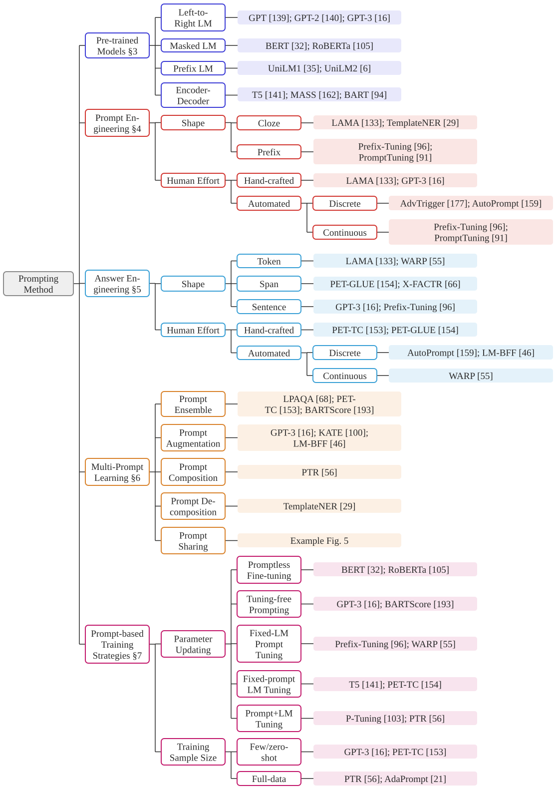
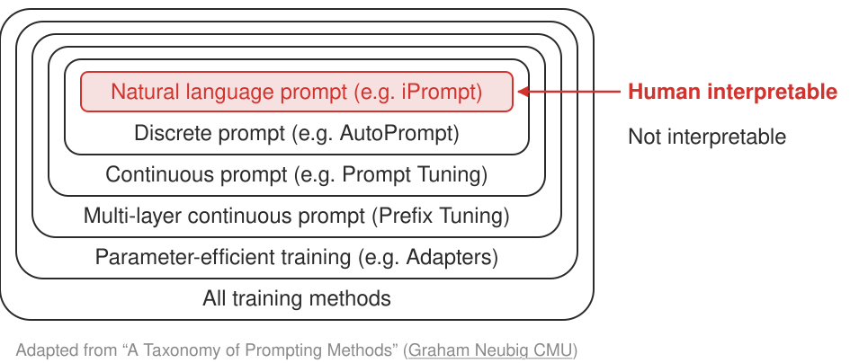

1.4. llms#
See related papers in the 📌 llm basics and 📌 interpretability pages.
1.4.1. prompting#
Over time, ML has bounced from feature-engineering -> architecture engineering -> prompt engineering (nowadays, it’s data engineering)
Pre-train, Prompt, and Predict: A Systematic Survey of Prompting Methods in Natural Language Processing (liu…neubig, 2021)
Overview figure

early prompting papers
LAMA: LMs as Knowledge Bases? (petroni…riedel, 2019) - use fill-in-the-blank (cloze) prompts for extracting knowledge from LLMs
create LAMA probe - dataset of (subject, relation, object) triplets with templates – find that BERT can recall these relations
How to Query LMs? (adolphs et al. 2021) - query LLMs by example (e.g. “Ronaldo plays for Portugal. Who does Neuer play for?”)
How Can We Know What LMs Know? (jiang … neubig, 2020)
mining-based and paraphrasing-based methods to automatically generate high-quality diverse prompts
ensemble methods to combine answers from different prompts (e.g. avg logits and more)
Noisy Channel LM Prompting for Few-Shot Text Classification (min et al. 2022)
Querying $\(P(question\vert answer)\)\( with Bayes rule outperforms standard querying \)\(P(answer\vert question)\)$
1.4.1.1. (auto)prompting#

natural-language prompting
iPrompt: Explaining Patterns in Data with LMs via Interpretable Autoprompting (singh, morris, …gao, 2022)
APE: LLMs Are Human-Level Prompt Engineers (zhou…ba, 2022)
similar to iPrompt, (1) propose prompt candidates with an LLM, (2) score the prompts by the accuracy they yield when using another LLM and (3) regenerate similar prompt candidates
experiments on instruction induction datasets + truthful QA
FluentPrompt: Toward Human Readable Prompt Tuning (shi, …, zettlemoyer, 2022) - use langevin sampling + fluency constraint to generate prompt
experiments relatively weak: 3 sentiment datasets + autoprompt is the only baseline
OPRO: LLMs as Optimizers (yang…quoc le, zhou, & chen, 2023) - add in past prompts with their scores during optimization
Promptbreeder: Self-Referential Self-Improvement Via Prompt Evolution (fernando…rocktaschel, 2023) - simultaneously improve prompts with LLM + improve the mutation-prompts the LLM uses to mutate the prompts
Connecting LLMs with Evolutionary Algorithms Yields Powerful Prompt Optimizers (guo…yang, 2023)
PromptAgent: Strategic Planning with LMs Enables Expert-level Prompt Optimization (wang…hu, 2023) - iterate on prompt errors using MC tree search
LMs as Black-Box Optimizers for Vision-LMs (yu…pathak, & ramanan, 2023)
Automatic Prompt Optimization with “Gradient Descent” and Beam Search (pryzant…zeng, 2023) - LLM computes “gradient” by describing error made by previous prompts
Are LLMs Good Prompt Optimizers? (ma…huang, 2024) - critique that models often struggle
TextGrad: Automatic “Differentiation” via Text (yuksekgonul…zou, 2024)
GEPA: Reflective Prompt Evolution Can Outperform RL (agrawal…khattab, 2025)
Feedback Descent: Open-Ended Text Optimization via Pairwise Comparison (lee, boen & finn, 2025)
discrete prompting
AutoPrompt: Eliciting Knowledge from LMs with Automatically Generated Prompts (shin…sameer singh, 2020)
select prompts from a fixed set of tokens (resulting prompts are not coherent)
Universal Adversarial Triggers for Attacking and Analyzing NLP (wallace…sameer singh, 2019 ) - find input-agnostic sequences of tokens that trigger a model to produce a specific prediction when concatenated to any input from a dataset
RLPrompt: Optimizing Discrete Text Prompts with Reinforcement Learning (deng…hu, 2022)
LM-BFF: Making Pre-trained LMs Better Few-shot Learners (gao et al. 2020) - uses T5 to generate (i) template for the task (which might include a whole example or two) + (i) appropropriate label tokens in the vocabulary for the task (suffers from computationally intensive search + sub-optimal discrete space search)
PADA: Example-based Prompt Learning for on-the-fly Adaptation to Unseen Domains (ben-david, …, reichart, 2022)
continuous prompt optimization
Prefix-Tuning: Optimizing Continuous Prompts for Generation (li & percy liang, 2021) – optimizes in continuous space for language generation tasks
learn to map some parameters \(\theta\) through and MLP to generate a starting hidden state \(h_i\) – never actually sends the prefix through the network
P-Tuning: GPT Understands, Too (liu et al. 2021) – use LSTM to generate prompt embeddings (don’t map to tokens)
Control Prefixes for Parameter-Efficient Text Generation (clive, cao, & rei, 2022) - allow for adapting the prefix to each input example
DART: Differentiable Prompt Makes Pre-trained LMs Better Few-shot Learners (zhang…chen, 2022)
reformulating NLP task into differentially optimizing the prompt template + target label (given a pre-trained model)
focus on smaller models (Roberta-large + GPT-2) + few training shots
fluency constraint to ensure association among prompt embeddings
WARP: Word-level Adversarial ReProgramming (hambardzumyan et al. 2021) - add continous tokens + some task-specific parameters for better generalization
KnowPrompt: Knowledge-aware Prompt-tuning with Synergistic Optimization for Relation Extraction (chen et al. 2021) – incorporate relations, visualize learned prompt vectors with t-SNE
misc
Context-faithful Prompting for LLMs (zhou, shang, poon & chen, 2023) - ask question in clever way to force LLM to follow it
SentiPrompt: Sentiment Knowledge Enhanced Prompt-Tuning for Aspect-Based Sentiment Analysis (zhang et al. 2021) - use sentiment knowledge penalties in the prompt
Meta-learning via LM In-context Tuning (yanda chen…he, 2022) - given new task with new instruction
Prompt Programming for LLMs: Beyond the Few-Shot Paradigm (reynolds & mcdonell, 2021) - define metaprompts as general wrappers around tasks e.g. “This problem asks us to”
Re3: Generating Longer Stories With Recursive Reprompting and Revision (yang et al. 2022) - generate summaries, then expand and revise with prompts
Directional Stimulus Prompting (li, baoling peng, …jianfeng gao, xifeng yan, 2023) - generate hint keywords using small LLM that are put into the prompt when calling large LLM
memory-assisted prompt-editing (madaan…yang, 2022) - allows model to “save things to memory” that get added to prompt when needed
Prompting Is Programming: A Query Language For LLMs (beurer-kellner, fischer, & vechev, 2022)
can benefit from training for promptability
Adapting LMs for Zero-shot Learning by Meta-tuning on Dataset and Prompt Collections (zhong…klein, 2021)
Continued Pretraining for Better Zero- and Few-Shot Promptability (wu…sameer singh, beltagy, 2022)
1.4.1.2. chain-of-thought#
CoT Prompting (wei et al. 2022): in few-shot prompts, don’t just provide answer but also reasoning
model outputs reasoning + answer, leading to improved performance
Self-Discover: LLMs Self-Compose Reasoning Structures (zhou…le…zheng, 2024) - LLMs come up with their own step-by-step structure for a task
Self-Consistency Improves CoT Reasoning in LMs (wang, wei, schuurmans, quoc le, … zhou, 2022) - use output samples rather than greedy and return the most consistent final answer in the set
Challenging BIG-Bench Tasks and Whether CoT Can Solve Them (suzgun, …, quoc le, …, jason wei, 2022)
self-ask (press et al., 2022) - LLM asks itself (and then answers) follow-up questions before answering the initial question
Text Classification via LLMs (sun…wang, 2023) - add clues to the prompt
Let’s Do a Thought Experiment: Using Counterfactuals to Improve Moral Reasoning (ma, …, chen, 2023) - counterfactuals help improve CoT
RCOT: Detecting and Rectifying Factual Inconsistency in Reasoning by Reversing CoT (xue et al. 2023)
SelfCheck: Using LLMs to Zero-Shot Check Their Own Step-by-Step Reasoning (miao, teh, & rainforth, 2023)
EchoPrompt: Instructing the Model to Rephrase Queries for Improved In-context Learning (mekala…sameer singh, 2023) - replace let’s think step by step with Let’s repeat the question and also think step by step
Let’s Think Dot by Dot: Hidden Computation in Transformer LMs (pfau, merrill, & bowman, 2024)
Show Your Work: Scratchpads for Intermediate Computation with LMs (nye et al. 2021)
selection inference (creswell et al. 2022) - generate set of facts, then iteratively generate inferences from the facts to yield the final answer
least-to-most prompting (zhou…quoc le et al. 2022) - prompt LLM with context showing how to reduce into subproblems; then LLM sequentially solves the subproblems, using the previous answers
Generated Knowledge Prompting for Commonsense Reasoning (liu…hasjishirzi, 2021) - generate knowledge from an LLM then provide it as additional input when answering a question
maieutic prompting (jung et al. 2022) - generate a tree of all explanation of the form “True, because…”, “False, because…” then query LLM with these as prompts
then use Max-SAT to try to satisfy as many relations between the model explanations as possible to come up with the true answer
1.4.1.3. self-verification#
LM vs LM: Detecting Factual Errors via Cross Examination (cohen et al. 2023)
Thread of papers combating hallucination
verifiers (cobbe et al. 2021) - train model to judge whether an answer and thought are likely to be “valid”
subgoal search (czechowski et al. 2021) - train model to generate subgoals then solve them in a graph
STaR “Self-taught reasoner” (zelikman…goodman, 2022)
first, finetune on observed \((Q, T, A)\) triplets, where \(T\) is a rationale
then, impute unknown \(T_i\) given dataset of pairs \((Q_i, A_i)\) by sampling until finding a \(T_i\) which leads to the correct answer
zero-shot planning in robotics (huang, abbeel, pathak, & mordatch, 2022)
Prover-Verifier Games improve legibility of LLM outputs (kirchner, chen, … leike, mcaleese, & burda, 2024) - trained strong LMs to produce text that is easy for weak LMs to verify and found that this training also made the text easier for humans to evaluate
self-verification
review on self-verification (pan…wang, 2023)
Self-Refine: Iterative Refinement with Self-Feedback (madaan, …, clark, 2023)
Self-Verification Improves Few-Shot Clinical Information Extraction (gero et al. 2023)
SelfCheckGPT: Zero-Resource Black-Box Hallucination Detection for Generative LLMs (manakul…gales, 2023)
process reward models (openai, 2024) - identify and mitigate intermediate reasoning errors rather than just final answer
1.4.1.4. sampling / efficient inference#
tree-related
Aug-tree (singh, askari, caruana, & gao, 2023)
Tree-prompting (morris, singh, rush, gao, & deng, 2023)
Interpretable-by-Design Text Classification with Iteratively Generated Concept Bottleneck (ludan…callison-burch, 2023)
ACT: Agentic Classification Tree (grari…detyniecki, 2025) - same as tree-prompting
tree of thoughts (yao et al. 2023) - LLM generates a tree of intermediate answers and perform steps such as backtracking
Graph of Thoughts: Solving Elaborate Problems with LLMs (besta, .., hoefler, 2023) - allows merging/looping in the tree, e.g. for sorting
optimizing cost efficiency
frugalGPT (chen, zaharia, & zou, 2023)
3 components
prompt adaptation - identify effective / shorter prompts (e.g. less demonstrations)
LLM approximation - create simpler/cheaper LLMs
LLM cascade - adaptively choose LLM based on query
train “generation scoring function” - returns reliability score from 0 to 1 for each (question, answer)
router sequentially proceeds through LLM APIs, returning the answer if the reliability score is high enough
frugalML (chen, zaharia, zou, 2020) - tradeoff performance with budget for sequential cascade of API calls for single label
FrugalMCT (chen, zaharia, zou, 2022) - extends to multilabel
EcoAssistant: Using LLM Assistant More Affordably and Accurately (zhang…awadallah, wang, 2023) - answer code-driven queries efficiently using code executor + cascade of increasingly complex LLMs
decoding (basics in HF blog post + docs on slightly more advanced stuff)
greedy - iteratively pick highest-probability token
nucleus sampling: The Curious Case of Neural Text Degeneration (holtzman…choi, 2019)
contrastive decoding (li et al. 2022) - decode based on the difference between a large and small LLM
Context-aware decoding (shi, …zettlemoyer, yih, 2023) - the difference between the output probabilities when a model is used with and without context
DoLa: Decoding by Contrasting Layers Improves Factuality in LLMs (chuang…he, 2023) - contasting later layers with early layers can improve truthfulness
Calibrate Before Use: Improving Few-Shot Performance of LMs (zhao, …, dan klein, sameer singh, 2021) - to make prompting easier, first calibrate output distr by making it uniform when given null inputs, e.g. “N/A”
Minimum Bayes Risk Decoding (suzgun, …, jurafsky, 2022) or (freitag et al. 2022)
A Frustratingly Simple Decoding Method for Neural Text Generation (yang, …, shi, 2023) - build an anti-LM based on previously generated text and use this anti-LM to penalize future generation of what has been generated
Mixture of Inputs: Text Generation Beyond Discrete Token Sampling (zhuang, liu, singh, shang, & gao, 2025) - post-hoc (requires no finetuning), combines discrete tokens into continuous vector
Superposed Decoding: Multiple Generations from a Single Autoregressive Inference Pass (shen…kusupati, 2024) - try to sample k generations at once by superimposing token by token embeddings
Min-p sampling (nguyen…shwartz-ziv, 2025) - adjusts the sampling threshold based on the model’s confidence by using the top token’s probability as a scaling factor
Min-p, Max Exaggeration: A Critical Analysis of Min-p Sampling in LMs (schaeffer…denisov-blanch, 2025)
Sampling from Your LM One Byte at a Time (hayase, liu, smith, oh, 2025)
Broken Tokens? Your LM can Secretly Handle Non-Canonical Tokenizations (zheng…choi, smith, 2025) - some sequences can be tokenized in different ways (e.g. using character-level tokenizer) – feeding these into a model still generally works
Verbalized Sampling (zhang…shi, 2025) - simple prompting strategy for more diverse sampling, e.g. “Generate 5 jokes about coffee and their corresponding probabilities”
Alien Science: Sampling Coherent but Cognitively Unavailable Research Directions from Idea Atoms (artiles…rahaman, 2026)
1.4.1.5. prompt chaining / ensembling#
overviews
Ai chains: Transparent and controllable human-ai interaction by chaining LLM prompts (wu, terry, & cai, 2022) - chaining LLM steps together: output of one step becomes the input for the next
interactive system where users can modify chains + their intermediate results – improves performance + human experience
LM Cascades (dohan…sutton, 2022) - treat chaining models as probabilistic programs
use a probabilistic-programming language (PPL) to define a joint probability model on string-valued random variables, parameterized using LMs, and then condition this model on string-valued observations in order to compute a posterior over string-valued unknowns
self-PPLs extend probabilistic graphical models to support more complex joint distributions whose size and “shape” can itself be stochastic
e.g., a graph unrolled for a random number of iterations, until a data-dependent stopping criterion is met
variables are all text: questions \(Q\), answers \(A\), and intermediate thoughts \(T\)
prompt ensembles
liu…neubig, 2023 review discusses different strategies for ensembling prompts, e.g. averaging, weighted averaging
black-box querying
Tree-Prompting (morris…deng, 2023)
PromptBoosting: Black-Box Text Classification with Ten Forward Passes (hou, …, jacob andreas, …, zhang, 2022) - get a small pool of prompts, learn a verbalizer (final classification layer) for each, then ensemble them with AdaBoost on LLM output
people have studied many works on prompt ensembling (e.g. lester et al. 2021)
Boosted Prompt Ensembles for LLMs (pitis…ba, 2023) - similar but use CoT-style prompts and tasks, e.g. GSM8k
PREFER: Prompt Ensemble Learning via Feedback-Reflect-Refine (zhang…cai, 2023) - builds set of prompts dynamically rather than assuming they’re fixed
PTR: Prompt Tuning with Rules for Text Classification (han et al. 2021) – use logic rules to construct prompts with sub-prompts for many-class text classification (prompt is constructed hierarchically, but only one call is made to the LLM for inference)
soft prompts
Learning How to Ask: Querying LMs with Mixtures of Soft Prompts (qin & eisner, 2021) - learn a mixture of soft prompts using gradient descent
require model retraining
PRBOOST: Prompt-Based Rule Discovery and Boosting for Interactive Weakly-Supervised Learning (zhang…zhang, 2022) - iteratively (1) select high-error examples, (2) have human label them as rules, and (3) use boosting to train model on the new rules + ensemble
typical rule generation
Snuba (varma and ré, 2018) generates heuristics based on a small labeled dataset with pre-defined rule types
TALLOR (li et al. 2021a) & GLaRA (zhao et al. 2021) study rule expansion for NER problem based on lexical information and then select rules based on a hand-tuned threshold
Prompt ensembling / selection without labels
Zero-Label Prompt Selection (liao, zheng, & yang, 2022) - use prompts to label unlabeled data and then select prompts using these labels
A Simple Zero-shot Prompt Weighting Technique to Improve Prompt Ensembling in Text-Image Models (alingham…lakshminarayanan, 2023) - use confidence (max output logit) after appropriate normalization as weight
few-shot text classification
FastFit (yehudai & bandel, 2024) - fit few-shot batch with contrastive examples then predict using similarities to shots rather than a classification head (base model is roberta)
SetFit (tunstal…pereg, 2022) - finetune stentence transformer with contrastive loss, then train classification head
zero-shot text classification
Jev: Introducing System One Models (almeida / typesafe, 2026) - generally accurate and efficient, trained by something called “RLCD”
SemIf (theoleecj, 2026) - open Jev alternative that uses the naive approach of reading a softmax over the answer letters’ next-token logits of a frozen open model
JevK5 (serikbay, 2026) - SemIf + some LoRA training on this general task
Kev (palmer, 2026) - introduce special tokens at the start of (i) the query and (ii) each answer choice, then get embeddings of each answer choice and compare their similarity to the query
CLM: Contrastive Language Models (kwok…re, mirhoseini, 2026) - CLIP-style training of the embeddings of the query and the choices
Dense Communication between LMs (wu, wang, yao, 2025) - use pre-trained LMs as modules, and pass continuous embeddings between them
train seq2seq models to connect the different small LMs, and get strong performance with very small training cost
1.4.1.6. llm querying / causal inference#
Can LLMs Infer Causation from Correlation? (jin…scholkopf, 2023) - introduce Corr2Cause dataset (must infer causal graph from correlational statements), doesn’t test pre-existing knowledge
Causal Reasoning and LLMs: Opening a New Frontier for Causality (kiciman…tan, 2023)
LLMs to be used alongside existing causal methods, as a proxy for human domain knowledge and to reduce human effort in setting up a causal analysis
cause-effect pairs, LLM has to discover from graph (tubingen benchmark, neuropathic pain, etc.)
Causal Inference in Natural Language Processing: Estimation, Prediction, Interpretation and Beyond (feder…vetich, diyi yang, 2022)
Zero-shot causal learning (nilforoshan…leskovec, 2023)
InferBERT: A Transformer-Based Causal Inference Framework for Enhancing Pharmacovigilance (wang…liu, 2021) - learn + test feature relationships from attention weights
CausaLM: Causal Model Explanation Through Counterfactual LMs (2021) - produce example-level causal model explanations using models finetuned on auxiliary adversarial tasks derived from the causal graph of the problem
Investigating Gender Bias in LMs Using Causal Mediation Analysis (vig, …, shieber, 2020)
Applies causal mediation analysis to identify decisive neurons and attention heads responsible for gender bias in LLMs
Identifies a small handful of decisive attention heads in this case
Amnesic Probing: Behavioral Explanation with Amnesic Counterfactuals (elazar, …, goldberg, 2021) - measure the importance of specific info within a model by introducing a causal intervention to erase that information, then observing the causal effects
TrustLLM (sun…zhao, 2024) - evaluation and benchmark of many aspects of trustworthiness (github)
What Evidence Do LMs Find Convincing? (wan, wallace, & klein, 2024) - rather than relying on facts, LLMs largely rely on textual similarities in evidence to decide whether it’s important
Deductive Closure Training of LMs for Coherence, Accuracy, and Updatability (aykurek…andreas, 2024) - LMs generate additional text implied by documents, reason about the generated text, and finetune on the correct text
LMs’ reasoning capabilities during inference can be leveraged during training to improve their reliability
Causal foundation models
Do-PFN: In-Context Learning for Causal Effect Estimation (robertson…hollman, hutter, scholkopf, 2025)
Black Box Causal Inference: Effect Estimation via Meta Prediction (bynum…cho, ranganath, 2025)
CausalPFN: Amortized Causal Effect Estimation via In-Context Learning (balazadeh…krishnan, 2025)
CausalFM: FMs for Causal Inference via Prior-Data Fitted Networks (ma, frauen, javurek & feuerriegel, 2025)
getting diverse outputs
Echoes in AI: Quantifying lack of plot diversity in LLM outputs (xu…dolan, 2024) - LLM-generated stories often contain combinations of idiosyncratic plot elements echoed frequently across generations and across different LLMs
1.4.1.7. uncertainty#
Semantic Uncertainty (kuhn, gal, & farquhar, 2023) - instead of calculating entropy over tokens, first generate set of answers, then cluster them base on semantic equivalence, before computing entropy
clustering is done via an LM that tests entailment e.g. E.g., “The capital of France is Paris.” entails “Paris is the capital of France.” because they mean the same thing
Can LLMs Express Their Uncertainty? An Empirical Evaluation of Confidence Elicitation in LLMs (xiong…hooi, 2023)
verbalized uncertainty - model outputs its own uncertainty
consistency-based uncertainty - consistency between output generations
Quantifying Uncertainty in Natural Language Explanations of LLMs (tanneru…lakkaraju, 2023)
probing uncertainty (like consistency-based uncertainty above) - applies input perturbations (e.g., paraphrasing) and measure the consistency of the resulting explanations
verbalized uncertainty of explanations often performs poorly
Relying on the Unreliable: The Impact of LMs’ Reluctance to Express Uncertainty (zhou…sap, 2024)
LMs are often unable to express uncertainties
LM confidences tend to be overconfident
users rely heavily on LM generations, whether or not they are marked by certainty
Teaching Models to Express Their Uncertainty in Words (lin et al., 2022) - GPT3 can generate both an answer and a level of confidence (e.g. “90% confidence”)
Decomposing Uncertainty for LLMs through Input Clarification Ensembling (hou…zhang, 2023)
1.4.1.8. prompt compression / compiling#
Learning How to Ask: Querying LMs with Mixtures of Soft Prompts (qin & eisner, 2021) - learn a mixture of soft prompts using gradient descent
liu…neubig, 2023 review discusses different strategies for ensembling prompts, e.g. averaging, weighted averaging
Prompt ensembling / selection without labels
Zero-Label Prompt Selection (liao, zheng, & yang, 2022) - use prompts to label unlabeled data and then select prompts using these labels
A Simple Zero-shot Prompt Weighting Technique to Improve Prompt Ensembling in Text-Image Models (alingham…lakshminarayanan, 2023) - use confidence (max output logit) after appropriate normalization as weight
LLMLingua (jiang, wu…qiu, 2023) - learn BERT-size model to compress prompt (iterative token classification approach from distilled GPT-4 compressed prompts)
LongLLMLingua: Accelerating and Enhancing LLMs in Long Context Scenarios via Prompt Compression (jiang, wu…qiu, 2023)
1.4.1.9. classifier-guided generation#
Plug and Play LMs: A Simple Approach to Controlled Text Generation (dathathri, …, yosinski, & liu, 2020)
gradients from the classifier push the LM’s hidden activations, then recompute logits to guide generation (and maybe avg with original logits to maintain fluency)
FUDGE: Controlled Text Generation With Future Discriminators (yang & klein, 2021)
classifier predicts probability of attribute for running sequence with each next-token appended
these attribute probs. are multiplied with next-token probs for each token and then we sample from that distr (after normalization)
Diffusion-LM Improves Controllable Text Generation (lisa li, thickstun, gulrajani, liang, & hashimoto, 2022) - continuous embeddings
Mixture of Soft Prompts for Controllable Data Generation (chen, lee, …, yu, 2023) - trains a small model on data from a big frozen LLM that is then more controllable
1.4.2. architecture engineering & vetting#
1.4.2.1. architecture/attention variants#
state space models (good overview in albert gu thesis, 2023)
S4: structured state space models (gu…re, 2022) - similar to RNNs but can predict all outputs at once via convolution
the core of the state space model is basically a linear RNN
inputs x, hidden states h, outputs y
3 matrices: \(A, B, C\)
\(y_i = C h_i\)
- \[ \begin{align}\begin{aligned}h_i = \cblue{A h_{i-1}} + \corange{B x_i}$$<!-- --> - note: there is no nonlinearity between hidden states - note: the <span class="cblue">transition from one hidden state to the next</span> is the same for all positions (except for the <span class="corange">input</span>) - can compute hidden states simultaneously by just pre-multiplying these A and B matrices with x the right number of times ( a convolution operation) - mamba: *selective* state space models ([gu & dao, 2023](https://arxiv.org/abs/2312.00752)) - changes (2) above -- the transition from one hidden state to the next now depends on the input (making it closer to LSTMs) - $B = B(x)$ - $C = C(x)$ - RNNs are not Transformers (Yet): The Key Bottleneck on In-context Retrieval ([wen, dang, & lyu, 2024](https://arxiv.org/abs/2402.18510)) - RNNs fail to retrieve info from long contexts, RAG helps - Dynamic Compression in Recurrent Networks ([pari, bahlous-boldi & agrawal, 2026](https://arxiv.org/abs/2608.17896v1)) - allow model to seletively rescan information instead of having fixed-size latent state - MAD synthetic tasks: Mechanistic Design and Scaling of Hybrid Architectures ([poli...ermon, re, zhang, & massaroli, 2024](https://arxiv.org/abs/2403.17844)) - introduces 6 synthetic tasks on which performance correlates very well when scaling to real tasks: in-context recall, fuzzy in-context recall, noisy in-context recall, selective copying, compression, memorization - Scalable MatMul-free LMs ([zhu...eshraghian, 2024](https://arxiv.org/abs/2406.02528)) - LM architecture that doesn't use matmuls, builds on GRU, and shows improved efficiency on FPGAs - The Era of 1-bit LLMs: All LLMs are in 1.58 Bits ([ma...wei, 2024](https://arxiv.org/abs/2402.17764)) - BitNet: Scaling 1-bit Transformers for LLMs ([wang...wei, 2023](https://arxiv.org/abs/2310.11453)) - HRM: Hierarchical Reasoning Model (Sapient; [wang...yadkori, 2025](https://arxiv.org/abs/2506.21734)) - 4 learnable components: an input network, a low-level recurrent module, a high-level recurrent module, and an output network - TRM: Tiny Recursive Model: Recursive Reasoning with Tiny Networks ([jolicoeur-martineau, 2025](https://arxiv.org/abs/2510.04871)) - Teaching Pretrained LMs to Think Deeper with Retrofitted Recurrence ([mcleish...goldblum, 2025](https://arxiv.org/abs/2511.07384)) - post-train regular LMs into looped models - The Dragon Hatchling: The Missing Link between the Transformer and Models of the Brain (Pathway; [kosowski...bartoszkiewicz, 2025](https://arxiv.org/abs/2509.26507)) - Misc - Tree Transformer: Integrating Tree Structures into Self-Attention ([wang, .., chen, 2019](https://arxiv.org/abs/1909.06639.pdf)) - Waveformer: Linear-Time Attention with Forward and Backward Wavelet Transform ([zhuang...shang, 2022](https://arxiv.org/abs/2210.01989)) - White-Box Transformers via Sparse Rate Reduction: Compression Is All There Is? ([yaodong yu...yi ma, 2023](https://arxiv.org/abs/2311.13110)) - Matryoshka LM Suites ([godey & artzi, 2026](https://arxiv.org/abs/2608.09703v1))\\ ### mixture of experts (MoE) / routing\\mixture of experts models have become popular because of the need for (1) fast speed / low memory at test time while still (2) having a large model during training\\- note: nowadays often the "experts" are different MLPs following the self-attention layers (since their computations can be computed independently) - A Review of Sparse Expert Models in Deep Learning ([fedus, jeff dean, zoph, 2022](https://arxiv.org/abs/2209.01667)) - sparsity decouples the parameter count from the compute per example allowing for extremely large, but efficient models - routing algorithm - determines where to send examples - discreteness makes it difficult - some works use RL to learn routing - standard approach uses gumbel-softmax - usually get matrix of similarities between input tokens and experts and route based on these - sometimes route to topk experts rather than top1 - load balancing - usually add an auxiliary loss to encourage equal tokens being sent to different experts - non-specialized experts - Early versions ([jacobs, michael jordan, nowlan, & hinton, 1991](https://ieeexplore.ieee.org/abstract/document/6797059)) had independent feed-forward networks serving as experts - Sparsely-gated MOE layer ([shazeer...quoc le, hinton, dean, 2017](https://arxiv.org/abs/1701.06538)) have been studied with token-based routing with backprop - replace FFN in transformers with expert layers - GShard [Lepikhin et al. (2021)](https://arxiv.org/abs/2006.16668), which appplies this concept to machine translation - Switch transformers ([fedus et al. (2022)](https://www.jmlr.org/papers/volume23/21-0998/21-0998.pdf)) simplifies the architecture to activation of only one expert per layer - BASE Layers [Lewis et al. (2021)](https://proceedings.mlr.press/v139/lewis21a.html) - find an alternative approach to routing by formulating it as a linear assignment problem - Hash layers [Roller et al. (2021)](https://arxiv.org/abs/2106.04426) use a fixed hash as the gating function - THOR ([zuo, liu...zhao, gao, 2022](https://arxiv.org/abs/2110.04260)) - randomly route to different experts then merge at the parameter level at test time - [routing notes](https://www.sscardapane.it/assets/files/nnds2022/Lecture_8_Dynamic_NNs.pdf) - make hard decision but still want to learn probabilities - straight-through estimator (STE) - take the argmax during the forward pass, while considering the original probabilities in the backward pass - highly biased - gumbel-softmax- allows for better sampling - specialized experts as fully independent models (sometimes for multi-task learning) - DEmix Layers ([gururangan...smith, zettlemoyer, 2021](https://arxiv.org/abs/2108.05036)) -- DEMix layers – placed in the feedforward layers of the Transformer – contain experts which specialize on specific domains. Routing at train time is determined only by the domain label, but all experts are activated at inference time and mixed according to weights estimated from a validation set - Sparsely Activated Mixture-of-Experts are Robust Multi-Task Learners ([gupta...awadallah, gao, 2022](https://arxiv.org/abs/2204.07689)) - use task description to improve routing - [Pfeiffer et al. (2022)](https://arxiv.org/abs/2205.06266) - multilingual expert model with language-specific routing - task-level MoE [Kudugunta et al. (2021](https://arxiv.org/abs/2110.03742)) -- multi-task expert model with task-specific routing - scaling up - OPT-MOE ([artetxe et al. 2021](https://arxiv.org/abs/2112.10684)) - AutoMoE ([jawahar, mukherjee, liu...gao, 2022](https://arxiv.org/abs/2210.07535)) - Towards Understanding Mixture of Experts in Deep Learning ([chen...gu, li, 2022](https://arxiv.org/abs/2208.02813)) - Interpretable Mixture of Experts ([ismail...pfister, 2023](https://arxiv.org/abs/2206.02107)) - each sample assigned to single expert for prediction - InterpretCC: Intrinsic User-Centric Interpretability through Global Mixture of Experts ([swamy...kaser, 2024](https://arxiv.org/abs/2402.02933v2)) - first, discriminator predicts which features are important. Then, all other features are masked and used for prediction. The discriminator network can additionally select a different network to send different features to\\### pruning / caching\\- SparseGPT: Massive LMs Can Be Accurately Pruned in One-Shot ([frantar & alistarh, 2023](https://arxiv.org/abs/2301.00774)) - prune GPT-style models to atleast 50% sparsity in one-shot, without any retraining, at minimal loss of accuracy - Cramming: Training a LM on a Single GPU in One Day ([geiping & goldstein, 2022](https://arxiv.org/abs/2212.14034)) - tricks for training BERT - The Unreasonable Ineffectiveness of the Deeper Layers ([gromov...roberts, 2025](https://arxiv.org/abs/2403.17887)) - use angle similarity to search for which consecutive layers to remove and find that can easily remove large numbers of deep layers - fast decoding - [KV caching](https://kipp.ly/transformer-inference-arithmetic/) + some other tricks - if repeatedly using the same tokens at the beginning of the context, can cache the KV vectors for those tokens - KV caching trades off speed with memory - FastGen: Model Tells You What to Discard: Adaptive KV Cache Compression for LLMs ([ge...gao, 2024](https://arxiv.org/abs/2310.01801)) - for each input prompt, run quick profiling to decide whether to evict things from the KV cache (e.g. attention heads that don't care about long context, or heads that attend only to punctuation) - speculative decoding ([leviathan, kalma, & matias, 2022](https://arxiv.org/abs/2211.17192)) - decode multiple tokens in parallel with small model, potentially skipping steps for the large model - Speculative Speculative Decoding ([kumar, dao & may, 2026](https://arxiv.org/abs/2603.03251)) - while big model is verifying speculation, also generate more speculations with the small model (based on guessing what will be verified) - early exit - popular way to speed up inference - Multi-exit vision transformer for dynamic inference ([bakhtiarnia, a., zhang, q. and iosifidis, a., 2021](https://arxiv.org/abs/2106.15183)) - early layers have large activation map so early exist classifier must be complex - solution: ViT class token allows early-exit classifier to have constant complexity - DeeBERT: Dynamic early exiting for accelerating BERT inference ([xin...lin, 2020](https://arxiv.org/abs/2004.12993))\\### adaptation / transfer\\*These are transformer-specific. For more general notes, see [📌 transfer learning](https://csinva.io/notes/research_ovws/ovw_transfer_learning.html) or [📌 uncertainty](https://csinva.io/notes/research_ovws/ovw_transfer_learning.html).* Most of these approaches can be combined with metalearning.\\- finetuning - finetune all DNN params - finetune linear layer on activations - standard - train linear model on the embedding of the first token (usually an added `[CLS]` token) ([peters et al. 2018](https://aclanthology.org/N18-1202/)) - finetune linear model on all the activations - e.g. [evci, et al. 2022](https://arxiv.org/abs/2201.03529) - learn linear layer (using group-lasso) on features extracted from all layers - finetune specific DNN params (e.g. just the bias terms) - Cutting Down on Prompts and Parameters ([logan...sameer singh, riedel, 2021](https://arxiv.org/abs/2106.13353)) - finetune only the bias terms; works even with null prompts - BitFit: Simple Parameter-efficient Fine-tuning for Transformer-based Masked Language-models ([zaken, ravfogel, & goldberg, 2021](https://arxiv.org/abs/2106.10199)) - finetune only bias terms - adapter - finetune lightweight layers on top of pre-trained layers (between finetuning all layers, and just finetuning a new layer) - add some new layers and retrain some specific things (all human choices) - side-tuning ([zhang, sax...malik, 2020](https://link.springer.com/chapter/10.1007/978-3-030-58580-8_41)) - train a “side” network that is fused with the pretrained model via summation - Combining Modular Skills in Multitask Learning ([ponti, sordoni, bengio, & reddy, 2022](https://arxiv.org/abs/2202.13914.pdf)) - learn adaptor with disentangled inventory of skills - [Parameter-Efficient Transfer Learning for NLP](http://proceedings.mlr.press/v97/houlsby19a.html) - AdapterHub: A Framework for Adapting Transformers ([pfeiffer et al. 2020](https://arxiv.org/abs/2007.07779)) - Programs-as-weights https://x.com/yuntiandeng/status/2044086557330579851?s=20 - for tasks that are easy to describe but annoying to implement with rigid rules, e.g. Urgency triage. Broken JSON repair. Log filtering. Tool routing. - Text-to-LoRA: Instant Transformer Adaption ([charakorn, cetin, tang & lange, 2025](https://arxiv.org/abs/2506.06105)) - Learning to Generate Task-Specific Adapters from Task Description ([ye & ren, 2021](https://arxiv.org/abs/2101.00420)) - HINT: Hypernetwork Instruction Tuning for Efficient Zero- & Few-Shot Generalisation ([ivison...peters, 2022](https://arxiv.org/abs/2212.10315)) - HyperTuning: Toward Adapting LLMs without Back-propagation ([phang, mao, he & chen, 2022](https://arxiv.org/abs/2211.12485)) - vaguely similar to adapter - LoRA - QLoRA: Efficient Finetuning of Quantized LLMs ([dettmers, ..., zettlemoyer, 2023](https://arxiv.org/abs/2305.14314)) - TOAST ([shi, …, darrel, xin wang, 2023](https://arxiv.org/abs/2305.15542.pdf)) - use top-down attention steering for efficient finetuning - TinyLoRA: Learning to Reason in 13 Parameters ([morris, mireshghallah, ibrahim & mahloujifar, 2026](https://arxiv.org/abs/2602.04118)) - decompose LoRA into even less params usingn random projection within the SVD matrix - Find that for RL tasks can work with very few learned params (SFT requires more) - LoRA-Squeeze: Simple and Effective Post-Tuning and In-Tuning Compression of LoRA Modules ([vulić, grycner, de laroussilhe & pfeiffer, 2026](https://arxiv.org/abs/2602.10993)) - first learn high-rank LoRA, then squeeze to target rank. - focused on editing - Continual Learning via Sparse Memory Finetuning ([jessy lin, zettlemoyer...oğuz, 2025](https://arxiv.org/abs/2510.15103); + [blog post](https://jessylin.com/2025/10/20/continual-learning/)) - learn sparse layers building on memory layers ([berges...ghosh, 2024](https://arxiv.org/abs/2412.09764)) that show strong performance improvements - predict a mask - ablate some model weights by training a binary mask over model parameters (Zhao et al., 2020; Radiya-Dixit and Wang, 2020) - predict mask over attention heads - prompting = few-shot learning = priming = in-context learning (starts with GPT) - prompting without changing any model parameters - limitation: can't exploit sets longer than the training window - MetaICL: Learning to Learn In Context ([min et al. 2022](https://arxiv.org/abs/2110.15943)) - tune LLM to do in-context learning on a large set of training tasks (few-shot prompting and training time and at test-time) - Visual Prompting via Image Inpainting ([bar...darrell, globerson, efros, 2022](https://arxiv.org/abs/2209.00647) ) - PatternExploiting Training (PET) -- Exploiting Cloze Questions for Few Shot Text Classification and Natural Language Inference ([schick & schutze, 2021](https://aclanthology.org/2021.eacl-main.20.pdf)) - **cloze questions** - same as masked LMs: task is to replace some missing words - use cloze-question templates (e.g. it was "good" or "bad") to get soft labels for unlabeled data and then finetune on theses - prompt-tuning (also see next section on autoprompting) - Attentional Mixtures of Soft Prompt Tuning for Parameter-efficient Multi-task Knowledge Sharing ([asai et al. 2022](https://arxiv.org/abs/2205.11961)) - STT: Soft Template Tuning for Few-Shot Adaptation ([yu et al. 2022](https://arxiv.org/abs/2207.08408)) - Mixture of Soft Prompts for Controllable Data Generation ([chen, ... yu, 203](https://arxiv.org/abs/2303.01580)) - LLMs as Synthetic Data Generators for Training Smaller Models - long-context adaptation - RoPE: RoFormer: Enhanced Transformer with Rotary Position Embedding ([su...liu, 2021](https://arxiv.org/abs/2104.09864)) - encodes the absolute position with a rotation matrix - NTK+RoPE (LocalLLaMA reddit post) - unequal interpolation and extrapolation across RoPE dimensions - YaRN ([peng et al., 2023](https://arxiv.org/abs/2309.00071)) - categorizes RoPE dimensions into 3frequency-based groups & applies extrapolation, NTK, and linear interpolations, respectively - LongRoPE ([ding...yang, 2024](https://arxiv.org/abs/2402.13753)) - exploit two forms of non-uniformities in positional interpolation through genertic algo search - progressive extension (first extend to 256k then to 2048k) - readjust on short contexts to preserve original perf - Self-Adapting LMs ([zweiger...pulkit agrawal, 2025](https://arxiv.org/abs/2506.10943)) - use RL to have LLMs self-adapt by generating their own finetuning data (+maybe some hyperparameters / augmentations / other details) and the LoRA finetuning on that data - **mt-dnn line of work** - Multi-Task Deep Neural Networks for Natural Language Understanding ([xiaodong liu ... gao 2019](https://aclweb.org/anthology/papers/P/P19/P19-1441/)) - multi-task learning on the 9 glue tasks (first layers are shared, then some task-specific layers at top) - RAdam: On the Variance of the Adaptive Learning Rate and Beyond ([liyuan liu...gao, han, 2020](https://openreview.net/pdf?id=rkgz2aEKDr)) - usually need to do learning-rate warmup when trainin (e.g. with Adam) - RAdam = add a term to rectify the variance of the adaptive learning rate in Adam - SMART: Robust and Efficient Fine-Tuning for Pre-trained Natural LMs through Principled Regularized Optimization ([jiang...gao, zhao, 2020](https://aclanthology.org/2020.acl-main.197/)) 1. Smoothness-inducing regularization, which effectively manages the complexity of the model 2. Bregman proximal point optimization to prevent aggressive updating - Microsoft Toolkit of Multi-Task Deep Neural Networks for Natural Language Understanding ([xiaodong liu...gao, 2020](https://aclanthology.org/2020.acl-demos.16/)) - Posterior Differential Regularization with f-divergence for Improving Model Robustness ([hao cheng, ..., gao 2021](https://aclanthology.org/2021.naacl-main.85/)) - regularize model posterior difference between clean + noisy inputs (e.g. adversarially attacked inputs) - **comparing different tasks** - Task2Vec: Task Embedding for Meta-Learning ([achille, ..., soatto, perona, 2019](https://openaccess.thecvf.com/content_ICCV_2019/html/Achille_Task2Vec_Task_Embedding_for_Meta-Learning_ICCV_2019_paper.html)) - summarize each task as a vector, by taking diagonal of fisher info matrix (derivative of network output wrt to parameters) - clusters similar tasks - Efficiently Tuned Parameters are Task Embeddings ([zhou...mcauley, 2022](https://arxiv.org/abs/2210.11705)) - Editing Models with Task Arithmetic ([ilharco, ribeiro, ..., farhadi, 2022](https://arxiv.org/abs/2212.04089)) - task vector is model weights after task finetuning - model weights before finetuning - can use this direction to alter model behavior - Overcoming Catastrophic Forgetting in Zero-Shot Cross-Lingual Generation ([vu....constant, 2022](https://arxiv.org/abs/2205.12647)) - train with prompts of some (language translation, task) pairs and show that they can generalize to new (language, task) pairs\\### instruction tuning / rlhf / rl\\- PASTA: Tell Your Model Where to Attend: Post-hoc Attention Steering for LLMs, PASTA ([zhang et al. 2023](https://arxiv.org/abs/2311.02262)) - select attention heads to upweight for specific part of the prompt - Model Tells Itself Where to Attend: Faithfulness Meets Automatic Attention Steering ([zhang et al. 2024](https://arxiv.org/abs/2409.10790)) - rather than user-given prompt upweighting, instead model decides what to upweight - Salience Aware Mark-Steered Prompting For LLMs ([iclr submission, 2025](https://openreview.net/forum?id=oySbAiD69E)) - automatically identifies mask to apply to input tokens with gradient-guided search, then upweights similar to contrastive decoding - Attention Reveals More Than Tokens: Training-Free Long-Context Reasoning with Attention-guided Retrieval ([zhang...jingbo shang, 2025](https://arxiv.org/abs/2503.09819)) - see what context tokens get high attention scores during CoT, then explicitly retrieve those and use in new CoT - Instruction Following by Boosting Attention of LLMs ([guardierio...wong, 2025](https://www.arxiv.org/abs/2506.13734)) - like PASTA with cheaper profiling - Focus on This, Not That! Steering LLMs with Adaptive Feature Specification ([lamb, davies, paren, torr, & pinto, 2025](https://arxiv.org/abs/2410.22944)) - add focus instruction tuning, which finetunes LLM specifically to focus on some things while ignoring others - SIMS: Self-Improving Model Steering ([zhu…wang, 2025](https://arxiv.org/abs/2507.08967)) - generates and refines contrastive samples through iterative self-improvement cycles, enabling adaptive, context-specific steerin - Selective Prompt Anchoring for Code Generation ([tian & zhang, 2024](https://arxiv.org/abs/2408.09121)) - use contrastive decoding on user queries in code generation - HonestLLaMA = Inference-Time Intervention: Eliciting Truthful Answers from a LM ([li...wattenberg, 2023](https://arxiv.org/abs/2306.03341)) - observe a full 40% difference between probe accuracy (decoding from activations) and generation accuracy (generating answer throught prompting) on TruthfulQA - step 1 = profiling: identify a sparse set of attention heads with high linear probing accuracy for truthfulness (from small profiling set on truthfulqa) - step 2 = shift activation along these truth-correlated directions at inference time - Discovering Latent Knowledge in LMs Without Supervision ([burns, ye, klein, & steinhardt, 2022](https://arxiv.org/abs/2212.03827)) - identify whether text is true or false directly from a model’s *unlabeled activations* - LASER: Improving Reasoning in LMs with Layer-Selective Rank Reduction ([sharma...misra, 2023](https://arxiv.org/abs/2312.13558)) - Teach Llamas to Talk: Recent Progress in Instruction Tuning ([gao blogpost 2023](https://gaotianyu.xyz/blog/2023/11/30/instruction-tuning/)) - human feedback - Learning to summarize with human feedback ([openai, 2020](https://proceedings.neurips.cc/paper/2020/hash/1f89885d556929e98d3ef9b86448f951-Abstract.html)) - Can LMs learn from explanations in context? ([lampinen et al. 2022](https://arxiv.org/abs/2204.02329)) - natural language feedback ([scheurer et al. 2022](https://arxiv.org/abs/2204.14146)) - makes training more efficient - Training LMs with Language Feedback at Scale ([scheurer et al. 2023](https://arxiv.org/abs/2303.16755.pdf)) - Explanation-based Finetuning Makes Models More Robust to Spurious Cues ([ludan...callison-burch, 2023](https://arxiv.org/abs/2305.04990)) - Post hoc explanations of LMs can improve LMs ([krishna...singh, lakkaraju, 2023](https://arxiv.org/abs/2305.11426)) - use rationales as corrective signals for LLMs - Show Me How It’s Done: The Role of Explanations in Fine-Tuning LMs ([ballout...kuhnberger, 2023](https://arxiv.org/abs/2402.07543.pdf)) - RLAIF: Scaling Reinforcement Learning from Human Feedback with AI Feedback ([lee...rastogi, 2023](https://arxiv.org/abs/2309.00267)) - Tuning LMs by Proxy ([liu...choi, smith, 2024](https://arxiv.org/abs/2401.08565)) - Self-Rewarding LMs ([yuan...weston, 2024](https://arxiv.org/abs/2401.10020)) - Reinforcement Pre-Training ([dong...wei, 2025](https://arxiv.org/abs/2506.08007))\\### diffusion LLMs (dLLMs)\\Nice survey here: A Survey on dLLMs ([li, chen, guo & shen, 2025](https://arxiv.org/abs/2508.10875)) and helpful code package here: Simple Diffusion Language Modeling ([zhou, chen, tong & song, 2026](https://arxiv.org/abs/2602.22661v1))\\- Continuous modeling - transform discrete text into a continuous latent space, apply a diffusion process and then decode the output back into discrete tex - Diffusion-LM Improves Controllable Text Generation ([lisa li, thickstun, gulrajani, liang, & hashimoto, 2022](https://arxiv.org/abs/2205.14217)) - fixed set of continuous word vectors are progressively denoised from Gaussian noise - Latent Diffusion for Language Generation ([lovelace...weinberger, 2023](https://proceedings.neurips.cc/paper_files/paper/2023/file/b2a2bd5d5051ff6af52e1ef60aefd255-Paper-Conference.pdf)) - AR-Diffusion: Auto-Regressive Diffusion Model for Text Generation ([wu...chen, 2023](https://proceedings.neurips.cc/paper_files/paper/2023/hash/7d866abba506e5a56335e4644ebe18f9-Abstract-Conference.html)) - TESS: Text-to-Text Self-Conditioned Simplex Diffusion ([mahabadi...cohan, 2023](https://arxiv.org/abs/2305.08379)) - Scaling Beyond Masked Diffusion LMs ([sahoo...jukic, 2026](https://arxiv.org/abs/2602.15014)) - Energy-Based dLLMs for Text Generation ([xu...leskovec, ermon, & vahdat, 2024](https://arxiv.org/abs/2410.21357)) - From Denoising Diffusions to Denoising Markov Models ([benton...doucet, 2024](https://arxiv.org/abs/2211.03595)) - SEDD: Discrete Diffusion Modeling by Estimating the Ratios of the Data Distribution ([lou, meng, & ermon, 2024](https://arxiv.org/abs/2310.16834)) - model $p(\text{altered text}) / p(\text{orig text})$, and make alterations using word swaps at individual locations - Mercury: Ultra-Fast LMs Based on Diffusion ([inception labs...ermon, grover, kuleshov, 2025](https://arxiv.org/abs/2506.17298)) - Masked modeling - LLaDA ([nie, ..., li, 2025](https://arxiv.org/abs/2502.09992)) - scale to 8B and competitive with LLaMA 3 8B at many tasks - $t \in (0, 1)$, each token is masked with prob $t$, and iteratively predicts masked tokens as $t$ moves from 1 to 0 (simultaneously predicts all masked tokens) - LLaDA2.0: Scaling Up Diffusion Language Models to 100B ([bie…zhuang, 2025](https://www.arxiv.org/abs/2512.15745)) - Simple and Effective Masked Diffusion LMs ([sahoo...rush, kuleshov, 2024](https://proceedings.neurips.cc/paper_files/paper/2024/hash/eb0b13cc515724ab8015bc978fdde0ad-Abstract-Conference.html)) - LongLLaDA: Unlocking Long Context Capabilities in dLLMs ([liu...qiu, 2025](https://arxiv.org/abs/2506.14429v1)) - adds NTK+RoPE to LLaDA - UltraLLaDA: Scaling the Context Length to 128K for dLLMs ([he...yuan, 2025](https://arxiv.org/abs/2510.10481)) - use a simple modification to RoPE - Dream 7B ([ye...kong, 2025](https://github.com/HKUNLP/Dream)) - DiffuLLaMA ([gong...jiawei han, kong, 2025](https://openreview.net/pdf?id=j1tSLYKwg8)) - adapt LM by annealing the causal mask causal mask during training then slowly predicting a masked token's label rather than the next token (minor point about shifting: still have each head predict the label of the next token rather than the current token, since its more similar to what the original model was trianed for) - Diffusion LMs Can Perform Many Tasks with Scaling and Instruction-Finetuning ([ye...quanquan gu, 2023](https://arxiv.org/abs/2308.12219)) - adapt LLaMA to DLM via masked LMs, but lose skills during adaptation - Diffusion text embedding models ([zhang...zhao, 2025](https://arxiv.org/abs/2505.15045)) - finetune DREAM 7B - DreamOn ([wu...kong, 2025](https://hkunlp.github.io/blog/2025/dreamon/)) - finetune Dream 7B for variable length generation - Diffusion Beats Autoregressive in Data-Constrained Settings ([prabhudesai...pathak, 2025](https://arxiv.org/abs/2507.15857)) - Accelerating Diffusion LLMs via Adaptive Parallel Decoding ([israel, van den broeck, grover, 2025](https://arxiv.org/abs/2506.00413)) - dynamically adjusts the number of tokens sampled in parallel using small autoregressive model to help (kind of like opposite of speculative decoding) - DiffuSeq-v2: Bridging Discrete and Continuous Text Spaces for Accelerated Seq2Seq Diffusion Models ([gong...kong, 2023](https://arxiv.org/abs/2310.05793)) - parallel text generation - Beyond Single Tokens: Distilling Discrete DMs via Discrete MMD ([hoogeboom...salimans, 2026](https://arxiv.org/abs/2603.20155)) - IDLM: Inverse-distilled Diffusion LMs ([li...korotin, 2026](https://arxiv.org/abs/2602.19066)) - Esoteric LMs ([sahoo...thickstun, vahdat, 2025](https://arxiv.org/abs/2506.01928)) - bridge AR and masked diffusion model (MDM) paradigms + introduce KV-caching for MDMs - Beyond Masked and Unmasked: Discrete Diffusion Models via Partial Masking ([chao...krishnan, 2025](https://arxiv.org/abs/2505.18495)) - DiffuCoder: Understanding and Improving Masked Diffusion Models for Code Generation ([gong...zhang, 2025](https://arxiv.org/abs/2506.20639)) - increasing sampling temp. diversifies generation order of tokens - BERT has a Mouth, and It Must Speak: BERT as a Markov Random Field LM ([wang & cho, 2019](https://arxiv.org/abs/1902.04094)) - older paper using BERT as a diffusion LM - Uniform-state discrete diffusion models: fast, few-step generation but generally outperformed by masked diffusion models - D3PM: Structured Denoising Diffusion Models in Discrete State-Spaces ([austin...van den berg, 2021](https://proceedings.neurips.cc/paper/2021/hash/958c530554f78bcd8e97125b70e6973d-Abstract.html)) - UDLM: Simple Guidance Mechanisms for Discrete Diffusion Models ([schif...kuleshov, 2024](https://arxiv.org/abs/2412.10193)) - Duo: The Diffusion Duality ([sahoo...kuleshov, 2025](https://arxiv.org/abs/2506.10892)) - show that uniform-state discrete diffusion models can be built form underlying Gaussian diffusion, yielding faster generation (fewer steps) - applications - PLANNER: Generating Diversified Paragraph via Latent Language Diffusion Model ([zhang...jaitly, 2023](https://proceedings.neurips.cc/paper_files/paper/2023/hash/fdba5e0a9b57fce03e89cc0cad0a24e9-Abstract-Conference.html)) - Edit Flows: Flow Matching with Edit Operations ([havasi...chen, 2025](https://arxiv.org/abs/2506.09018)) - trains flow matching with substitution, insertion, and delete operations to natively handle generative variable-length sequences - Deep Researcher with Test-Time Diffusion ([han...pfister, lee, 2025](https://arxiv.org/abs/2507.16075v1)) - not really a diffusion model, just resamples things - dLLM reasoning - d1: Scaling Reasoning in dLLMs via Reinforcement Learning ([zhao...grover, 2025](https://arxiv.org/abs/2504.12216)) - Beyond Autoregression: Discrete Diffusion for Complex Reasoning and Planning ([ye...kong, 2024](https://arxiv.org/abs/2410.14157)) - Diffusion of Thoughts: CoT Reasoning in Diffusion LMs ([ye...kong, 2024](https://arxiv.org/abs/2402.07754)) - diffuse over time steps rather than tokens - Implicit Search via Discrete Diffusion: A Study on Chess ([ye...kong, 2025](https://arxiv.org/abs/2502.19805)) - Planned Diffusion ([israel...carbin, 2025](https://arxiv.org/abs/2510.18087)) - autoregressive model generates high level plan and then diffusion fills in many parts of the plan simultaneously - Theory - Simplified and Generalized Masked Diffusion for Discrete Data ([shi...titsias, 2024](https://arxiv.org/abs/2406.04329)) - Flow Straight and Fast: Learning to Generate and Transfer Data with Rectified Flow ([liu, gong, & liu, 2022](https://arxiv.org/abs/2209.03003)) - Mean Flows for One-step Generative Modeling ([geng...kolter, he, 2025](https://arxiv.org/abs/2505.13447)) - Fisher Flow Matching for Generative Modeling over Discrete Data ([davis...bronstei, bose, 2024](https://arxiv.org/abs/2405.14664)) - Optimal Inference Schedules for Masked DMs ([chen, cong & li, 2025](https://arxiv.org/abs/2511.04647)) - Slightly related methods - Energy-Based Transformers are Scalable Learners and Thinkers ([gladstone...iqbal, 2025](https://arxiv.org/abs/2507.02092)) - optimize next-token distribution energy (like minimizing entropy) - Test-Time Token-Level Cross-Validation for dLLMs ([tian...shang, 2025](https://arxiv.org/abs/2510.05090)) - repeatedly regenerate tokens based on span-level planning - Reasoning with Latent Tokens in dLLMs ([he, welleck & fried, 2026](https://arxiv.org/abs/2602.03769)) - predicted-but-not-decoded positions can give dLLMs an advantage over autoregressive models\\### reasoning models / rl models\\- finetuning-based continuous latent reasoning - Coconut: Training LLMs to Reason in a Continuous Latent Space ([hao...weston, tian, 2024](https://arxiv.org/abs/2412.06769)) - requires some extra finetuning, reason directly within continuous latent spaces, using final hidden states as embeddings to achieve reasoning without explicit CoT - Pretraining LMs to Ponder in Continuous Space ([zeng...lin, 2025](https://arxiv.org/abs/2505.20674)) - reason by recycling embeddings derived from predicted probs. of LLM - Looped Transformers as Programmable Computers ([giannou...papailiopoulos, 2023](https://proceedings.mlr.press/v202/giannou23a.html)) - recycle output hidden states back into input embeddings for algorithmic tasks - CoTFormer: A Chain-of-Thought Driven Architecture with Budget-Adaptive Computation Cost at Inference ([mohtashami, pagliardini & jaggi, 2023](https://arxiv.org/abs/2310.10845)) - every forward pass first computes preliminary token embeddings; these activations are then interleaved back into the sequence and the shared block stack is executed again - CODI: Compressing Chain-of-Thought into Continuous Space via Self-Distillation ([shen...he, 2025](https://arxiv.org/abs/2502.21074)) - learns to align recurrent hidden states through distillation of final answer between teacher (with full CoT) and student (with compressed reasoning) paths - Do Latent Tokens Think? A Causal and Adversarial Analysis of Chain-of-Continuous-Thought ([zhang...liu, 2025](https://arxiv.org/abs/2512.21711)) -- suggests that latent tokens aren't actually doing thinking but just serving as placeholders (although eval datasets are a little strange) - Are Latent Reasoning Models Easily Interpretable? ([dilgren & wiegreffe, 2026](https://arxiv.org/abs/2604.04902)) - Training-free continuous latent reasoning - Mixture of Inputs: Text Generation Beyond Discrete Token Sampling ([zhuang, liu, singh, shang, & gao, 2025](https://arxiv.org/abs/2505.14827)) - post-hoc (requires no finetuning) - Soft Thinking: Unlocking the Reasoning Potential of LLMs in Continuous Concept Space ([zhang...shen, xin eric wang, 2025](https://arxiv.org/abs/2505.15778)) - post-hoc (requires no finetuning, outperformed by mixture of inputs) - e3: Learning to Explore Enables Extrapolation of Test-Time Compute for LLMs ([setlur...kumar, 2025](https://arxiv.org/abs/2506.09026)) - finetune LMs to include multiple steps like verification & refinement in their reasoning chains - different reward mechanisms for RLVR (RL with verifiable rewards) - The Surprising Effectiveness of Negative Reinforcement in LLM Reasoning ([zhu...danqi chen, yu meng, 2025](https://arxiv.org/abs/2506.01347)) - just penalize negative rewards often works - Spurious rewards: rethinking training signals in RLVR ([shao...hajishirzi, koh, zettlemoyer, 2025](https://github.com/ruixin31/Rethink_RLVR/blob/main/paper/rethink-rlvr.pdf)) - for QWEN model only, random & incorrect rewards can still lead to major improvements - Intuitor: Learning to Reason without External Rewards ([zhao...levine, dawn song, 2025](https://arxiv.org/abs/2505.19590)) - sole reward signal is model's own confidence, termed self-certainty - Absolute Zero: Reinforced Self-play Reasoning with Zero Data ([zhao...huang, 2025](https://arxiv.org/abs/2505.03335)) - a single model learns to propose tasks that maximize its own learning progress and improves reasoning by solving them, without relying on any external data - RL for Reasoning in LLMs with One Training Example ([wang...jianfeng gao...yelong shen, 2025](https://arxiv.org/abs/2504.20571)) - RLVR using one training example (1-shot RLVR) improves math reasoning capabilities - Unleashing the Reasoning Potential of Pre-trained LLMs by Critique Fine-Tuning on One Problem ([wang...chen, 2025](https://arxiv.org/abs/2506.03295)) - supervised fine-tuning on 1 problem can achieve similar performance gain as RL on 1 problem with less compute - Beyond the 80/20 Rule: High-Entropy Minority Tokens Drive Effective RL for LLM Reasoning ([wang...lin, 2025](https://arxiv.org/abs/2506.01939)) - high-entropy minority tokens fork the path while low-entropy majority tokens continue the path - Emergent Hierarchical Reasoning in LLMs through RL ([wang...chen, 2025](https://arxiv.org/abs/2509.03646v2)) - models first learn low-level procedural execution then high-level planning; introduce hierarchy-aware credit assignment (HICRA), which focuses on high-impact planning tokens (use semantic entropy to identify these) - Teaching Models to Teach Themselves: Reasoning at the Edge of Learnability ([sundaram...kempe, 2026](https://arxiv.org/abs/2601.18778)) - LLMs can be taught with meta-RL to generate their own "stepping stones" that kickstart learning on hard math problems where direct RL fails. - understanding - Does Reinforcement Learning Really Incentivize Reasoning Capacity in LLMs Beyond the Base Model? ([yue...huang, 2025](https://arxiv.org/abs/2504.13837)) - during RLVR, avg performance (i.e., pass@1) improves, but the coverage of solvable problems (i.e., pass@256) decreases, indicating a reduction in LLM’s reasoning boundary - Cognitive Behaviors that Enable Self-Improving Reasoners ([gandhi…goodman, 2025](https://arxiv.org/abs/2503.01307)) - track four aspects of reasoning (verification, backtracking, subgoal setting, and backward chaining) across RL training across two models - Lost in Transmission: When and Why LLMs Fail to Reason Globally ([schnabel, tomlinson, swaminathan & neville, 2025](https://arxiv.org/abs/2505.08140)) - LRMs struggle with problems that require integrating information across multiple tokens in context (introduce BAPO measure to quantify this) - Reasoning Activation in LLMs via Small Model Transfer ([ouyang...jiawei han, 2025](https://ozyyshr.github.io/RAST/)) - perform RL finetuning on small model, then take [difference between RL-finetuned small model and original small model] and add difference to logits from big model - reasoning gym: https://github.com/open-thought/reasoning-gym - Meta-RL Induces Exploration in Language Agents ([jiang...brbic, 2025](https://arxiv.org/abs/2512.16848)) - RL for Reasoning in LLMs with One Training Example ([wang...shen, 2025](https://arxiv.org/abs/2504.20571)) - One Sample to Rule Them All: Extreme Data Efficiency in RL Scaling ([li...liu, 2026](https://arxiv.org/abs/2601.03111))\\### test-time scaling/training\\- Scaling LLM Test-Time Compute Optimally can be More Effective than Scaling Model Parameters ([snell, lee, xu & kumar, 2024](https://arxiv.org/abs/2408.03314)) - Test-time Recursive Thinking: Self-Improvement without External Feedback ([zhuang...chen, 2026](https://arxiv.org/abs/2602.03094)) [original blog post called [knowledge flow](https://yufanzhuang.notion.site/knowledge-flow)] - iteratively update a knowledge list between LLM rollouts at test time - ReasoningBank: Scaling Agent Self-Evolving with Reasoning Memory ([ouyang...pfister, 2025](https://arxiv.org/abs/2509.25140)) - store and retrieve text memories during learning (or during test-time scaling) - The Markovian Thinker ([aghajohari...sordoni, courville, reddy, 2025](https://arxiv.org/abs/2510.06557v1)) - want to reason over long contexts with a fixed state length - create environment "Delethink", where LRM iteratively keeps deleting most of the context (keeping only the question and the end text) and then continuing to answer - use RL to train a 1.5B R1-Distill model - Reasoning Cache: Continual Improvement Over Long Horizons via Short-Horizon RL ([wu, qu, setlur & kumar, 2026](https://arxiv.org/abs/2602.03773)) - use RL to train markovian-thinker style long-context reasoning, but used summarization rather than simply passing on state - Recursive LMs ([zhang, kraska & khattab, 2025 paper](https://arxiv.org/abs/2512.24601v1)) - Recursive Language Models ([zhang & kattab, 2025 blog post](https://alexzhang13.github.io/blog/2025/rlm/)) - explore LLMs that recursively call themselves or other LLMs before providing a final answer - enables GPT-5-mini to outperform GPT-5 on OOLONG long-context benchmark - Agentic Context Engineering (ACE): Evolving Contexts for Self-Improving LMs ([zhang...olukotun, 2025](https://arxiv.org/abs/2510.04618)) - context collapse - when an LLM is tasked with fully rewriting the accumulated context at each adaptation step (e.g. Dynamic Cheatsheet ([suzgun...zou, 2025](https://arxiv.org/abs/2504.07952)) or A-MEM ([xu...zhang, 2025](https://arxiv.org/abs/2502.12110))), the summaries become much shorter and less informative over time - ACE introduces 3 roles: generator, reflector, and curator - Scaling Latent Reasoning via Looped LMs ([bytedance; zhu...eshraghian, 2025](https://arxiv.org/abs/2510.25741)) - build reasoning in during pre-training - AsyncThink -- The Era of Agentic Organization: Learning to Organize with LMs ([chi...furu wei, 2025](https://arxiv.org/abs/2510.26658)) - ExpeL: LLM Agents Are Experiential Learners ([zhao...huang, 2023](https://arxiv.org/abs/2308.10144)) - extract insights that are not query-specific - Rethinking Thinking Tokens: LLMs as Improvement Operators ([madaan...goyal, 2025](https://arxiv.org/abs/2510.01123)) - use paralell refinement + finetune an 8B model to be compatible with the Knowledge-Flow style inference procedure - Scaling Latent Reasoning via Looped LMs ([zhu...eshraghian, 2025](https://arxiv.org/abs/2510.25741)) - Memento: Teaching LLMs to Manage Their Own Context ([kontonis...langford, papailiopoulos, 2026](https://www.microsoft.com/en-us/research/articles/memento-teaching-llms-to-manage-their-own-context/)) - models learn to compress their reasoning chunks - Memory Caching: RNNs with Growing Memory ([behrouz...mirrokni, 2026](https://arxiv.org/abs/2602.24281)) - variations on finding solution paths (add some post-training to make these work) - RSA: Recursive Self-Aggregation Unlocks Deep Thinking in LLMs ([venkatraman...jain, 2025](https://arxiv.org/abs/2509.26626)) - self-aggregation: provide LRM with the query and a set of candidate solutions, then prompt it to produce an improved solution - repeat this process recursively with a population of candidate solutions - HeavySkill: Heavy Thinking as the Inner Skill in Agentic Harness ([wang...cai, 2026](https://arxiv.org/abs/2605.02396)) - use RL to improve RSA as a skill - Parallel-R1: Towards Parallel Thinking via RL ([zheng...yu, 2025](https://arxiv.org/abs/2509.07980)) - aggregating information across examples - RLAD: Training LLMs to Discover Abstractions for Solving Reasoning Problems ([qu...kumar, 2025](https://arxiv.org/abs/2510.02263)) - use NL abstractions to guide more general reasoning paths - Hybrid-Gym: Training Coding Agents to Generalize Across Tasks ([xie...fried, 2026](https://arxiv.org/abs/2602.16819)) - Inducing Programmatic Skills for Agentic Tasks ([wang, gandhi, neubig & fried, 2025](https://arxiv.org/abs/2504.06821)) - Memento-Skills: Let Agents Design Agents ([zhou...wang, 2026](https://arxiv.org/abs/2603.18743)) - Metacognitive Reuse: Turning Recurring LLM Reasoning Into Concise Behaviors ([didolkar, ballas, arora & goyal, 2025](https://arxiv.org/abs/2509.13237)) - WALT: Web Agents that Learn Tools ([prabhu...xu, 2025](https://arxiv.org/abs/2510.01524)) - ReUseIt: Synthesizing Reusable AI Agent Workflows for Web Automation ([liu, sra, inala & wang, 2025](https://arxiv.org/abs/2510.14308)) - WebXSkill: Skill Learning for Autonomous Web Agents ([wang...jianfeng gao, yao, 2026](https://arxiv.org/abs/2604.13318)) - Darwin Godel Machine: Open-Ended Evolution of Self-Improving Agents ([zhang...clune, 2025](https://arxiv.org/abs/2505.22954)) - MemEvolve: Meta-Evolution of Agent Memory Systems ([zhang...yan, 2025](https://arxiv.org/abs/2512.18746)) - Online Experiential Learning for LMs ([ye...wei, 2026](https://arxiv.org/abs/2603.16856)) - EvoLib: Evolving Library Through Self-Play ([xu et al. 2026, blog post](https://www.notion.so/EvoLib-Evolving-Library-Through-Self-Play-2cccfcea3dd081e7bd2ef1735a29672d)) - these works learned shared strategies using test time examples with no labels - Evo-Memory: Benchmarking LLM Agent Test-time Learning with Self-Evolving Memory ([wei...cheng, 2025](https://arxiv.org/abs/2511.20857)) - store examples along with attempted solutions and metadata - Dynamic Cheatsheet: Test-Time Learning with Adaptive Memory ([suzgun...zou, 2025](https://arxiv.org/abs/2504.07952)) - EvoSkill: Automated Skill Discovery for Multi-Agent Systems ([alzubi...vu, 2026](https://arxiv.org/abs/2603.02766)) - Memento-Skills: Let Agents Design Agents ([zhou...wang, 2026](https://arxiv.org/abs/2603.18743)) - autoresearch-skill ([tweet](https://x.com/itsolelehmann/status/2033919415771713715?s=20); [github](https://github.com/olelehmann100kMRR/autoresearch-skill)) - SKILLFOUNDRY: Building Self-Evolving Agent Skill Libraries from Heterogeneous Scientific Resources ([shen...ma, 2026](https://arxiv.org/abs/2604.03964)) - LLMs Improving LLMs: Agentic Discovery for Test-Time Scaling ([zheng...huang, 2026](https://arxiv.org/abs/2605.08083)) - Harnessing Agentic Evolution ([zhang...luo, 2026](https://arxiv.org/abs/2605.13821)) - SkillOpt: Executive Strategy for Self-Evolving Agent Skills ([yang...luo, 2026](https://arxiv.org/abs/2605.23904)) - Tool-R0: Self-Evolving LLM Agents for Tool-Learning from Zero Data ([acikgoz...tur, 2026](https://arxiv.org/abs/2602.21320)) - AEL: Agent Evolving Learning for Open-Ended Environments ([xu...metaxas, 2026](https://arxiv.org/abs/2604.21725)) - SkillClaw: Let Skills Evolve Collectively with Agentic Evolver ([ma...chu, 2026](https://arxiv.org/abs/2604.08377)) - From Skill Text to Skill Structure: The Scheduling-Structural-Logical Representation for Agent Skills ([liang, wang, liang & liu, 2026](https://arxiv.org/abs/2604.24026)) - Agent-World: Scaling Real-World Environment Synthesis for Evolving General Agent Intelligence ([dong...dou, 2026](https://arxiv.org/abs/2604.18292)) - Meta-Harness: End-to-End Optimization of Model Harnesses ([lee...finn, 2026](https://arxiv.org/abs/2603.28052)) - The Last Harness You'll Ever Build ([seong, yin, zhang & shi, 2026](https://arxiv.org/abs/2604.21003)) - https://lilianweng.github.io/posts/2026-07-04-harness/ - training to enable scaling test-time reasoning - ExGRPO: Learning to Reason from Experience ([zhan...cheng, 2025](https://arxiv.org/abs/2510.02245)) - Meta-RL Induces Exploration in Language Agents ([jiang...brbic, 2025](https://arxiv.org/abs/2512.16848)) - Recursive Agent Optimization ([gandhi...neubig, 2026](https://arxiv.org/abs/2605.06639)) - rl for training agents that spawn and use other agents - Learning to (Learn at Test Time): RNNs with Expressive Hidden States ([sun...guestrin, 2024](https://arxiv.org/abs/2407.04620)) - <img style="width: 800px; max-width: 100%;" src="../assets/ttt_lm.svg" alt="Test-time training (TTT) layer"/> - GradMem: Learning to Write Context into Memory with Test-Time Gradient Descent ([kuratov...burtsev, 2026](https://arxiv.org/abs/2603.13875v1)) - Critique Fine-Tuning: Learning to Critique is More Effective than Learning to Imitate ([wang...chen, 2025](https://arxiv.org/abs/2501.17703)) - s1: Simple test-time scaling ([muennighof...hashimoto, 2025](https://arxiv.org/abs/2501.19393)) - Let's (not) just put things in Context: Test-Time Training for Long-Context LLMs ([bansal...jelassi, 2025](https://www.arxiv.org/abs/2512.13898)) - Sleep-time Compute: Beyond Inference Scaling at Test-time ([lin...gonzalez, 2025](https://arxiv.org/abs/2504.13171))\\## (mech) interp\\ \\### model merging\\Model merging (some of these are non-transformer papers) = combine different models that have the same architecture (see collection of papers [here](https://huggingface.co/collections/osanseviero/model-merging-65097893623330a3a51ead66) and huggingface blog post [here](https://huggingface.co/blog/mlabonne/merge-models)). Also see the review paper Deep Model Fusion: A Survey ([li...shen, 2023](https://arxiv.org/abs/2309.15698)) - standard methods (see [mergekit package](https://github.com/arcee-ai/mergekit)) 1. linear averaging, e.g. model soups ([wortsman...schmidt, 2021](https://proceedings.mlr.press/v162/wortsman22a.html)) 2. spherical linear interpolation - interpolate angle but keep norm constant 3. TIES: Resolving Interference When Merging Models ([yadav...raffel, bansal, 2023](https://arxiv.org/abs/2306.01708)) 1. only keep top-k% most significant changes in weights 2. vote on signs of parameters 4. DARE ([yu...li 2023](https://arxiv.org/abs/2311.03099)) 1. randomly reset $p$ fraction of changed fine-tuned weights to their original values in the base model 2. rescale remaining changed weights by $1/(1-p)$ 5. passthrough/frankenmerging 1. stack layers to yield model with different size 2. e.g. depth up-scaling creates a larger model by merging some layers and copying others (solar 10.7B, [kim...kim, 2023](https://arxiv.org/abs/2312.15166)) - more complex posthoc methods - Learning to Route Among Specialized Experts for Zero-Shot Generalization ([muqeeth, ..., raffel, 2024](https://arxiv.org/abs/2402.05859)) - PHATGOOSE routes to different LoRA model for each token and at each layer - Fisher-Weighted Averaging ([matena & raffel, 2022](https://arxiv.org/abs/2111.09832)) - merge models with same architecture with particular weights - Git Re-Basin: Merging Models modulo Permutation Symmetries ([ainsworth, hayase, & srinivasa, 2022](https://arxiv.org/abs/2209.04836)) - permute units of one model to align them with a reference model before merging; supports linear mode connectivity between ResNet models on CIFAR - ZipIt! Merging Models from Different Tasks without Training ([stoica...hoffman, 2023](https://arxiv.org/abs/2305.03053)) - layerwise merging & don't merge all the layers - Model Merging by Uncertainty-Based Gradient Matching ([adheim...khan, 2023](https://arxiv.org/abs/2310.12808)) - UnIVAL: multimodal merging ([shukor...cord, 2023](https://arxiv.org/abs/2307.16184)) - Multimodal Model Merging ([sung...bansal, wang, 2023](https://arxiv.org/abs/2304.14933)) - merge a separately trained vision & LM and get a multiomodal model - LoraHub ([huang...lin, 2023](https://arxiv.org/abs/2307.13269)) - fiven examples from a new task, merge LoRA adaptors - AdaMerging: Adaptive Model Merging for Multi-Task Learning ([yang...tao, 2023](https://arxiv.org/abs/2310.02575)) - learn coefficients to average models by minimizing entropy on unlabeled test samples - Model Ratatouille: Recycling Diverse Models for Out-of-Distribution Generalization ([rame...bottou, lopez-paz, 2022](https://arxiv.org/abs/2212.10445)) - finetune many models initially trained on diverse tasks then average their weights - Diverse Weight Averaging for Out-of-Distribution Generalization ([rame...cord, 2023](https://arxiv.org/abs/2205.09739)) - UltraFuser - 2-stage training with token-level routing to 3 models ([ding...sun, 2024](https://arxiv.org/abs/2403.08281.pdf)) - Orthogonal Model Merging ([yang, shi & liu, 2026](https://arxiv.org/abs/2602.05943)) - training paradigms - Branch-Train-Merge: ELMS (Expert LMs) ([li...smith, zettlemoyer 2022](https://arxiv.org/abs/2208.03306)) - parallel LM of smaller expert LMs - each can be added/removed, ensembled, or parameter-averaged at any time for efficient scaling and rapid customization - improves perplexities, when controlling for training cost - require expert domain specialization - Cluster-Branch-Train-Merge ([gururangan...smith, zettlemoyer, 2023](https://arxiv.org/abs/2303.14177)) - start by clustering data to do unsupervised domain discovery - LiNeS: Post-training Layer Scaling Prevents Forgetting and Enhances Model Merging ([wang...frossard, 2024](https://arxiv.org/abs/2410.17146)) - updating deeper layers more than shallow layers helps prevent forgetting across tasks - fit many models into one - superposition of many models into one ([cheung...olshausen, 2019](https://proceedings.neurips.cc/paper/2019/hash/4c7a167bb329bd92580a99ce422d6fa6-Abstract.html)) - both during training/testing models are indexed via a high-dim key for each task - supermasks in superposition ([wortsman, ..., yosinski, farhadi, 2020](https://proceedings.neurips.cc/paper/2020/hash/ad1f8bb9b51f023cdc80cf94bb615aa9-Abstract.html)) - randomly fixed base net + for each task finds subnet that performs well - if task identity not given, correct subnet inferred by minimizing output entropy - non-transformer - snapshot ensembles - average different checkpoints during training ([huang et al. 2017](https://arxiv.org/abs/1704.00109)) - stochastic weight averaging ([izmailov, ..., wilson, 2019](https://arxiv.org/abs/1803.05407v3)) - average multiple checkpoints during training - batch ensemble ([wen et al. 2020](https://arxiv.org/abs/2002.06715.pdf)) - have several rank-1 keys that index different weights hidden within one neural net - data-based distillation for model merging ([roth...akata, 2024](https://arxiv.org/abs/2310.17653)) - can combine multiple models that excel at different classes using data-based distillation - Model Fusion via Optimal Transport ([singh & jaggi, 2019](https://arxiv.org/abs/1910.05653)) - layer-wise fusion algorithm using optimal transport - Qualitatively characterizing neural network optimization problems ([goodfellow, viynals, & saxe, 2014](https://arxiv.org/abs/1412.6544)) - linear interpolation experiments on DNNs\\### editing\\Editing is generally very similar to just adaptation/finetuning. One distinction is that it tends to try to keep changes localized, in an effort not to affect performance for most of the model.\\- Tell Your Model Where to Attend: Post-hoc Attention Steering for LLMs ([zhang, singh, liu, liu, yu, gao, zhao, 2023](https://arxiv.org/abs/2311.02262)) - upweight attention scores at specific positions to improve LLM controllability - Editing LLMs: Problems, Methods, and Opportunities ([yao, ..., zhang, 2023](https://arxiv.org/abs/2305.13172.pdf)) - model-editing = data-efficient alterations to a model - memory-based - SERAC: Memory-Based Model Editing at Scale ([mitchell...manning, finn, 2022](https://proceedings.mlr.press/v162/mitchell22a/mitchell22a.pdf)) - keep track of list of edits in external memory and use them as appropriate context at test time (don't finetune the model, instead train a smaller simpler model for using the external contexts) - LMs with Editable External Knowledge ([li, liu..., neubig, andreas, 2024](https://arxiv.org/abs/2406.11830v1)) - have LLM rewrite and update knowledge base as new docs are added - T-Patcher (Huang et al., 2023) and CaliNET (Dong et al., 2022) introduce extra trainable parameters into the feed- forward module of PLMs - weight updates - Knowledge Neurons in Pretrained Transformers ([dai et al. 2021](https://arxiv.org/abs/2104.08696)) - integrated gradients wrt to each neuron in BERT, then selectively udpate these neurons - ROME: Locating and Editing Factual Associations in GPT ([meng, bau et al. 2022](https://arxiv.org/abs/2202.05262)) - *localize factual associations* - causal intervention for identifying neuron activations that are decisive in a model’s factual predictions - "causal traces" - run net multiple times, introducing corruptions and then restore states from original non-corrupted forward pass to see which states can restore the original results - a small number of states contain info that can flip the model from one state to another - *change factual associations* - modify feedforward weights to update specific factual associations using Rank-One Model Editing (ROME) - MEMIT: Mass Editing Memory in a Transformer ([meng..., bau, 2022](https://memit.baulab.info/)) - Aging with GRACE: Lifelong Model Editing with Discrete Key-Value Adapters ([hartvigsen, ..., palangi, ..., ghassemi, 2023](https://arxiv.org/abs/2211.11031v3)) - Flexible Model Interpretability through Natural LM Editing ([d'oosterlinck, ..., potts, 2023](https://arxiv.org/abs/2311.10905)) - Model Editing with Canonical Examples ([hewitt, ..., liang, manning, 2024](https://arxiv.org/abs/2402.06155)) - AlphaEdit: Null-Space Constrained Knowledge Editing for LMs ([fang...chua, 2024](https://arxiv.org/abs/2410.02355)) - meta-learning - KnowledgeEditor: Editing Factual Knowledge in LMs ([de cao, aziz, & titov, 2021](https://arxiv.org/abs/2104.08164.pdf)) - train a network that takes in input, output, edit and predicts a weight update to the model - MEND: Fast model editing at scale ([mitchell...finn, manning, 2022](https://arxiv.org/abs/2110.11309)) - a collection of small auxiliary editing networks that use a single desired input-output pair to edit a pre-trained model - MEND learns to transform the gradient obtained by standard fine-tuning, using a low-rank decomposition of the gradient - REMEDI ([hernandez, li, & andreas, 2023](https://arxiv.org/abs/2304.00740.pdf)) and related activation engineering - get "edit vectors" by obtaining embeddings when passing attributes through LLM - perform edit by by adding linear transformation of edit vector to prompt embedding - then, perform generation with latent embedding - learn linear transformation given a dataset of examples with attributes and desired completions - (also regularize the model to not change *too much* on other stuff) - Activation Addition: Steering LMs Without Optimization ([turner...macdiarmid, 2023](https://arxiv.org/abs/2308.10248)) - blog post: activation engineering: Steering GPT-2-XL by adding an activation vector ([turner, ..., mini, 2023](https://www.alignmentforum.org/posts/5spBue2z2tw4JuDCx/steering-gpt-2-xl-by-adding-an-activation-vector#6__The_Eiffel_Tower_is_in_Rome)) - obtain "steering vector" by embedding a phrase (e.g. *love*) and adding that vector to the llm embedding during generation - they only add the embedding for some layers for some tokens - Extracting Latent Steering Vectors from Pretrained LMs ([subramani, ..., peters, 2022](https://arxiv.org/abs/2205.05124)) - find latent vectors via optimization that cause an LLM to output a particular sequence - then, use these vectors to do things like transfer to new tasks / compute textual similarity - Function Vectors in LLMs ([todd...wallace, bau, 2023](https://arxiv.org/abs/2310.15213.pdf)) - In-Context Learning Creates Task Vectors ([hendel, geva, & globerson, 2023](https://arxiv.org/abs/2310.15916)) - Programming Refusal with Conditional Activation Steering ([lee...dhurandhar, 2024](https://arxiv.org/abs/2409.05907)) - Learning a Generative Meta-Model of LLM Activations ([luo...steinhardt, 2026](https://arxiv.org/abs/2602.06964)) - train diffusion model to denoise activations and allow it to make steering alterations more in-domain - HyperSteer: Activation Steering at Scale with Hypernetworks ([sun, ..., potts, geiger, 2025](https://arxiv.org/abs/2506.03292)) - Surgical Activation Steering via Generative Causal Mediation ([sankaranarayanan, zur, geiger & hadfield-menell, 2026](https://arxiv.org/abs/2602.16080)) - given two different prompts (e.g. “talk in verse”, “talk in prose”), causal patching with single head at a time and measure the perplexity of generations - select topk heads and steer them to generate the behavior in the prompt - Improved Representation Steering for LMs ([wu, yu, arora, manning, potts, 2025](https://arxiv.org/abs/2505.20809)) - PURR: Efficiently Editing LM Hallucinations by Denoising LM Corruptions ([chen...sameer singh...kelvin guu, 2023](https://drive.google.com/file/d/1CXSUii4w8Y2uj-zLm8zRl63SYh45FaZL/view)) - new datasets - MQUAKE: Assessing Knowledge Editing in LMs via Multi-Hop Questions ([zhong...manning, potts, chen, 2023](https://www.cs.princeton.edu/~zzhong/papers/MQuAKE.pdf)) - introduces benchmark MQUAKE + method MeLLo, which stores edited facts externally while prompting the LM iteratively to generate answers that are consistent with the edited facts - [COUNTERFACT+ benchmark](https://arxiv.org/abs/2305.17553.pdf) - checks that edits don’t affect existing info - [ALMANACS](https://arxiv.org/abs/2312.12747): A Simulatability Benchmark for LM Explainability - model unlearning approaches (see review Rethinking Machine Unlearning for LLMs, [liu et al. 2024](https://arxiv.org/abs/2402.08787)) - gradient ascent - worsen performance on set of examples to forget - gradient descent - improve performance on examples labeled with hidden info, e.g. response "I don't know" - localization-informed unlearning, e.g. ROME - influence function-based methods - prompt-based (e.g. only change prompt rather than model parameters) - Offset Unlearning for LLMs ([huang...poon, chen , 2024](https://arxiv.org/abs/2404.11045.pdf)) - unlearning for black-box models by learning the logit offset for contrasting with a smaller model\\### direct weight inspection\\- overviews - Overview of mechanistic interpretability ([nanda, 2022+](https://www.neelnanda.io/mechanistic-interpretability/favourite-papers)) - review paper ([rauker...hadfield-menell, 2023](https://arxiv.org/abs/2207.13243)) - A Primer on the Inner Workings of Transformer-based LMs ([ferrando et al. 2024](https://arxiv.org/abs/2405.00208)) - Representation engineering: A Top-Down Approach to AI Transparency ([zou...kolter, hendrycks, 2023](https://arxiv.org/abs/2310.01405.pdf)) - representation engineering (RepE) - analyzes representations/representation transformations rather than neurons or circuits - basically extends probing to more general tasks, including model control - Transformer visualization via dictionary learning: contextualized embedding as a linear superposition of transformer factors ([yun, chen, olshausen, lecun, 2021](https://arxiv.org/abs/2103.15949)) - investigate LLM embeddings of different words using dictionary learning - LLMs produce interesting contextualized word embeddings - dictionary elements (of activations across layers) correspond to meaningful things - dictionary element has size $d$, the embedding size - given list of sentences $S$, training matrix has size $$\left(\underbrace{\text{num\_layers}}_{\text{12 for BERT}} \cdot \sum_{s \in S} \text{len(s)}\right) \times \underbrace{d}_{\text{768 for BERT}}\end{aligned}\end{align} \]
dictionary coefficient: maps (text, layer, sequence_index) \(\to\) coefficient
extract \(d\)-dimensional embedding for text at specified layer & sequence_index
Neuron-level Interpretation of Deep NLP Models: A Survey (sajjad et al. 2022)
previous works generally use pre-specified concepts, and focus on
concept search - given a neuron find its concept(s)
neuron search - (ii) given a concept find its matching neuron(s)
concept search
visualization, e.g. karpathy, johnson, fei-fei li, 2015 visualize LSTM head response in text
elicit top-k ngram responses on a corpus, which are then labelled manually (kadar et al. 2017)
elicit top-k activating sentences from a corpus, which are then summarized using a parse tree into a synthetic explanation (na…kim, 2019)
limitation: the explanation may be ungrammatical and biased towards something arbitrary (like reptition)
input maximization (e.g. textattack, poerner et al. 2018)
Evaluating Neuron Interpretation Methods of NLP Models (fan…sajjad, 2023) - metric is how well evaluation from one method matches the other ones
A Circuit for Indirect Object Identification in GPT-2 small (wang, …, steinhardt, 2022)
explanation encompasses 26 attention heads grouped into 7 main classes
task: indirect object identification - “When Mary and John went to the store, John gave a drink to _ ” should be “Mary”
circuit
identify all previous names
remove duplicated names
output remaining name
Circuit Component Reuse Across Tasks in Transformer LMs (merullo, eickhoff, & pavlick 2024) - find that the same circuit is used for 2 different tasks: IOI from above and Colored objects (from big-bench)
Sparse Feature Circuits: Discovering and Editing Interpretable Causal Graphs in LMs (marks…belinkov, bau, mueller, 2024)
ex. for biasbios, find circuit and intervene so that it doesn’t rely on gender
Efficient Automated Circuit Discovery in Transformers using Contextual Decomposition (hsu…yu, 2024) - generalize contextual decomposition to transformers and identify circuits that can perfectly replicate original models’ behavior (faithfulness = 1) using fewer nodes than the baselines for all tasks (indirect object identification, greater-than comparisons, and docstring completion)
Interpretability at Scale: Identifying Causal Mechanisms in Alpaca (wu…, potts, goodman, 2023) - propose boundless DAS and automatically identify a circuit for math
builds on DAS (geiger, …goodman, 2023)
N2G: A Scalable Approach for Quantifying Interpretable Neuron Representations in LLMs (foote, nanda, …, barez, 2023) - explain each neuron in a graph
Finding Skill Neurons in Pre-trained Transformer-based LMs (wang et al. 2022) - some individual neurons are predictive of the final task (dubbed “skill neurons’)
circuits thread (elhage…olah, 2021)
all layers are same dimension and each attention block adds a vector to it
Although they’re parameterized as separate matrices, \(W_O W_V\) and \(W_Q^T W_K\) can always be thought of as individual, low-rank matrices
\(x \in \mathbb R^{d_{embed} \times d_{sequence}}\): \(d_{embed}\) can be hundreds - tens of thousands
\(W_Q, W_K, W_V \in \mathbb R^{d_{attn} \times d_{embed}}\)
\(W_Q^TW_k \in \mathbb R ^{d_{embed} \times d_{embed}}\)
\(W_O \in \mathbb R^{d_{embed} \times d_{attn}}\): projects attention values back to embedding dimention
\(W_O W_V \in \mathbb R ^{d_{embed} \times d_{embed}}\)
\(W_E \in \mathbb R^{d_{embed} \times d_{vocab}}\) embeds initial tokens and \(W_U \in \mathbb R^{d_{vocab} \times d_{embed}}\) undoes the embedding
\(d_{vocab}\) can be very large, e.g. 50k
\(A = \text{softmax}(x^TW_Q^TW_kx) \in \mathbb R^{d_{sequence} \times d_{sequence}}\)
if we have a 0-layer net (e.g. predict next token with linear layer given current token), we just learn bigram log-likelihood
2 circuits
QK circuit determines which “source” token the present “destination” token attends back to and copies information from
- \[ \begin{align}\begin{aligned}W_{E}^{T} \cpurple{W_{Q}^{T} W_{K}} W_{E} \in \mathbb R ^{d_{vocab} \times d_{vocab}}$$<!-- --> - <span class="cgreen">OV circuit</span> describes what the resulting effect on the "out" predictions for the next token is - $$W_{U} \cgreen{W_{O} W_{V}} W_{E} \in \mathbb R ^{d_{vocab} \times d_{vocab}}$$<!-- --> - if a single head increases the probability of both `keep… in mind` and `keep… at bay`, it *must* also increase the probability of `keep… in bay` and `keep… at mind` - **induction heads** search previous examples of present token - If they don't find it, they attend to the first token and do nothing - if they do find it, they then look at the *next* token and copy it. This allows them to repeat previous sequences of tokens, both exactly and approximately - sometimes can do some kind of "fuzzy" matching - tensor/kronecker product $\bigotimes$: - Left-right multiplying: Multiplying $x$ by a tensor product $A \otimes W$ is equivalent to simultaneously left and right multiplying: $(A \otimes W) x=A x W^{T}$ - When we add them, it is equivalent to adding the results of this multiplication: $\left(A_{1} \otimes W_{1}+A_{2} \otimes W_{2}\right) x=A_{1} x W_{1}^{T}+A_{2} x W_{2}^{T}$ **[Softmax Linear Units](https://transformer-circuits.pub/2022/solu/index.html)** - replacing activation function with softmax linear unit increases fraction of MLP neurons which are "interpretable", i.e. correspond to meaningful features - however, may “hide” some non-neuron-aligned features by decreasing their magnitude and then later recovering it with LayerNorm - the presence of nonlinear activation functions createse an incentive for features to align with this basis and not get superposed - if the gains to sparse coding are large enough, this incentive will get overwhelmed - ways to combat polysemanticity - activation sparsity - lateral inhibition / co-occurrence sparsity - weight sparsity - superlinear activation functions - increase neurons per param - $\text{SoLU}(x) = x \cdot \text{softmax}(x)$ - adds lateral inhibition, superlinearity, approximate sparsity - changes GeLU, which is approximately $\text{sigmoid}(1.7x) \cdot x$ - just changing to SoLU decrease performance, had to add LayerNorm afterwards - Tracing Attention Computation Through Feature Interactions ([kamath...olah, lindsey, 2025](https://transformer-circuits.pub/2025/attention-qk/index.html)) - use SAE on MLP features, then rewrite QK attention matrix as a sum of interpretable interaction features - logit lens ([2020](https://www.alignmentforum.org/posts/AcKRB8wDpdaN6v6ru/interpreting-gpt-the-logit-lens)) - apply unembedding matrix to outputs of each transformer layer - tuned-lens ([belrose...steinhardt, 2023](https://arxiv.org/abs/2303.08112)) - train linear model for each layer to decode vocab - Analyzing Transformers in Embedding Space ([dar, ..., berant, 2022](https://arxiv.org/abs/2209.02535.pdf)) - apply unembeddix matrix to weights, etc. to interpret transformers - Getting More from Less: LLMs are Good Spontaneous Multilingual Learners ([zhang...huang, 2024](https://arxiv.org/abs/2405.13816v2)) - applying logit lens finds that model internally translates to english in multilingual tasks - Future Lens: Anticipating Subsequent Tokens from a Single Hidden State ([pal...wallace, bau, 2023](https://arxiv.org/abs/2311.04897)) - can train linear decoder to decode future tokens from current hidden states - Patchscopes ([ghandeharioun...geva, 2023](https://arxiv.org/abs/2401.06102)) - decode LLM's representation of a token by asking another copy of it to decode from that same representation (by repeating) - Jacobian lenses: Linearity of Relation Decoding in Transformer LMs ([hernandez...bau, 2023](https://arxiv.org/abs/2308.09124)) - J-Space: Verbalizable Representations Form a Global Workspace in Language Models ([anthropic, 2026](https://transformer-circuits.pub/2026/workspace/index.html)) - jacobian lens takes derivative of each output token (after unembedding) wrt to neurons at a layer, then can average these over many contexts and see which neurons influence which outputs - Do Natural Language Descriptions of Model Activations Convey Privileged Information? ([li...wallace, 2025](https://arxiv.org/abs/2509.13316)) - this type of method may not really tell us about the activations so much as the inputs - LatentQA: Teaching LLMs to Decode Activations Into Natural Language ([pan, chen & steinhardt, 2024](https://arxiv.org/abs/2412.08686)) - train model to answer NL questions about activations - Activation Oracles: Training and Evaluating LLMs as General-Purpose Activation Explainers ([karvonen...evans, marks, 2025](https://arxiv.org/abs/2512.15674)) - extend latentQA to broader tasks with more training and test generalization to new settings - Building Better Activation Oracles ([bauer...nanda, 2026](https://arxiv.org/abs/2606.02609)) - Predictive Concept Decoders: Training Scalable End-to-End Interpretability Assistants ([huang...steinhardt, 2025](https://arxiv.org/abs/2512.15712)) - extend latentQA by having LM generate explanations from a sparse bottleneck of the activations - Training LMs to Explain Their Own Computations ([li...andreas, 2025](https://arxiv.org/abs/2511.08579)) - finetune LMs to generate NL descriptions of (1) the information encoded by LM features, (2) the causal structure of LMs’ internal activations, and (3) the influence of specific input tokens on LM outputs - using a model to explain its own computations generally works better than using a different model to explain its computations - LatentLens: Revealing Highly Interpretable Visual Tokens in LLMs ([krojer...mosbach, 2026](https://arxiv.org/abs/2602.00462)) - instead of interpreting intermediary transformer activations by projecting them to the vocabulary space through "unembedding", look for nearest neighbors in a set of intermediary activations resulting from known tokens and contexts - Monitoring Latent World States in LMs with Propositional Probes ([feng, russell, & steinhardt, 2024](https://arxiv.org/abs/2406.19501)) - identifying a binding subspace in which bound tokens have high similarity (Greg ↔ nurse) but unbound ones do not (Greg̸ ↔ physicist) - How do LMs Bind Entities in Context? ([feng & steinhardt, 2023](https://arxiv.org/abs/2310.17191)) - In-Context Language Learning: Architectures and Algorithms ([akyurek...andreas, 2024](https://arxiv.org/abs/2401.12973.pdf)) - find evidence for "n-gram heads", higher-order variants of previously seen "induction heads" - Zoology: Measuring and Improving Recall in Efficient LMs ([arora...rudra, & re, 2023](https://arxiv.org/abs/2312.04927.pdf)) - also find evidence for ngram heads - Does Time Have Its Place? Temporal Heads: Where LMs Recall Time-specific Information ([park...kang, 2025](https://arxiv.org/abs/2502.14258)) - The Dual-Route Model of Induction ([feucht...bau, 2025](https://arxiv.org/abs/2504.03022)) - "concept induction heads" - copy entire lexical units rather than individual tokens - Iteration heads ([cabannes...charton, kempe, 2024](https://arxiv.org/abs/2406.02128)) - when doing CoT for tokens, hypothesized iteration head (which shows up in small transformers trained on custom iterations tasks) implements attending to tokens sequentially and also the preceding CoT token - Countdown heads: A Shared Subcircuit Lets LLMs Count Down Across Tasks ([dunefsky, gurnee & ameisen, 2026](https://arxiv.org/abs/2607.12279)) - Causal Interpretation of Neural Network Computations with Contribution Decomposition ([melander...baccus, 2026](https://arxiv.org/abs/2603.06557#)) - first run attribution on internals for output then link these grouped to the outcome - ICL performance depends primarily on function-vector heads rather than induction heads ([yin & steinhardt, 2025](https://arxiv.org/abs/2502.14010)) - function-vector headsare a compact representation of a task extracted from specific attention heads, and they can be added to a model’s computation to recover ICL behavior without in-context demonstrations - Retrieval Head Mechanistically Explains Long-Context Factuality ([wu...fu, 2024](https://arxiv.org/abs/2404.15574)) - A Phase Transition between Positional and Semantic Learning in a Solvable Model of Dot-Product Attention ([cui...zdeborova, 2024](https://arxiv.org/abs/2402.03902.pdf)) - solve 1-layer attention model for histogram task and find phase transition - The Hydra Effect: Emergent Self-repair in LM Computations ([mcgrath...legg, 2023](https://arxiv.org/abs/2307.15771)) - ablations atone attention layer of an LLM cause another layer to compensate - LLM Layers Immediately Correct Each Other ([patrawala, feng, jones & steinhardt, 2025](https://openreview.net/forum?id=7DY7kB8wyZ&referrer=%5Bthe%20profile%20of%20Jacob%20Steinhardt%5D(%2Fprofile%3Fid%3D~Jacob_Steinhardt1))) - Neurons in LLMs: Dead, N-gram, Positional ([voita, ferrando, & nalmpantis, 2023](https://arxiv.org/abs/2309.04827.pdf)) - Codebook Features: Sparse and Discrete Interpretability for Neural Networks ([tamkin, taufeeque, & goodman, 2023](https://arxiv.org/abs/2310.17230)) - Program synthesis via mechanistic interpretability ([michaud...tegmark](https://arxiv.org/abs/2402.05110)) - condense RNN on simple algorithmic tasks into code - Your Transformer is Secretly Linear ([razzhigaev...kuznetsov, 2024](https://arxiv.org/abs/2405.12250)) - many transformer layers can be replaced by linear layer - Fine-Tuning Enhances Existing Mechanisms: A Case Study on Entity Tracking ([prakash...belinkov, bau, 2024](https://arxiv.org/abs/2402.14811)) - finetuning does not seem to change the behavior of circuits, rather just enhances them - Mechanistically analyzing the effects of fine-tuning on procedurally defined tasks ([jain...krueger, 2024](https://arxiv.org/abs/2311.12786)) - finetuning learns a fairly simple wrapper that can be reversed easily - Pinpointing Attention-Causal Communication in LMs ([franco & crovella, 2025](https://openreview.net/forum?id=wUoK24u4x7)) - registers / attention sinks - Vision transformers need registers ([darcet...mairal, bojanowski, 2023](https://arxiv.org/abs/2309.16588.pdf)) - adding extra [reg1], [reg2] tokens that aren't used at output improve vision transformer performance and attention map interpretability - without these tokens, attention maps are sometimes very noisy, particularly for uninformative tokens - Vision Transformers Don't Need Trained Registers ([jiang, dravid, efros, & gandelsman, 2025](https://arxiv.org/abs/2506.08010)) - shifting the high-norm activations from *register neurons* into an additional untrained token mimics the effect of register tokens without retraining - Efficient Streaming LMs with Attention Sinks ([xiao...lewis, 2023](https://arxiv.org/abs/2309.17453.pdf)) - keep the first four tokens even when using a sliding window on a long context - observation: the first few tokens make up for a shockingly large amount of the attention score, even if the tokens are not semantically important - potential explanation: if the next token to be generated has no match with any of the prior tokens, then the Softmax operation still forces the attention to sum to 1 - [sun...kolter, liu 2024](https://arxiv.org/abs/2402.17762) demonstrated that “attention sinks” emerge due to previous massive neuron activation - [yona...gandelsman, 2025](https://arxiv.org/abs/2503.08908) linked the emergence of “attention sinks” to the inability of LMs to repeatedly generate a single token, and suggested a test-time fix by zeroing out the relevant activated neuron - Why do LLMs attend to the first token? ([barbero...pascanu, 2025](https://arxiv.org/abs/2504.02732)) - attention sink provides a method for LLMs to avoid over-mixing - Attention Sinks in dLLMs ([rulli...devoto, 2025](https://arxiv.org/abs/2510.15731)) - dLLMs (1) attend to different sink tokens during unmasking, and (2) masking out sinks doesn't hurt performance too much - applications - Memorization Sinks: Isolating Memorization during LLM Training ([ghosal, maini & raghunathan, 2025](https://arxiv.org/abs/2507.09937)) - Multi-Token Prediction Needs Registers ([gerontopoulos, gidaris & komodakis, 2025](https://openreview.net/forum?id=WDdBhcwzGe)) - predict multiple tokens into the future, is aided by interleaving register tokens throughout\\### sparse autoencoders (saes)\\- early papers - Interpreting and Steering LLMs with Mutual Information-based Explanations on SAEs ([wu…liu, 2025](https://arxiv.org/abs/2502.15576)) - introduce a penalty in explaining SAE features that mitigates a frequency bias to find diverse and unique words corresponding to an SAE feature - Improving Dictionary Learning with Gated SAEs ([rajamanoharan...nanda, 2024](https://arxiv.org/abs/2404.16014)) - neuronpedia: visualization tool for neuron SAEs ([lin & bloom, 2024](https://www.lesswrong.com/posts/BaEQoxHhWPrkinmxd/announcing-neuronpedia-as-a-platform-to-accelerate-research)) - [transformer-debugger](https://github.com/openai/transformer-debugger) using SAEs (openAI) - Automatically Interpreting Millions of Features in LLMs ([paulo...belrose, 2024](https://arxiv.org/abs/2410.13928)) - Temporal Sparse Autoencoders: Leveraging the Sequential Nature of Language for Interpretability ([bhalla...calmon, 2025](https://arxiv.org/abs/2511.05541)) - do something useful - Resa: Transparent Reasoning Models via SAEs ([wang…neiswanger, 2025](https://arxiv.org/abs/2506.09967)) - train SAE on reasoning model (with reasoning data), then insert the frozen SAE into a base model and finetune the base model — this is more efficient than simply finetuning the base model - SAEs Are Good for Steering -- If You Select the Right Features ([arad, mueller, belinkov, 2025](https://arxiv.org/abs/2505.20063)) - rather than looking at highly activated input tokens, look at tokens that are output when a feature is amplified, then use those for downstream steering - SAEs for Hypothesis Generation ([movva...kleinberg, pierson, 2025](https://arxiv.org/abs/2502.04382)) - use natural-language explanations of important SAE features for predicting a target variable [see further discussion in survey paper: Use Sparse Autoencoders to Discover Unknown Concepts, Not to Act on Known Concepts ([peng...kleinberg, pierson, garg, 2025](https://arxiv.org/abs/2506.23845))] - Into the Rabbit Hull: From Task-Relevant Concepts in DINO to Minkowski Geometry ([fel...wattenberg, 2025](https://arxiv.org/abs/2510.08638)) - characterize interesting neurons in DINO, e.g. fire everywhere but an object or probe the registers - Interpretable Embeddings with Sparse Autoencoders: A Data Analysis Toolkit ([jiang...nanda, 2025](https://arxiv.org/abs/2512.10092)) - Using Interpretability to Identify a Novel Class of Alzheimer's Biomarkers ([wang…solanki, 2026](https://www.goodfire.ai/research/interpretability-for-alzheimers-detection#)) - interpret a pre-trained model that predicts alzheimer’s from cell-free DNA in blood - used SAE to find that DNA fragment length patterns dominate its decision-making - use this to build a human-interpretable classifier that generalizes better than previous biomarkers - misc papers - Structuring Sparsity: Block-Sparse Featurizers Capture Visual Concept Manifolds ([fel...geiger, 2026](https://arxiv.org/abs/2606.25234)) - SAE imposes sparsity on every unit, here they instead impose sparsity of groups (”blocks”) of units - this enables representing structure that isn’t in a linear direction - sparse autoencoder (sae) critiques - AxBench: Steering LLMs? Even Simple Baselines Outperform SAEs ([wu...jurafsky, manning, potts, 2025](https://arxiv.org/abs/2501.17148)) - SAEs Can Interpret Randomly Initialized Transformers ([heap...aitchison, 2025](https://arxiv.org/abs/2501.17727)) - SAEs Trained on the Same Data Learn Different Features ([paulo & belrose, 2025](https://arxiv.org/abs/2501.16615)) - LM Circuits Are Sparse in the Neuron Basis ([arora, wu, steinhardt & schwettmann, 2026](https://arxiv.org/abs/2601.22594)) - MLP neurons are as sparse and interpretable as SAE features\\### interp for improved training (intentional design)\\- Intentionally designing the future of AI ([goodfire blog post; mcgrath, 2026](https://www.goodfire.ai/blog/intentional-design)) - Steering Out-of-Distribution Generalization with Concept Ablation Fine-Tuning ([casademunt...nanda, 2025](https://arxiv.org/abs/2507.16795)) - don't actually modify weights, just ablate concept embeddings during finetuning - Patterning: The Dual of Interpretability ([timaeus blog post; wang & murfet, 2026](https://timaeus.co/research/2026-01-20-patterning/)) - given a desired form of generalization, determine what training data produces it - demonstrate patterning in a small LM, showing that re-weighting training data along principal susceptibility directions can accelerate or delay the formation of structure, such as the induction circuit - Gradient Routing: Masking Gradients to Localize Computation in Neural Networks ([cloud...turner, 2024](https://arxiv.org/abs/2410.04332)) - applies user-supplied data-dependent, weighted masks to gradients during backpropagation so that certain things are learned in certain paramter subsets - example: learn some mnist digits in part of the network and other mnist digits elsewhere - Persona Vectors: Monitoring and Controlling Character Traits in LMs ([chen...lindsey, 2025](https://arxiv.org/abs/2507.21509)) - Training LLMs on narrow tasks can lead to broad misalignment ([betley...evans, 2026](https://www.nature.com/articles/s41586-025-09937-5)) - Subliminal Effects in Your Data: A General Mechanism via Log-Linearity ([aden-ali...haghtalab, 2026](https://www.arxiv.org/abs/2602.04863)) - given a dataset and a target system prompt like “reply in Spanish,” select a subset of the data such that fine-tuning an LLM on that subset causes the model to behave *as if* it were given that system prompt - interpretability in parameter space - Both APD and SPD seek a learned decomposition of parameters satisfying the following: - Faithfulness - components should sum to original params - Minimality - forward pass should use few components for a training point - Simplicity - minimize number of matrices and ranks used by components - APD: Minimizing Mechanistic Description Length with Attribution-based Parameter Decomposition ([braun...sharkey, 2025](https://arxiv.org/abs/2501.14926)) uses 3 losses to achieve this: 1. parameter components are trained to sum to the original params 2. for a point, gradient-based attributions select the top-k most important parameter components, which are summed and trained to reproduce the original output 3. components have their individual spectral p-norms minimized - SPD: Stochastic Parameter Decomposition ([bushnaq, braun & sharkey, 2025](https://arxiv.org/abs/2506.20790)) 1. parameter components are trained to sum to the original params (same as APD) 2. optimizes rank-one subcomponents instead of full-rank parameter components 3. optimizes for minimality and simplicity by learning a causal importance function to stochastically sample masks - applications - Interpreting and Steering State-Space Models via Activation Subspace Bottlenecks ([mohan, gupta, das & singh, 2026](https://arxiv.org/abs/2602.22719))\\### linear representations\\- Efficient Estimation of Word Representations in Vector Space ([mikolov...dean, 2013](https://arxiv.org/abs/1301.3781)) - find linear directions in word embeddings - The Linear Representation Hypothesis and the Geometry of LLMs ([park...veitch, 2023](https://arxiv.org/abs/2311.03658)) - concepts can be decoded linearly from representations - Not All LM Features Are Linear ([engels...tegmark, 2024](https://arxiv.org/abs/2405.14860)) - find irreducible multi-dimensional features (e.g. days of the week) - Linear Representations of Sentiment in LLMs ([tigges...nanda, 2023](https://arxiv.org/abs/2310.15154)) - sentiment is distributed across tokens (not just at sentiment-laden words) - Refusal in LMs Is Mediated by a Single Direction ([arditi...nanda, 2024](https://arxiv.org/abs/2406.11717)) - LLMs Encode Harmfulness and Refusal Separately ([zhao...bau, shi, 2025](https://www.arxiv.org/abs/2507.11878)) - identify harmfulness as a new dimension to analyze safety mechanisms in LLMs, which is encoded internally as a separate concept from refusal. - Convergent Linear Representations of Emergent Misalignment ([soligo...nanda, 2025](https://arxiv.org/abs/2506.11618)) - different approaches (e.g. mean weight differences vs lora) find different linear directions corresponding to emergent misalignment - some directions correspond to misalignment in a narrow domain, e.g. medicine - Uncovering Meanings of Embeddings via Partial Orthogonality ([jiang, aragam, & veitch, 2023](https://arxiv.org/abs/2310.17611)) - Emergent Linear Representations in World Models of Self-Supervised Sequence Models ([nanda, lee, & wattenberg, 2023](https://arxiv.org/abs/2309.00941)) - Linear representations in LMs can change dramatically over a conversation ([lampinen...shanahan, 2026](https://arxiv.org/abs/2601.20834)) - LEACE: Perfect linear concept erasure in closed form ([belrose...biderman, 2023](https://arxiv.org/abs/2306.03819)) - a classification task is linearly guarded if and only if every class has exactly the same mean feature vector - Null It Out: Guarding Protected Attributes by Iterative Nullspace Projection ([ravfogel...gonen, twiton, goldberg, 2020](https://arxiv.org/abs/2004.07667))\\### debugging / interpretation\\- reviews - Rethinking Interpretability in the Era of LLMs ([singh, inala, galley, caruana, & gao, 2024](https://arxiv.org/abs/2402.01761)) - Because we have LLMs, we Can and Should Pursue Agentic Interpretability ([been kim, hewitt, nanda, fiedel, & tafjord, 2025](https://arxiv.org/abs/2506.12152)) - Usable XAI: 10 Strategies Towards Exploiting Explainability in the LLM Era ([wu...liu, 2024](https://arxiv.org/abs/2403.08946.pdf)) - TalkToModel: Understanding Machine Learning Models With Open Ended Dialogues ([slack...lakkaraju, sameer singh, 2022](https://arxiv.org/abs/2207.04154)) - natural language interface to query model (by converting to commands such as filtering the data / calculating importance) - Rethinking Explainability as a Dialogue: A Practitioner's Perspective ([lakkaraju, slack, ..., sameer singh, 2022](https://arxiv.org/abs/2202.01875)) - interviews with high-stakes users suggest they would like to be able to interact with systems via dialog - AdaTest: Adaptive Testing and Debugging of NLP Models ([ribeiro & lundberg, 2022](https://aclanthology.org/2022.acl-long.230/)) - goal: easily specify, discover, and fix undesirable behaviors in an NLP model - 2-step iterative algorithm 1. LLM generates many tests targeting the model's failures - example of a test: `f(“I am a black woman”) ≠ neg` - user selects and organizes the tests and reprompts the LLM to find more 2. User fixes the tests (e.g. via finetuning) - Checklist --Beyond Accuracy: Behavioral Testing of NLP models with CheckList ([ribeiro...sameer singh, 2020](https://arxiv.org/abs/2005.04118)) - matrix of general linguistic capabilities + test types - Fixing Model Bugs with Natural Language Patches ([murty, manning, lundberg, & ribeiro 2022](https://openreview.net/forum?id=B6wzhbPhsZ9)) - specify patches with natural language rather than hard rule, allowing them to better handle text - finetune a model to combine original model output with output from a patch-conditioned interpreter head\\### interpretable LM models\\- Backpack LMs ([hewit, thickstun, manning, & liang, 2023](https://arxiv.org/abs/2305.16765)) - change transformer layers to represent each word - (DirtyCat): Encoding High-Cardinality String Categorical Variables ([cerda & varoquax, 2020](https://ieeexplore.ieee.org/abstract/document/9086128)) - use embedding model to improve string categorical variables - LLMs can Learn Rules ([zhu...dai, 2024](https://arxiv.org/abs/2310.07064)) - Learning Transformer Programs ([friedman, wettig, & chen, 2023](https://arxiv.org/abs/2306.01128)) - place strong constraints on transformer architecture that allow it to be written as a [RASP](https://arxiv.org/abs/2106.06981) program compiled with [Tracr](https://arxiv.org/abs/2301.05062) - 2 constraints - disentangled residual stream - attention head inputs K/Q/V are one-hot, ouputs are concatenated at each layer - each module implements rule-based mapping: attention is onehot - Discovering Interpretable Algorithms by Decompiling Transformers to RASP ([huang...hahn, 2026](https://arxiv.org/abs/2602.08857)) - Explaining Attention with Program Synthesis ([hayes, li & andreas, 2026](https://arxiv.org/abs/2606.19317)) - replace attention heads with programs - Interpretable Next-token Prediction via the Generalized Induction Head ([kim...gao, 2024](https://arxiv.org/abs/2411.00066)) - Infini-gram: Scaling Unbounded n-gram LMs to a Trillion Tokens ([liu...hajishirzi, 2024](https://arxiv.org/abs/2401.17377)) - CB-LLM: Crafting LLMs for Enhanced Interpretability ([sun...lily weng, 2024](https://arxiv.org/abs/2407.04307)) - compute embedding similarity of concepts and input, and train layer to predict each of these similarity scores as concept bottleneck - before training bottleneck, use ChatGPT to help correct any concept scores that seem incorrect - Human evaluation: agreement of concept scores and contribution of concept to output - Concept Bottleneck LLMs ([sun, oikarinen, ustun, & lily weng, 2024](https://arxiv.org/abs/2412.07992)) - this updated version of the paper also has results for language modeling - Steerling-8B: Scaling Inherently Interpretable Language Models ([guide labs, 2026](https://arxiv.org/abs/2608.07594)) - Atlas: Orienting the Pre-Training data of an LLM ([guide labs blog post, 2025](https://www.guidelabs.ai/post/atlas-concept-annotated-pretraining-release/)); released [fineweb atlas](https://huggingface.co/datasets/guidelabs/fineweb-atlas) - Prototype LMs ([ley, nguyen, lakkaraju & adebayo, 2026](https://arxiv.org/abs/2607.00510))\\## explanation / discovery\\### dataset / module explanation\\- Rethinking Interpretability in the Era of LLMs ([singh et al. 2024](https://arxiv.org/abs/2402.01761)) - review emphasizing emerging areas like dataset explanation - dataset explanation - iPrompt: Explaining Patterns in Data with LMs via Interpretable Autoprompting ([singh, morris, ...gao, 2022](https://arxiv.org/abs/2210.01848)) - prompting approach - Verbalized Machine Learning: Revisiting Machine Learning with LMs ([xiao, bamler, scholkopf, & liu, 2024](https://arxiv.org/abs/2406.04344v1)) - fitting regression models optimized through natural language iteratively - Instruction Induction: From Few Examples to Natural Language Task Descriptions ([honovich...bowman, levy 2022](https://arxiv.org/abs/2205.10782)) - directly query model with prompt to search for task description - D3: Describing Differences between Text Distributions with Natural Language ([zhong, snell, klein, & steinhardt, 2022](https://arxiv.org/abs/2201.12323)) - finetune an LLM to directly describe difference between 2 text distrs - D5: Goal Driven Discovery of Distributional Differences via Language Descriptions ([zhong, zhang, ..., klein, & steinhardt, 2023](https://arxiv.org/abs/2302.14233)) - add dataset-specific prompt + evaluation on larger set of 675 datasets - technically this is just learning a classifier, where the classifier is a natural-language string - method - proposer network generates hypotheses - verifier networks looks at all samples in the dataset (since proposer couldn't fit them all in context) and returns how accurate the hypotheses were - some tricks - select samples which are "representative" of a class by predicting with another LLM - have a pool of 302 manual hypotheses they usefor seeding - Explaining Datasets in Words: Statistical Models with Natural Language Parameters ([zhong, wang, klein, & steinhardt, 2024](https://arxiv.org/abs/2409.08466)) - assign labels to continuous vectors in statistical models, e.g. text label to cluster mean embedding - Goal-Driven Explainable Clustering via Language Descriptions ([wang..., zhong, 2023](https://arxiv.org/abs/2305.13749)) - ClusterLLM: LLMs as a Guide for Text Clustering ([zhang...shang, 2023](https://arxiv.org/abs/2305.14871)) - LLMs4OL: LLMs for Ontology Learning ([giglou et al. 2023](https://arxiv.org/abs/2307.16648.pdf)) - use prompting to construct ontologies - Towards Ontology Construction with LMs ([funk...lutz, 2023](https://arxiv.org/abs/2309.09898)) - build ontologies, but only use manual inspection - Toward a Comparison Framework for Interactive Ontology Enrichment Methodologies ([jarno...rudolph, 2022](https://oa.tib.eu/renate/items/1ee156c1-0870-47da-8bff-0c216e273d9f)) - TopicGPT: A Prompt-based Topic Modeling Framework ([pham...iyyer, 2023](https://arxiv.org/abs/2311.01449)) - Mass-Producing Failures of Multimodal Systems with LMs ([tong, jones, & steinhardt, 2023](https://arxiv.org/abs/2306.12105)) - TopicGPT: A Prompt-based Topic Modeling Framework ([pham...iyyer, 2023](https://arxiv.org/abs/2311.01449)) - What is different between these datasets? ([babbar, guo, & rudin, 2024](https://arxiv.org/abs/2403.05652)) - combine a variety of different methods to find the difference between (mostly tabular) datasets - GSCLIP : A Framework for Explaining Distribution Shifts in Natural Language ([zhu...james zou, 2022](https://arxiv.org/abs/2206.15007)) - automatically explain dataset-level distribution shifts (in image datasets) with natural language - Domino: Discovering Systematic Errors with Cross-Modal Embeddings ([eyuboglu...zou, re, 2022](https://arxiv.org/abs/2203.14960)) - MaNtLE: Model-agnostic Natural Language Explainer ([menon, zaman, & srivastava, 2023](https://arxiv.org/abs/2305.12995.pdf)) - train model to generate explanations on simple tables (they do this for classifier outputs but could easily do it directly for data labels) - Scaling deep learning for materials discovery ([merchant...cubuk, 2023](https://www.nature.com/articles/s41586-023-06735-9)) - wikipedia - Improving Wikipedia verifiability with AI ([petroni...riedel, 2023](https://www.nature.com/articles/s42256-023-00726-1)) - Assisting in Writing Wikipedia-like Articles From Scratch with LLMs ([shao...lam, 2024](https://arxiv.org/abs/2402.14207)) - Retrieval-based Full-length Wikipedia Generation for Emergent Events ([zhang...li, 2024](https://arxiv.org/abs/2402.18264)) - module explanation in natural language - GCT: Generative causal testing to bridge data-driven models and scientific theories in language neuroscience ([antonello...huth, 2024](https://arxiv.org/abs/2410.00812)) - Automated Hypothesis Validation with Agentic Sequential Falsifications ([huang...leskovec, 2025](https://openreview.net/forum?id=iTevNo8PzG¬eId=6DFYazHqy1)) - Letting the neural code speak: Automated characterization of monkey visual neurons through human language ([lad...karantzas, 2026](https://arxiv.org/abs/2605.12485)) - similar to GCT for vision + single-neuron (but without followup experiment) - Mechanistically Interpretable Neural Encoding Reveals Fine-Grained Functional Selectivity in Human Visual Cortex ([grosbard, geva & yovel, 2026](https://arxiv.org/abs/2605.16468)) - SASC but for vision - NEvo: Neural-Guided Evolutionary Video Synthesis for Dynamic Visual Selectivity ([tang...schrimpf, 2026](https://arxiv.org/abs/2607.02317)) - SASC but with video (no followup) - SASC: Explaining black box text modules in natural language with LMs ([singh, hsu, ..., gao, 2023](https://arxiv.org/abs/2305.09863)) - Zero-shot LLM-guided Counterfactual Generation for Text ([bhattacharjee...liu, 2024](https://arxiv.org/abs/2405.04793)) - SAGE: An Agentic Explainer Framework for Interpreting SAE Features in LMs ([han, xu, jin & du, 2025](https://arxiv.org/abs/2511.20820)) - iterates and tests natural language explanations - PRISM: A Multi-Concept Feature Description Framework ([kopf...eberle, 2025](https://arxiv.org/abs/2506.15538v3)) - combines SASC with QA-Emb ([benara...gao, 2024](https://arxiv.org/abs/2405.16714)) and clusters NL explanations for an individual neuron - LMs can explain neurons in LMs ([bills, cammarata, ...saunders, 2023, openai](https://openaipublic.blob.core.windows.net/neuron-explainer/paper/index.html)) - goal: explain a neuron - step 1: summarize (token, activation) pairs into an explanation - step 2: create simulated neuron that outputs activations given tokens - step 3: check correlation of simulated neuron outputs with real neuron outputs - their [unigram baseline](https://openaipublic.blob.core.windows.net/neuron-explainer/paper/index.html) summarizes top unigrams into a string - they use synthetic generated data to revise the explanation - they also do some recovery tests on "neuron puzzles" - The Importance of Prompt Tuning for Automated Neuron Explanations ([lee...weng, 2023](https://arxiv.org/abs/2310.06200)) - improve the prompt used to generate the explanations - NLAs: Natural Language Autoencoders Produce Unsupervised Explanations of LLM Activations ([anthropic, 2026](https://transformer-circuits.pub/2026/nla/index.html)) - train network that converts activations to NL description then reconstructs the activation from the description (so natural language serves as a bottleneck) - CoSy: Evaluating Textual Explanations of Neurons ([kopf...bykov, 2024](https://arxiv.org/abs/2405.20331)) - Evaluating Concept-based Explanations of LMs: A Study on Faithfulness and Readability ([li...wang, 2024](https://arxiv.org/abs/2404.18533)) - A Multimodal Automated Interpretability Agent ([shaham...hernandez, andreas, torralba, 2024](https://arxiv.org/abs/2404.14394)) - ADAG: Automatically Describing Attribution Graphs ([arora, wu, steinhardt & schwettmann, 2026](https://arxiv.org/abs/2604.07615)) - NL descriptions for components, which can then be used for steering harmful advice - MILAN: Natural Language Descriptions of Deep Visual Features ([hernandez...david bau...torallba, andreas, 2022](https://openreview.net/forum?id=NudBMY-tzDr)) - given a neuron, generates a natural-language string that maximizes pointwise mutual information with the image regions in which the neuron is active - Scale Alone Does not Improve Mechanistic Interpretability in Vision Models ([zimmermann, klein, & brendel, 2023](https://arxiv.org/abs/2307.05471)) - perform human eval of interpretability of different units (show human top-activating patches and ask them to decide which of 2 patches will be top-activating) - CLIP-Dissect: Automatic Description of Neuron Representations in Deep Vision Networks ([oikarinen & weng, 2023](https://arxiv.org/abs/2204.10965)) - Describe-and-Dissect: Interpreting Neurons in Vision Networks with LMs ([bai...weng, 2024](https://openreview.net/forum?id=Rnxam2SRgB)) - extend to explanations beyond individual words - Linear Explanations for Individual Neurons ([oikarinen & weng, 2024](https://arxiv.org/abs/2405.06855)) - BehaviorBox: Automated Discovery of Fine-Grained Performance Differences Between LMs ([tjuatja, neubig, 2025](https://arxiv.org/abs/2506.02204)) - use SAE features to describe sentences where performance differs - Eliciting LM Behaviors with Investigator Agents ([li...liang, schwettmann, steinhardt, 2025](https://arxiv.org/abs/2502.01236)) - finetune/RL-finetune an LM to produce prompts that elicit particular behavior (e.g. hallucination, harmful response) from another LM - Evaluation - A Function Interpretation Benchmark for Evaluating Interpretability Methods ([schwettmann, ..., andreas, bau, & torralba, 2023](https://arxiv.org/abs/2309.03886)) - Rigorously Assessing Natural Language Explanations of Neurons ([huang..potts, 2023](https://arxiv.org/abs/2309.10312)) - Ravel: Evaluating Interpretability Methods on Disentangling LM Representations ([huang, wu, potts, geva, & geiger, 2024](https://arxiv.org/abs/2402.17700v1.pdf))\\ ### natural-language explanations: CoT faithfulness & reasoning faithfulness\\- prompting-based methods - Faithful CoT Reasoning ([yu et al. 2023](https://arxiv.org/abs/2301.13379)) - Contrastive CoT Prompting ([chia...bing, 2023](https://arxiv.org/abs/2311.09277)) - Program of Thoughts Prompting: Disentangling Computation from Reasoning for Numerical Reasoning Tasks ([chen et al. 2022](https://arxiv.org/abs/2211.12588)) - Chain of Code: Reasoning with a LM-Augmented Code Emulator ([li...levine, fei-fei, xia, ichter, 2024](https://arxiv.org/abs/2312.04474)) - attempts to write and evaluate variables using code, otherwise evaluates them using LLM - finetuning-based methods - Towards Consistent Natural-Language Explanations via Explanation-Consistency Finetuning ([chen...gao, 2024](https://arxiv.org/abs/2401.13986)) - measure consistent NL explanations and finetune on consistent examples - Counterfactual Simulation Training for Chain-of-Thought Faithfulness ([hase & potts, 2026](https://arxiv.org/abs/2602.20710)) - Would this change your answer? Evaluating Explanations of LLM Behavior In The Wild with Counterfactual Experiments ([karvonen, ong, kantamneni & marks, 2026](https://arxiv.org/abs/2608.16747)) - Benchmarking and Improving Generator-Validator Consistency of LMs ([lisa li...liang, 2023](https://arxiv.org/abs/2310.01846)) - measure generator-validator consistency and finetune on consistent examples - Inducing Faithfulness in Structured Reasoning via Counterfactual Sensitivity ([akter, shihab & sharma, 2025](https://arxiv.org/abs/2509.01544)) - finetune to avoid getting the same answer when introducing small logical errors into the CoT - ReFIne: A Framework for Trustworthy Large Reasoning Models with Reliability, Faithfulness, and Interpretability ([sun, yan, kulkarni & weng, 2025](https://arxiv.org/abs/2510.09062)) - add extra parts besides *think* tag, like *facts* and *self_assesment* tags - measurements - Counterfactual Simulatability of Natural Language Explanations ([yanda chen, zhong, ..., steinhardt, yu, mckeown, 2023](https://arxiv.org/abs/2307.08678)) - metric evaluates LLM performance on counterfactuals given explanations - Faithfulness Tests for Natural Language Explanations ([atanasova...augenstein, 2023](https://arxiv.org/abs/2305.18029)) - propose a counterfactual input editor for inserting reasons that lead to counterfactual predictions but are not reflected by the explanation - reconstruct inputs from the reasons stated in the generated explanations and check how often they lead to the same prediction - Potemkin Understanding in LLMs ([mancoridis...mullainathan, 2025](https://arxiv.org/abs/2506.21521)) - models can often explain rules, even when they can't follow them - How Interpretable are Reasoning Explanations from Prompting LLMs? ([yeo...cambria, 2024](https://arxiv.org/abs/2402.11863)) - evaluate different methods using paraphrases, counterfactuals, adding mistakes, and simulatability - Humans Perceive Wrong Narratives from AI Reasoning Texts ([levy, elyoseph, & goldberg, 2025](https://do-you-understand-ai.com/paper/paper.pdf)) - CoT May Be Highly Informative Despite “Unfaithfulness” ([METR blog post, 2025](https://metr.org/blog/2025-08-08-cot-may-be-highly-informative-despite-unfaithfulness/)) - CoT is informative about LLM cognition as long as the cognition is complex enough that it can’t be performed in a single forward pass - overview paper: CoT Is Not Explainability ([barez...bengio, 2025](https://www.alphaxiv.org/abs/2025.02)) - Monitoring Monitorability ([openai, 2025](https://cdn.openai.com/pdf/d57827c6-10bc-47fe-91aa-0fde55bd3901/monitoring-monitorability.pdf)) - define monitorability metric based on whether a model's actions can be predicted from its CoT (e.g. reward hacking, sycophantic) - Is Chain-of-Thought Really Not Explainability? Chain-of-Thought Can Be Faithful without Hint Verbalization ([zaman & srivastava, 2025](https://arxiv.org/abs/2512.23032)) - The Molecular Structure of Thought: Mapping the Topology of Long Chain-of-Thought Reasoning ([chen...huang, 2026](https://arxiv.org/abs/2601.06002v1)) - large reasoning models (LRMs) - Do explanations generalize across large reasoning models? ([pal, bau & singh, 2026](https://arxiv.org/abs/2601.11517)) - Measuring the Faithfulness of Thinking Drafts in LRMs ([xiong...lakkaraju, 2025](https://arxiv.org/abs/2505.13774)) - Intra-Draft Faithfulness - uses counterfactual step insertions to assess whether individual reasoning steps causally influence subsequent steps and final draft conclusion - Draft-to-Answer Faithfulness - perturbs draft's concluding logic to assess whether final answers follow from the the thinking draft - Monitorability as a Free Gift: How RLVR Spontaneously Aligns Reasoning ([xiong, chen & lakkaraju, 2026](https://arxiv.org/abs/2602.03978)) - monitorability (the degree to which CoT faithfully and informatively reflects internal computation) improves during early RLVR - LRMs Don't Always Say What They Think ([yanda chen...bowman, leike, kaplan, & perez, 2025](https://arxiv.org/abs/2505.05410)) - prompt models to answer a multiple-choice question & the same question but with a hint inserted. In cases where the model produces non-hint answers without the hint and the hint answer with the hint, they measure whether the model acknowledges the hint when solving the question with hint - Stop Anthropomorphizing Intermediate Tokens as Reasoning/Thinking Traces! ([kambhampati...biswas, 2025](https://arxiv.org/abs/2504.09762)) - Beyond Semantics: The Unreasonable Effectiveness of Reasonless Intermediate Tokens ([stechly...kambhampati, 2025](https://arxiv.org/abs/2505.13775)) - given setup with groundtruth reasoning traces, finetuned LMs get correct answer with invalid reasoning traces - Interpretable Traces, Unexpected Outcomes: Investigating the Disconnect in Trace-Based Knowledge Distillation ([bhambri...kambhampati, 2025](https://arxiv.org/abs/2505.13792)) - Let’s Think Dot by Dot: Hidden computation in transformer LMs ([pfau, merril, bowman, 2024](https://openreview.net/forum?id=NikbrdtYvG#discussion)) - transformers can use meaningless filler tokens in place of CoT to solve two hard algorithmic tasks (but requires careful training) - Do Cognitively Interpretable Reasoning Traces Improve LLM Performance? ([bhambri, biswas & kambhampati, 2025](https://arxiv.org/abs/2508.16695)) - more accurate reasoning traces for models are not necessarily ranked higher in human studies - The Illusion of Thinking: Understanding the Strengths and Limitations of LRMs via the Lens of Problem Complexity ([shojaee, mirzadeh...samy bengio, farajtabar, 2025](https://ml-site.cdn-apple.com/papers/the-illusion-of-thinking.pdf)) - evaluate LRMs on synthetic tasks (like towers of hanoi) & observe that, depending on task complexity, LRMs can fail to use explicit algorithms and they reason inconsistently across puzzles - The Illusion of the Illusion of Thinking ([lawsen, 2025](https://arxiv.org/abs/2506.09250)) - Are DeepSeek R1 And Other Reasoning Models More Faithful? ([chua & evans, 2025](https://openreview.net/forum?id=rI38nonvF5)) - Thought Anchors: Which LLM Reasoning Steps Matter? ([bogdan…conmy, 2025](https://arxiv.org/abs/2506.19143)) - evaluate reasoning models at the sentence level - find that some sentences (typically planning or backtracking sentences) are esp. important - Semantic Regexes: Auto-Interpreting LLM Features with a Structured Language ([boggust...hohman, 2025](https://arxiv.org/abs/2510.06378)) - prompt model to use a particular syntax that includes exact matching, fuzzy matching, field matching, and some common logical operations - Critiques - The Unreliability of Explanations in Few-shot Prompting for Textual Reasoning ([ye & durrett, 2022](https://proceedings.neurips.cc/paper_files/paper/2022/file/c402501846f9fe03e2cac015b3f0e6b1-Paper-Conference.pdf)) - Unfaithful Explanations in CoT Prompting ([turpin, ..., bowman, 2023](https://arxiv.org/abs/2305.04388)) - CoT explanations can be heavily influenced by biasing the model towards certain answers, thereby yielding invalid explanations - try biasing in 2 ways: answer is always (A), or setting where prompt suggests a certain answer - Two Failures of Self-Consistency in the Multi-Step Reasoning of LLMs ([chen, ..., bowman, cho, 2023](https://arxiv.org/abs/2305.14279)) - models fail at these 2 tasks: - hypothetical consistency (the ability for a model to predict what its output would be in a hypothetical other context) - compositional consistency (consistency of a model's outputs for a compositional task even when an intermediate step is replaced with the model's output for that step) - faithfulness metric = model sensitivity to removing some of the explanation - Question Decomposition Improves the Faithfulness of Model-Generated Reasoning ([anthropic, 2023](https://www-files.anthropic.com/production/files/question-decomposition-improves-the-faithfulness-of-model-generated-reasoning.pdf)) - introduce factored decomposition to improve faithfulness metric - Measuring Faithfulness in CoT Reasoning ([anthropic, 2023](https://www-files.anthropic.com/production/files/measuring-faithfulness-in-chain-of-thought-reasoning.pdf)) - in addition to just removing some of the explanation, also add mistakes to it / paraphrase it - larger models become less faithful by this metric - Logical Satisfiability of Counterfactuals for Faithful Explanations in NLI ([sia...zettlemoyer, mathias, 2023](https://ojs.aaai.org/index.php/AAAI/article/view/26174)) - loosely related - What Do Learning Dynamics Reveal About Generalization in LLM Reasoning? ([kang...tomlin, levine, kumar, 2024](https://arxiv.org/abs/2411.07681)) - simple metric (whether LLM memorizes CoT before or after producing correct answer) during finetuning predicts LLM generalization on held-out examples - ReasonFlux: Hierarchical LLM Reasoning via Scaling Thought Templates ([yang...wang, 2025](https://arxiv.org/abs/2502.06772)) - Enhancing Reasoning Capabilities of Small LMs with Blueprints and Prompt Template Search ([han...rajmohan, 2025](https://www.arxiv.org/abs/2506.08669)) - develop prompt templates for reasoning tasks using automatic prompt optimization - Measuring and Improving Attentiveness to Partial Inputs with Counterfactuals ([elazar...sameer singh, noah smith, 2023](https://arxiv.org/abs/2311.09605.pdf)) - Faithful Explanations of Black-box NLP Models Using LLM-generated Counterfactuals ([gat…reichart, 2023](https://arxiv.org/abs/2310.00603)) - Counterfactually Aware Fair Text Generation ([banerjee...bhatia, 2023](https://arxiv.org/abs/2311.05451)) - Causal Proxy Models for Concept-based Model Explanations ([wu...potts, 2023](https://proceedings.mlr.press/v202/wu23b.html)) - Evaluating Models' Local Decision Boundaries via Contrast Sets ([gardner...zhou, 2020](https://arxiv.org/abs/2004.02709)) - Are LLMs Post Hoc Explainers? ([kroeger...lakkaraju, 2023](https://arxiv.org/abs/2310.05797)) - Self-Interpretability: LLMs Can Describe Complex Internal Processes that Drive Their Decisions, and Improve with Training ([plunkett...morales, 2025](https://www.arxiv.org/abs/2505.17120)) - Why CoT Fails in Clinical Text Understanding ([wu...yang, 2025](https://arxiv.org/abs/2509.21933)) - CoT hurts performance for medical tasks - pre-llm era - WT5?! Training Text-to-Text Models to Explain their Predictions ([narang, raffel, ..., malkan, 2020](https://arxiv.org/abs/2004.14546.pdf)) - Adversarial Inference for Multi-Sentence Video Description ([park et al. 2018](https://arxiv.org/abs/1812.05634.pdf)) - adversarial techniques during inference for a better multi-sentence video description - [Object Hallucination in Image Captioning](https://aclweb.org/anthology/D18-1437) - image relevance metric - asses rate of object hallucination - CHAIR metric - what proportion of words generated are actually in the image according to gt sentences and object segmentations - women also snowboard ([burns et al. 2018](https://arxiv.org/abs/1803.09797.pdf)) - force caption models to look at people when making gender-specific predictions - [Fooling Vision and LMs Despite Localization and Attention Mechanism](http://openaccess.thecvf.com/content_cvpr_2018/papers/Xu_Fooling_Vision_and_CVPR_2018_paper.pdf) - can do adversarial attacks on captioning and VQA - Grounding of Textual Phrases in Images by Reconstruction ([rohrbach et al. 2015](https://arxiv.org/abs/1511.03745.pdf)) - given text and image provide a bounding box (supervised problem w/ attention) - [Natural Language Explanations of Classifier Behavior](https://ieeexplore.ieee.org/abstract/document/8791710) - [eli5](https://eli5.readthedocs.io/en/latest/libraries/sklearn.html#library-scikit-learn) has nice text highlighting for interp\\### directly learning algorithms\\- Empirical results - Iteratively writing programs to discover new algorithms - FunSearch: Mathematical discoveries from program search with LLMs ([deepmind, 2023](https://www.nature.com/articles/s41586-023-06924-6)) - AlphaEvolve: A coding agent for scientific and algorithmic discovery ([deepmind, 2025](https://storage.googleapis.com/deepmind-media/DeepMind.com/Blog/alphaevolve-a-gemini-powered-coding-agent-for-designing-advanced-algorithms/AlphaEvolve.pdf)) - OpenEvolve (open-source [implementation](https://github.com/codelion/openevolve) of AlphaEvolve) - Scientific Algorithm Discovery by Augmenting AlphaEvolve with Deep Research ([liu, zhu, chen & jiang, 2025](https://arxiv.org/abs/2510.06056)) - ShinkaEvolve: Towards Open-Ended And Sample-Efficient Program Evolution ([lange, imajuku & cetin, 2025](https://arxiv.org/abs/2509.19349)) - improves sample efficiency with 3 contributions: a parent sampling technique balancing exploration and exploitation, code novelty rejection-sampling for efficient search space exploration, and a bandit-based LLM ensemble selection strategy - ThetaEvolve: Test-time Learning on Open Problems ([wang...shen, 2025](https://arxiv.org/abs/2511.23473)) - use RL and a weaker model to learn the pipeline end to end - Self-Improving LMs for Evolutionary Program Synthesis: A Case Study on ARC-AGI ([pourcel, colas & oudeyer, 2025](https://arxiv.org/abs/2507.14172)) - DeltaEvolve: Accelerating Scientific Discovery through Momentum-Driven Evolution ([jiang, ding & zhu, 2026](https://arxiv.org/abs/2602.02919)) - CORAL: Towards Autonomous Multi-Agent Evolution for Open-Ended Discovery ([qu...liang, 2026](https://arxiv.org/abs/2604.01658v2)) - ImprovEvolve: Ask AlphaEvolve to Improve the Input Solution and Then Improvise ([kravatskiy, khrulkov & oseledets, 2026](https://arxiv.org/abs/2602.10233)) - Learning to Discover at Test Time ([yuksekgonul...zou, guestrin, yu sun, 2026](https://test-time-training.github.io/discover.pdf)) - use test-time training (built into the architecture) to improve on these discovery tasks - SkyDiscover: A Flexible Framework for AI-Driven Scientific and Algorithmic Discovery ([blog post, 2026](https://skydiscover-ai.github.io/blog.html)) - AdaEvolve: Adaptive LLM Driven Zeroth-Order Optimization ([cemri...stoica, 2026](https://arxiv.org/abs/2602.20133)) - EvoX: Meta-Evolution for Automated Discovery ([liu...stoica, 2026](https://arxiv.org/abs/2602.23413)) - Inductive Deductive Synthesis: Enabling AI to Generate Formally Verified Systems ([agarwal...stoica, lesani, 2026](https://arxiv.org/abs/2605.23109)) - beyond functions to systems (with tests) - DuoDiscover: Scaling Autonomous Discovery Beyond the Evaluation Bottleneck ([agarwal...li, 2026](https://arxiv.org/abs/2610.17184)) - simultanesouly disocver algorithm + efficient way to evaluate it - DiscoGen: Procedural Generation of Algorithm Discovery Tasks in ML ([goldie...foerster, 2026](https://arxiv.org/abs/2603.17863)) - benchmark - auto-psych: Automating the science of mind using agent-driven theory discovery and experimentation ([prystawski...frank, 2026](https://arxiv.org/abs/2606.26460)) - Model Discovery Agent: LLM-assisted Bayesian experiment design for data-efficient discovery of mechanistic world models ([murphy, 2026](https://arxiv.org/abs/2608.09696)) - include bayesian machinery with autoresearch loop to improve data efficiency - Applications - Discovering Symbolic Cognitive Models from Human and Animal Behavior ([castro...stachenfeld, 2025](https://www.biorxiv.org/content/10.1101/2025.02.05.636732v1)) - AI-Discovered Cognitive Models Reveal Novel Insights into Human and Animal Learning ([kasenberg, castro, ..., stachenfeld, miller, 2026](https://www.biorxiv.org/content/10.64898/2026.05.18.725921v1)) - An AI system to help scientists write expert-level empirical software ([aygün...brenner, 2025](https://arxiv.org/abs/2509.06503)) - use tree search with LLMs; train on kaggle and evaluate on a few interesting datasets (e.g. predict zebrafish neuron activity, predict covid hospitalization) - Faster sorting algorithms discovered using deep reinforcement learning ([deepmind, 2023](https://www.nature.com/articles/s41586-023-06004-9)) - Discovering faster matrix multiplication algorithms with reinforcement learning ([deepmind, 2022](https://www.nature.com/articles/s41586-022-05172-4)) - Nuclear fusion control ([deepmind, 2022](https://www.nature.com/articles/s41586-021-04301-9)) - Quantum Circuit Optimization with AlphaTensor ([deepmind, 2024](https://arxiv.org/abs/2402.14396.pdf)) - Alphafold - Accurate proteome-wide missense variant effect prediction with AlphaMissense ([deepmind, 2023](https://www.science.org/doi/full/10.1126/science.adg7492)) - predict effects of varying single-amino acid changes - Bridging the Human-AI Knowledge Gap: Concept Discovery and Transfer in AlphaZero ([schut...hassabis, paquet, & been kim, 2023](https://arxiv.org/abs/2310.16410)) - Advancing regulatory variant effect prediction with AlphaGenome ([avsec...kohli, 2026](https://www.nature.com/articles/s41586-025-10014-0)) - Learning a Decision Tree Algorithm with Transformers ([zhuang...gao, 2024](https://arxiv.org/abs/2402.03774)) - Meta-Learning an In-Context Transformer Model of Human Higher Visual Cortex ([yu...luo, 2025](https://arxiv.org/abs/2505.15813)) - learning a tabular foundation model to predict linear weights for voxelwise models - Meta-Statistical Learning: Supervised Learning of Statistical Inference ([peyrard & cho, 2025](https://arxiv.org/abs/2502.12088)) - Targeted Cause Discovery with Data-Driven Learning ([kim...cho, 2024](https://arxiv.org/abs/2408.16218)) - Sample, estimate, aggregate: A recipe for causal discovery foundation models ([wu, bao, barzilay, & jaakkola, 2024](https://arxiv.org/abs/2402.01929))\\### (automatic) data science / autoresearch\\- datasets (some of these also introduce a method along with the dset) - Evaluating LLMs in Scientific Discovery ([song...duan, 2025](https://arxiv.org/abs/2512.15567)) - interesting very hard benchmark at two levels: QA and open-ended discovery (in a few scientific domains, e.g. a symbolic regerssion task) - DSGym: A Holistic Framework for Evaluating and Training Data Science Agents ([nie...zou, 2026](https://arxiv.org/abs/2601.16344)) - mostly prediction tasks - also has DSBio, which are QA tasks that require data analysis, e.g. "Identify co-expression modules in endothelial cells using hierarchical clustering on gene-gene correlation matrix. Using Pearson correlation on the top 500 most variable genes, cut the dendrogram at height 0.7 to define modules. How many genes belong to the largest co-expression module?" - ScienceAgentBench ([chen...huan sun, 2024](https://arxiv.org/abs/2410.05080)) - 102 scientific coding tasks (from 44 papers in 4 disciplines validated by 9 subject-matter experts) - target output for every task is a self-contained Python file - each task has (a) task instruction, (b) dataset info, (c) expert-provided info and (d) a groundtruth annotated program - <img style="width: 900px; max-width: 100%;" src="../assets/scienceagentbench_task.svg" alt="ScienceAgentBench task example"/> - AutoSDT: Scaling Data-Driven Discovery Tasks Toward Open Co-Scientists ([li...huan sun, 2025](https://arxiv.org/abs/2506.08140)) - 5k scientific coding tasks automatically scraped from github repos for papers (as a sanity check, they manually verified that a subset were reasonable) - <img style="width: 900px; max-width: 100%;" src="../assets/autosdt_example.svg" alt="AutoSDT example record"/> - DiscoveryBench: Towards Data-Driven Discovery with LLMs ([majumder...clark, 2024](https://arxiv.org/abs/2407.01725)) - 264 tasks collected across 6 diverse domains, such as sociology and engineering, by manually deriving discovery workflows from papers - each task has datasets, metadata, natural-language discovery goal - <img style="width: 900px; max-width: 100%;" src="../assets/discoverybench.svg" alt="DiscoveryBench overview"/> - BLADE: Benchmarking LM Agents for Data-Driven Science ([gu...althoff, 2024](https://arxiv.org/abs/2408.09667)) - 12 tasks, each has a (fairly open-ended) research question, dataset, and groundtruth expert-conducted analysis - <img style="width: 900px; max-width: 100%;" src="../assets/blade.svg" alt="BLADE benchmark overview"/> - Mlagentbench: Benchmarking LLMs As AI Research Agents ([huang, vora, liang, & leskovec, 2023](https://arxiv.org/abs/2310.03302v2)) - 13 prediction tasks, e.g. CIFAR-10, BabyLM, kaggle (evaluate via test prediction perf.) - <img style="width: 800px; max-width: 100%;" src="../assets/mlagentbench.svg" alt="MLAgentBench task and agent loop"/> - IDA-Bench: Evaluating LLMs on Interactive Guided Data Analysis ([li...jordan, 2025](https://arxiv.org/abs/2505.18223)) - scraped 25 notebooks from recent kaggle competitions, parse into goal + reference insights that incorporate domain knowledge - paper emphasizes interactive setting: evaluates by using the instruction materials to build a knowledgeable user simulator and then tests data science agents' ability to help the user simulator improve predictive performance - <img style="width: 750px; max-width: 100%;" src="../assets/ida_bench.svg" alt="IDA-Bench setup and trajectory"/> - MLE-bench: Evaluating Machine Learning Agents on Machine Learning Engineering ([openai, 2025](https://arxiv.org/abs/2410.07095)) - 75 ML engineering-related competitions from Kaggle - <img style="width: 750px; max-width: 100%;" src="../assets/mlebench.svg" alt="MLE-bench overview"/> - InfiAgent-DABench: Evaluating Agents on Data Analysis Tasks ([hu...wu, 2024](https://arxiv.org/abs/2401.05507)) - 257 precise (relatively easy) questions that can be answered from 1 of 52 csv datasets - <img style="width: 850px; max-width: 100%;" src="../assets/dabench.svg" alt="InfiAgent-DABench example"/> - FrontierCS: Evolving Challenges for Evolving Intelligence ([mang...cheung, 2025](https://arxiv.org/abs/2512.15699)) - verifiable but unconstrained CS problems (like circle packing) - earlier benchmarks (+their associated models) - DataSciBench: An LLM Agent Benchmark for Data Science ([zhang...yue, 2025](https://arxiv.org/abs/2502.13897)) - semi-automated pipeline for generating ground truth (GT) and validating evaluation metrics (using self-consistency) - Data Interpreter: An LLM Agent For Data Science ([hong...wu, 2024](https://arxiv.org/abs/2402.18679.pdf)) - QRdata benchmark ([liu...kai-wei cheng, feng, 2024](https://arxiv.org/abs/2402.17644)) - 411 questions accompanied by data sheets from textbooks, online learning materials, and academic papers - Position: Bridging Human Interpretation and Machine Representation: A Landscape of Qualitative Data Analysis in the LLM Era ([pi, yang, nguyen & shen, 2026](https://arxiv.org/abs/2601.11739)) - DS-Agent: Automated Data Science by Empowering LLMs with Case-Based Reasoning ([guo...wang, 2024](https://arxiv.org/abs/2402.17453)) - store reasoning/code from solutions to training kaggle tasks, then use them given new kaggle task - DSEval ([zhang...ren, 2024](https://arxiv.org/abs/2402.17168)) - DS-1000: A Natural and Reliable Benchmark for Data Science Code Generation ([lai...yu, 2023](https://proceedings.mlr.press/v202/lai23b.html)) - DSBench ([jing...yu, 2024](https://arxiv.org/abs/2409.07703)) - LLMs for Semi-Automated Data Science: Introducing CAAFE for Context-Aware Automated Feature Engineering ([hollmann, muller & hutter, 2023](https://arxiv.org/abs/2305.03403)) - Tapilot-Crossing: Benchmarking and Evolving LLMs Towards Interactive Data Analysis Agents ([li...cheng, 2024](https://arxiv.org/abs/2403.05307)) - contains 1024 examples of interactions between data analysis agents simulating humans (e.g. asking for clarifications) - fully autonomous agent systems - Accelerating Scientific Discovery with Autonomous Goal-evolving Agents ([du...jin, 2025](https://arxiv.org/abs/2512.21782)) - The AI Scientist: Towards Fully Automated Open-Ended Scientific Discovery ([chris lu...clune, ha; sakana ai, 2024](https://arxiv.org/abs/2408.06292)) - The AI Scientist-v2: Workshop-Level Automated Scientific Discovery via Agentic Tree Search ([yamada...ha, 2025](https://arxiv.org/abs/2504.08066)) - R&D-Agent: Automating Data-Driven AI Solution Building Through LLM-Powered Automated Research, Development, and Evolution ([yang...bian, 2025](https://arxiv.org/abs/2505.14738)) - do well on MLE-Bench - Paper2Agent: Reimagining Research Papers As Interactive and Reliable AI Agents ([miao, davis, pritchard & zou, 2025](https://arxiv.org/abs/2509.06917)) - read paper and have agents write code to implement the paper - AI-Researcher: Autonomous Scientific Innovation ([tang, xia, li & huang, 2025](https://arxiv.org/abs/2505.18705)) - Kosmos: An AI Scientist for Autonomous Discovery ([mitchener...white, 2025](https://arxiv.org/abs/2511.02824)) - Autonomous LLM-driven research from data to human-verifiable research papers ([ifaragan...kishony, 2024](https://arxiv.org/abs/2404.17605)) - semi-autonomous AI scientists systems - Accelerating scientific discovery with Co-Scientist ([gottweis...natarajan, 2025](https://www.nature.com/articles/s41586-026-10644-y)) - scale gemini + 3 wet-lab validations - From Zero to One: Building An Autonomous and Open Data Scientist Agent from Scratch ([bianchi...james zou, 2025](https://www.together.ai/blog/building-an-autonomous-and-open-data-scientist-agent-from-scratch)) - Agent Laboratory: Using LLM Agents as Research Assistants ([schmidgall...barsoum, 2025](https://arxiv.org/abs/2501.04227)) - The Virtual Lab of AI agents designs new SARS-CoV-2 nanobodies ([swanson...james zou, 2025](https://www.nature.com/articles/s41586-025-09442-9)) - use human to guide a set of agents each with their own expertise - HACHI: Human-AI Co-design for Clinical Prediction Models ([feng...singh, 2026](https://www.nature.com/articles/s41746-026-02838-5)) - Principal Trait Analysis: Towards Deriving "Skills" in Human-AI Collaboration ([mcnichols, du & lan, 2026](https://arxiv.org/abs/2608.11460)) - run PCA on on collaborative sessions and annotate clusters with LLM judge - aiXiv: A Next-Generation Open Access Ecosystem for Scientific Discovery Generated by AI Scientists ([zhang...liu, 2025](https://www.arxiv.org/abs/2508.15126)) - Virtuous Machines: Towards Artificial General Science ([wehr...ehrhardt, 2025](https://arxiv.org/abs/2508.13421)) - Autoresearch: https://github.com/karpathy/autoresearch - AutoresearchClaw (generates full paper): https://github.com/aiming-lab/AutoResearchClaw - AI for hypothesis generation - AI Can Learn Scientific Taste ([tong...qiu, 2026](https://arxiv.org/abs/2603.14473)) - train Scientific Judge model to predict which of two papers (title, abstract), matched by field and year, has higher citations - then, train Scientific thinker using this as a reward model - GIANTS: Generative Insight Anticipation from Scientific Literature ([he-yueya...goodman, 2026](https://arxiv.org/abs/2604.09793)) - predict main idea in paper that is built from 2 parent papers - LLMs for Automated Open-domain Scientific Hypotheses Discovery ([yang...cambria, 2023](https://arxiv.org/abs/2309.02726)) - pipeline to generate new hypotheses from social science academic papers - Can LLMs Generate Novel Research Ideas? A Large-Scale Human Study with 100+ NLP Researchers ([si, yang, & hashimoto, 2024](https://arxiv.org/abs/2409.04109)) - LLM ideas are judged to be slightly better than human expert ideas - The Ideation-Execution Gap: Execution Outcomes of LLM-Generated versus Human Research Ideas ([si, hashimoto, & yang, 2025](https://arxiv.org/abs/2506.20803)) - after implementation and reporting in a 4-pg paper, LLM ideas are no longer judged to be better - Learning to Generate Novel Scientific Directions with Contextualized Literature-based Discovery ([wang...hope, 2023](https://arxiv.org/abs/2305.14259)) - literature-based discovery ([swanson, 1986](https://www.journals.uchicago.edu/doi/abs/10.1086/601720)) - focus on predicting pairwise links between concepts from papers (e.g. drug-disease links) - task 1: idea-sentence generation -- given sentences describing background context + a seed term, generate a sentence describing an idea - task 2: idea-node prediction -- given the background context, predict new links between existing concepts (and generate new concepts) - forecasting paper titles ([blog post](https://csinva.io/gpt-paper-title-generator/)) - domain-specific - LLMs surpass human experts in predicting neuroscience results ([luo...love, 2024](https://www.nature.com/articles/s41562-024-02046-9)) - finetune a model to do well on BrainBench, which is a classification task built by modifying new Neuroscience paper abstracts to change a key result or keep the accurate one - AutoClimDS: Climate Data Science Agentic AI -- A Knowledge Graph is All You Need ([jaber...zheng, 2025](https://arxiv.org/abs/2509.21553)) - use agents to help collect + verify related works - critiques - Sanity Checks for Agentic Data Science ([rewolinski...yu, 2026](https://arxiv.org/abs/2604.11003)) - LLM Hacking: Quantifying the Hidden Risks of Using LLMs for Text Annotation ([baumann...hovy, 2025](https://arxiv.org/abs/2509.08825)) - The threat of analytic flexibility in using LLMs to simulate human data: A call to attention ([cummins, 2025](https://arxiv.org/abs/2509.13397)) - Can AI Agents Synthesize Scientific Conclusions? ([jung...ribeiro, 2026](https://arxiv.org/abs/2606.11337)) - Evaluating LLMs as Expert Annotators ([tseng, chen, chen & chen, 2025](https://arxiv.org/abs/2508.07827)) - multi-agent discussion improves annotations - The More You Automate, the Less You See: Hidden Pitfalls of AI Scientist Systems ([luo, kasirzadeh & shah, 2025](https://arxiv.org/abs/2509.08713)) - All That Glitters is Not Novel: Plagiarism in AI Generated Research ([gupta & pruthi, 2025](https://arxiv.org/abs/2502.16487)) - Do Claude Code and Codex P-Hack? Sycophancy and Statistical Analysis in LLMs ([asher...hall, 2026](https://andrewbenjaminhall.com/asher_et_al_LLM_sycophancy.pdf)) - Many AI Analysts, One Dataset: Navigating the Agentic Data Science Multiverse ([bertran, fogliato & wu, 2026](https://arxiv.org/abs/2602.18710)) - recomend showing LLM judgement calls along with estimand distribution - Beyond Quantification: Navigating Uncertainty in Professional AI Systems ([delacroix...lawrence, 2025](https://academic.oup.com/rssdat/article/1/1/udaf002/8317136?guestAccessKey=)) - Are LLMs Reliable AI Scientists? Assessing Reverse-Engineering of Black-Box Systems ([geng, chen, arumugam & griffiths, 2025](https://arxiv.org/abs/2505.17968)) - Stop Automating Peer Review Without Rigorous Evaluation ([baumann...hovy, 2026](https://joe-baumann.com/aipeerreview.pdf))\\teaching, HITL, user simulators\\- overviews - AI & Human Co-Improvement for Safer Co-Superintelligence ([weston & foerster, 2025](https://arxiv.org/abs/2512.05356)) - LLMs asking questions - CollabLLM: From Passive Responders to Active Collaborators ([wu, galley, …, gao, 2025](https://arxiv.org/abs/2502.00640)) - Can LMs Teach Weaker Agents? Teacher Explanations Improve Students via Personalization ([saha…bansal, 2023](https://arxiv.org/abs/2306.09299)) - Know Thy Student: Interactive Learning with Gaussian Processes ([wang…goodman, 2022](https://arxiv.org/abs/2204.12072)) - GATE: Eliciting Human Preferences with LMs ([li, tamkin, goodman, & andreas, 2023](https://arxiv.org/abs/2310.11589.pdf)) - LMs guide the task specification process (e.g. content recommendation), which is both free-form and interactive - Task Ambiguity in Humans and LMs ([tamkin, .., goodman, 2023](https://arxiv.org/abs/2212.10711)) - Bayesian Preference Elicitation with LMs ([handa, gal, pavlick, goodman, tamkin, andreas, & li, 2024](https://arxiv.org/abs/2403.05534v1.pdf)) - STaR-GATE: Teaching LMs to Ask Clarifying Questions ([andukuri...goodman, 2024](https://arxiv.org/abs/2403.19154)) - Rephrase and Respond: Let LLMs Ask Better Questions for Themselves ([deng...gu, 2024](https://arxiv.org/abs/2311.04205)) - How AI Impacts Skill Formation ([shen & tamkin, 2026](https://arxiv.org/abs/2601.20245)) - study how developers gained mastery of a new programming library w/ & w/out AI. - AI hurts understanding, esp. for participants who fully delegated coding tasks - Loose LIPS Sink Ships: Asking Questions in *Battleship* with Language-Informed Program Sampling ([grand, pepe, andreas, & tenenbaum , 2024](https://arxiv.org/abs/2402.19471.pdf)) - language-informed program sampling (LIPS) model uses LLMs (LLMs) to generate NL questions, translate them into symbolic programs, and evaluate their expected info gain - Shoot First, Ask Questions Later? Building Rational Agents that Explore and Act Like People ([grand, pepe, andreas & tenenbaum, 2025](https://arxiv.org/abs/2510.20886)) - agent tries to ask useful questions to another agent that can see the whole board - Completion $\neq$ Collaboration: Scaling Collaborative Effort with Agents ([shen...sontag, 2025](https://arxiv.org/abs/2510.25744)) - Proactive Agents for Multi-Turn Text-to-Image Generation Under Uncertainty ([hahn...been kim, wang 2024](https://arxiv.org/abs/2412.06771)) - maintain explicit and organized knowledge graph of the user’s stated understanding and confusion - Tandem Training for LMs ([west, anderson, kamar & horvitz, 2025](https://arxiv.org/abs/2510.13551)) - during training, encourage big LM to produce solutions that remain intelligible to weaker LM - Bridging the Gulf of Envisioning: Cognitive Design Challenges in LLM Interfaces ([subramonyam...seifert, 2023](https://arxiv.org/abs/2309.14459)) - CollabSkill: Evaluating Human-Agent Collaboration On Real-World Tasks ([shao...yang, 2026](https://github.com/SALT-NLP/collaborative-gym/blob/main/assets/collabskill_framework.pdf)) - User simulators - Nice blog posts: https://jessylin.com/2025/07/10/user-simulators-1/ - On the Utility of Learning about Humans for Human-AI Coordination ([carroll...dragan, 2019](https://arxiv.org/abs/1910.05789)) - self-play training against a model that hasn’t been trained to be human-like only teaches the model to collaborate with other models in [narrow ways](https://arxiv.org/abs/1910.05789), falling flat when faced with (out-of-distribution) human behavior - This human study did not involve human subjects: Validating LLM simulations as behavioral evidence ([hullman, broska, sun & shaw, 2026](https://arxiv.org/abs/2602.15785)) - UserLM: Flipping the Dialogue: Training and Evaluating User LMs ([naous, laban, xu & neville, 2025](https://arxiv.org/abs/2510.06552)) - train an 8B model to better work as a user simulator - HUMANLM: Simulating Users with State Alignment Beats Response Imitation ([shirley wu...leskovec, zou, 2026](https://humanlm.stanford.edu/HumanLM_paper.pdf)) - https://github.com/sunnweiwei/OdysSim/blob/main/assets/Building%20Foundation%20Models%20for%20Human%20Behavior%20Simulation.pdf - Nested Training for Mutual Adaptation in Human-AI Teaming ([biswas, kalwar, kambhampati & sreedharan, 2026](https://arxiv.org/abs/2602.17737)) - alternate between training robot model vs human model to mitigate weird joint strategies emerging - Centaur: A foundation model to predict and capture human cognition ([binz...schulz, 2025](https://www.nature.com/articles/s41586-025-09215-4)) - Quantifying the Utility of User Simulators for Building Collaborative LLM Assistants ([suh, raj, kang & chang, 2026](https://arxiv.org/abs/2605.09808)) - Simulating Human Memory with LMs ([wang...linzen, 2026](https://arxiv.org/abs/2605.25680)) - LMs have better memory than humans, but prompting/compacting can help them better match humans as user simulators - Learning User Simulators with Turing Rewards ([wang...kim, 2026](https://arxiv.org/abs/2606.19336)) - Weak-to-Strong Generalization: Eliciting Strong Capabilities With Weak Supervision ([burns...wu, 2023](https://arxiv.org/abs/2312.09390)) - Can weaker model (human proxy) teach a stronger model (AGI proxy) to do better than the teacher itself at a task? - Automated Weak-to-Strong Researcher ([wen…leike, 2026](https://alignment.anthropic.com/2026/automated-w2s-researcher/)) - autoresearch applied to this task - AI tutor - Unifying AI Tutor Evaluation: An Evaluation Taxonomy for Pedagogical Ability Assessment of LLM-Powered AI Tutors ([maurya et al. 2025](https://arxiv.org/abs/2412.09416)) - evaluate LLM tutor/student conversations by rating them on several automated metrics, e.g. "Has the tutor identified/recognized a mistake in a student’s response?" - Zone of Proximal Development (ZPD) (Vygotsky, 1978) posits that learning is maximized when individuals tackle tasks slightly beyond their current independent capabilities, but achievable with guidance - SocraticLM: Exploring Socratic Personalized Teaching with LLMs ([liu...chen, 2024](https://proceedings.neurips.cc/paper_files/paper/2024/file/9bae399d1f34b8650351c1bd3692aeae-Paper-Conference.pdf)) - build a dataset (SocraTeach) using agents that has socratic multi-round teaching dialogues for math - finetune models on them and evaluate using 5 pedagogical dimensions (e.g. "problem understanding") - Collaborative Gym: A Framework for Enabling and Evaluating Human-Agent Collaboration ([shao...diyi yang, 2025](https://arxiv.org/abs/2412.15701)) - SimulatorArena: Are User Simulators Reliable Proxies for Multi-Turn Evaluation of AI Assistants? ([dou...gao, 2025](https://arxiv.org/abs/2510.05444)) - Skill-Targeted Adaptive Training ([he, panigrahi, lin & arora, 2025](https://arxiv.org/abs/2510.10023)) - big models teaching small models by understanding their missing skillls - ATLAS: Adaptive Teaching and Learning Alignment System for Reinforcement Learning ([barnes & jaglan, 2025](https://docs.arc.computer/ATLAS-Technical-Report.pdf)) - use RL on teacher that is teaching small model - Learning to Make MISTAKEs: Modeling Incorrect Student Thinking And Key Errors ([ross & andreas, 2025](https://arxiv.org/abs/2510.11502)) - unsupervised method for teaching LLMs how to model student reasoning errors without any annotations - generate synth data that enforces cycle consistency between: incorrect answers & inferred misconceptions (& associated reasoning chains) - Modeling Student Learning with 3.8 Million Program Traces ([ross, srivastava, blanchard & andreas, 2025](https://arxiv.org/abs/2510.05056)) - train LMs on error traces from Pencil Code (programming education website) - LLM-based game agents ([awesome repo](https://github.com/git-disl/awesome-LLM-game-agent-papers)) - Baba Is AI: Break the Rules to Beat the Benchmark ([cloos...barbu, cueva, 2024](https://arxiv.org/abs/2407.13729)) - BALROG: Benchmarking Agentic LLM and VLM Reasoning On Games ([paglieri...rocktäschel, 2024](https://arxiv.org/abs/2411.13543)) - chess-specific - Aligning Superhuman AI with Human Behavior: Chess as a Model System ([mcilroy-young, sen, kleinberg & anderson, 2020](https://arxiv.org/abs/2006.01855)) - Designing Skill-Compatible AI: Methodologies and Frameworks in Chess ([hamade...anderson, 2024](https://arxiv.org/abs/2405.05066)) - modeling - TalkToModel: Explaining Machine Learning Models with Interactive Natural Language Conversations ([slack, krishna, lakkaraju, & singh, 2023](https://arxiv.org/abs/2207.04154)) - train model to translate human queries into API calls (~30 calls, things like feature importance, filter data, counterfactual explanation) - TalkToEBM: LLMs Understand Glass-Box Models, Discover Surprises, and Suggest Repairs ([lengerich...caruana, 2023](https://arxiv.org/abs/2308.01157)) - use LLMs to analyze tabular data and make suggestions for EBMs - Data Science with LLMs and Interpretable Models ([bordt, lengerich, nori, & carauna, 2024](https://arxiv.org/abs/2402.14474.pdf)) - GAM Changer: Editing Generalized Additive Models with Interactive Visualization ([wang...caruana, 2021](https://arxiv.org/abs/2112.03245)) - gui for editing GAMs - LMPriors: Pre-Trained LMs as Task-Specific Priors ([choi...ermon, 2022](https://arxiv.org/abs/2210.12530)) - LLM-Lasso: A Robust Framework for Domain-Informed Feature Selection and Regularization ([zhang...tibshirani, 2025](https://arxiv.org/abs/2502.10648)) - Tisane: Authoring Statistical Models via Formal Reasoning from Conceptual and Data Relationships ([jun, seo, heer, & just, 2022](https://eunicemjun.com/assets/files/jun2022tisane.pdf)) - language to better specify assumptions when fitting GLMs / GLMMs - Interpretable Medical Diagnostics with Structured Data Extraction by LLMs ([bisercic...petrovic, 2023](https://arxiv.org/abs/2306.05052)) - extract tabular datasets from unstructured text and then train interpretable models (linear regression and small decision trees) on top of this data - agent interfaces to tools for agents : MCP (anthropic) & A2A (google)\\### data visualization / charts\\- similar to causality, we may want to use interpretability just to understand our data rather than to get any form of model - visualization - Data Formulator 2: Iterative Creation of Data Visualizations, with AI Transforming Data Along the Way ([chenglong wang...gao, 2024](https://arxiv.org/abs/2408.16119)) - LIDA: A Tool for Automatic Generation of Grammar-Agnostic Visualizations and Infographics using LLMs ([dibia, 2023](https://arxiv.org/abs/2303.02927)) - Execution-based Evaluation for Data Science Code Generation Models ([huang…gao, 2022](https://arxiv.org/abs/2211.09374)) - On the Design of AI-powered Code Assistants for Notebooks ([mcnutt, wang, deline, & drucker, 2023](https://dl.acm.org/doi/abs/10.1145/3544548.3580940)) - Visualization by Example ([chenglong wang...dillig, 2019](https://arxiv.org/abs/1911.09668)) - automatically synthesize a program to visual data based on user "sketches" = partial visualization of a subset of the data by the user - Falx: Synthesis-Powered Visualization Authoring ([chenglong wang...ko, 2021](https://arxiv.org/abs/2102.01024)) - Lux: Always-on Visualization Recommendations for Exploratory Dataframe Workflows ([lee...hearts, parameswaram, 2021](https://arxiv.org/abs/2105.00121)) - high-level language for recommendations (e.g. `df.intent = ["AvgLifeexpetancy", "Inequality"]`) -> Lux automatically creates relevant visualizations - see also things in [imodelsX](https://github.com/csinva/imodelsX) - Can Foundation Models Wrangle Your Data? ([narayan...re, 2022](https://arxiv.org/abs/2205.09911)) - Towards Parameter-Efficient Automation of Data Wrangling Tasks with Prefix-Tuning ([vos, dohmen, & schelter, 2024](https://openreview.net/pdf?id=8kyYJs2YkFH)) - llms for reading charts - ChartLlama: A Multimodal LLM for Chart Understanding and Generation ([han...zhang, 2023](https://arxiv.org/abs/2311.16483)) - Plot2Code: A Comprehensive Benchmark for Evaluating Multi-modal LLMs in Code Generation from Scientific Plots ([wu...luo, 2024](https://arxiv.org/abs/2405.07990)) - MathVista: Evaluating Math Reasoning in Visual Contexts ([lu...galley, gao, 2024](https://mathvista.github.io/)) - Evaluating Task-based Effectiveness of MLLMs on Charts ([wu...tang, 2024](https://arxiv.org/abs/2405.07001)) - evals + chhain-of-charts prompting - Visual SKETCHPAD: Sketching as a Visual CoT for Multimodal LMs ([hu...zettlemoyer, smith, krishna, 2024](https://arxiv.org/abs/2406.09403)) - allow LLM to use image-based tools (draw lines, zoom in, annotate, create python plots) to answer reasoning questions about images - CharXiv: Charting Gaps in Realistic Chart Understanding in Multimodal LLMs ([wang...arora, chen, 2024](https://arxiv.org/abs/2406.18521)) - eye-tracking data - MassVis [dataset](http://massvis.mit.edu/) - folks look at plots and then are tested for memory/recall - Patterns of Attention: How Data Visualizations are Read ([matzen...stites, 2017](https://www.osti.gov/servlets/purl/1425321)) - Eye Fixation Metrics for Large Scale Analysis Eye Movement Metrics for Information Visualizations of Information Visualizations ([bylinskii & borkin, 2015](https://web.mit.edu/zoya/www/Bylinskii_eyefixations_small.pdf)) - different ways to visualize eye-tracking data - “Seeing” Data Like an Expert: An Eye-Tracking Study Using Graphical Data Representations ([harsh...maltese, 2019](https://www.ncbi.nlm.nih.gov/pmc/articles/PMC6755310/))\\### forecasting / time-series\\- Forecasting Future World Events with Neural Networks ([zou...hendrycks, 2022](https://arxiv.org/abs/2206.15474)) - takes tasks from metaculus - ForecastBench: A Dynamic Benchmark of AI Forecasting Capabilities ([karger...tetlock, 2024](https://arxiv.org/abs/2409.19839)) - AIA Forecaster ([alur...sekhon, 2025; bridgewater](https://www.arxiv.org/abs/2511.07678)) - combines 3 elements - agentic search over high-quality news sources - supervisor agent that reconciles disparate forecasts for the same event - set of statistical calibration techniques to counter behavioral biases in LLMs - evaluate on real-time, forward-looking forecasts - LLMs are too cautious, require calibration - TabPFN-TS: TabPFN Outperforms Specialized Time Series Forecasting Models Based on Simple Features ([hoo...salinas, hutter, 2025](https://arxiv.org/abs/2501.02945)) - engineer time embedding and just use that as features: index of timepoint, sine and cosine features - ForecastPFN: Synthetically-Trained Zero-Shot Forecasting ([dooley...white, 2023](https://proceedings.neurips.cc/paper_files/paper/2023/hash/0731f0e65559059eb9cd9d6f44ce2dd8-Abstract-Conference.html)) - trained PFNs with a time-series prior - A decoder-only FM for time-series forecasting ([das, kong, sen & zhou, 2023](https://arxiv.org/abs/2310.10688))\\### cool tasks\\- Shortcut Learning of LLMs in Natural Language Understanding: A Survey ([du et al. 2022](https://arxiv.org/abs/2208.11857)) - science - Neurosymbolic Programming for Science ([sun...costilla-reyes, 2022](https://arxiv.org/abs/2210.05050)) - Discovering New Interpretable Conservation Laws as Sparse Invariants ([liu...tegmark, 2023](https://arxiv.org/abs/2305.19525)) - does not use transformers - evaluation without groundtruth - Evaluating Superhuman Models with Consistency Checks ([fluri, …, tramer, 2023](https://arxiv.org/abs/2306.09983)) - A Taxonomy of Transcendence ([abreu, zhang, malach & saphra, 2025](https://arxiv.org/abs/2508.17669)) - Learning from learning machines: a new generation of AI technology to meet the needs of science ([berkeley+lbnl+, 2021](https://arxiv.org/abs/2111.13786.pdf)) - do more than predict what will happen, they attempt to offer insight into how or why - AI-based LMs powering drug discovery and development ([liu et al. 2021](https://www.sciencedirect.com/science/article/pii/S1359644621002816)) - BioTranslator: Multilingual translation for zero-shot biomedical classification ([xu, woicik, poon, altman, & wang, 2023](https://www.nature.com/articles/s41467-023-36476-2)) - takes a user- written textual description of a new concept and then translates this description to a non-text biological data instance - results for biological data, e.g. genes, proteins - enables the identification of novel cell types using only a textual description - Communication with animals - [Coller-Dolittle Prize](https://coller-dolittle-24.sites.tau.ac.il) for Inter-species Communication - Cetacean Translation Initiative: a roadmap to deciphering the communication of sperm whales ([andreas, begus, …, wood, 2021](https://arxiv.org/abs/2104.08614.pdf)) - sperm whale has largest brain - ML outputs are primarily a tool to constrain hypothesis space to build formal and interpretable descriptions of the sperm whale communication - A Theory of Unsupervised Translation Motivated by Understanding Animal Communication ([goldwasser…paradise, 2023](https://arxiv.org/abs/2211.11081)) - Approaching an unknown communication system by latent space exploration and causal inference ([begus, leban, & gero, 2023](https://arxiv.org/abs/2303.10931)) - manipulate GAN latent variables in approach called causal disentanglement with extreme values (CDEV) - Vowels and Diphthongs in Sperm Whales ([begus, sprous, leban, & gero, 2023](https://osf.io/preprints/osf/285cs)) - use data from the dominica sperm whale project ([gero et al. 2014](https://onlinelibrary.wiley.com/doi/abs/10.1111/mms.12086)) - scientific organization ([galactica](https://galactica.org/static/paper.pdf)) - related but smaller models - SciBERT ([beltagy...cohan, 2019](https://arxiv.org/abs/1903.10676)) - BioLM ([lewis...stoyanov, 2020](https://aclanthology.org/2020.clinicalnlp-1.17/)) - ScholarBERT ([hong...foster, 2022](https://arxiv.org/abs/2205.11342)) - large dataset, 770M-param model - all data is processed in a common markdown format - task-specific tokens to support different types of knowledge (e.g. citations, step-by-step reasoning, different modalities, e.g. proteins) - chemical compounds (train on 2 mil / 110 mil from PubChem Compound, authors still want it to focus on text) - predict IUPAC name from SMILES formula e.g. `CC(C)(C)C(=O)N(CC1=NC(=CS1)C(=O)OC)C2CCCCC2` -> `methyl 2-[[cyclohexyl-(2,2-dimethylpropanoyl)]amino] methyl]thiazole-4- ` - [moleculenet](https://moleculenet.org/datasets-1) ([wu et al. 2017](https://arxiv.org/abs/1703.00564)) classification benchmark (6 tasks) - training set examples are trained as text during fitting - HIV - classify whether comopund inhibits HIV replication - BACE C - binding results (classification + regression) for BACE - BBBP - blood-brain barrier penetration(permeability) (binary classification) - Tox21 - qualitative toxicity on 12 targets (12-class multilabel binary) - SIDER - 27-class multi-class disorders in different organ systems - ClinTox - binary toxicity classification - ex. for BBBP (one of the 6 tasks) - question is posed in different ways during training ``` Here is a SMILES formula: [START_I_SMILES]O=C(O)CCCC1=CC=C(N(CCCl)CCCl)C=C1[END_I_SMILES] Question: Will the chemical compound penetrate the blood-brain barrier? Answer: No ``` - protein sequences - from 227 million in UniProt, look at only 0.5 million subset (called Swiss-Prot) - evaluate protein sequence perplexity - protein keyword prediction (predict keywords in UniProt, like "ATP-Binding", "Cell membrane") - protein function description - compare free-form description to GT UniProt function description\\### clinical nlp\\- AI-based Clinical Decision Support for Primary Care: A Real-World Study ([korom...singhal, 2025](https://arxiv.org/abs/2507.16947)) - Self-Verification Improves Few-Shot Clinical Information Extraction ([gero et al. 2023](https://arxiv.org/abs/2306.00024)) - LLMs are Few-Shot Clinical Information Extractors ([agrawal...sontag, 2022](https://arxiv.org/abs/2205.12689)) - use GPT3 - Universal Abstraction: Harnessing Frontier Models to Structure Real-World Data at Scale ([wong...poon, 2025](https://arxiv.org/abs/2502.00943)) - specialized prompt template for extracting attributes using LLM - OmniStruct: Universal Text-to-Structure Generation across Diverse Schemas ([huang...chen, 2025](https://arxiv.org/abs/2511.18335)) - aggregate benchmarks to evaluate output formatting, e.g. in structured json - HACHI: Human-AI Co-design for Clinical Prediction Models ([feng...singh, 2026](https://www.nature.com/articles/s41746-026-02838-5)) - Scaling Clinician-Grade Feature Generation from Clinical Notes with Multi-Agent LMs ([wang...bayati, 2025](https://arxiv.org/abs/2508.01956)) - CliMB: An AI-enabled Partner for Clinical Predictive Modeling ([saveliev...van der schaar, 2024](https://arxiv.org/abs/2410.03736)) - From Fuzzy to Formal: Scaling Hospital Quality Improvement with AI ([vossler...zier, 2026](https://arxiv.org/abs/2604.20055)) - guideline / decision rule following - CancerGUIDE: Cancer Guideline Understanding via Internal Disagreement Estimation ([unell...poon, 2025](https://arxiv.org/abs/2509.07325)) - construct clinician-annotated dataset for 121 NSCLC patient guideline trajectories & evaluate LLMs on it (closed source) - MedGUIDE: Benchmarking Clinical Decision-Making in LLMs ([li...wang, 2025](https://arxiv.org/abs/2505.11613)) - construct manually annotated dataset for ~7k samples from 55 trees across 17 cancer types for NCCN guidelines of patient trajectories [samples are synthetic] - MedCalc-Bench: Evaluating LLMs for Medical Calculations ([khandekar...lu, 2024](https://arxiv.org/abs/2406.12036)) - create examples / questions from popular MDCalc guidelines - CDR-Agent: Intelligent Selection and Execution of Clinical Decision Rules Using LLM Agents ([xiang...yu, 2025](https://arxiv.org/abs/2505.23055)) - MedCaseReasoning: Evaluating and learning diagnostic reasoning from clinical case reports ([wu...zou, 2025](https://arxiv.org/abs/2505.11733)) - Health system-scale LMs are all-purpose prediction engines ([NYU 2023](https://www.nature.com/articles/s41586-023-06160-y)) - Sequential Diagnosis with LMs ([nori...horvitz, 2025](https://arxiv.org/abs/2506.22405v1)) - train LLM system to solve hard cases from NEJM - AI starts with limited information and can order tests (by querying info), and tries to minimize overall cost - AMIE: Towards Conversational Diagnostic AI ([tu...natarajan, 2024](https://arxiv.org/abs/2401.05654)) - Polaris: A Safety-focused LLM Constellation Architecture for Healthcare ([mukherjee...miller, 2024](https://arxiv.org/abs/2403.13313.pdf)) - GPT4 in medicine book ([lee, goldberg, & kohane, 2023](https://www.amazon.com/AI-Revolution-Medicine-GPT-4-Beyond/dp/0138200130)) - evaluation: hard to run gpt clinical trial, although can be used to identify candidates, e.g. biomarkers for followup tests - paperwork - replace patient intake form, medical encounter note, prior authorization note (to insurance), universal translator for health info / formatting - Evaluating LLMs on Medical Evidence Summarization ([tang...peng, 2023](https://pubmed.ncbi.nlm.nih.gov/37162998/)) - score summaries based on 6 dimensions (e.g. coherence) - Summarizing, Simplifying, and Synthesizing Medical Evidence Using GPT-3 (with Varying Success) ([shaib...wallace, 2023](https://arxiv.org/abs/2305.06299)) - SummIt: Iterative Text Summarization via ChatGPT ([zhang, ..., zhang, 2023](https://arxiv.org/abs/2305.14835)) - TRIALSCOPE: A Unifying Causal Framework for Scaling Real-World Evidence Generation with Biomedical LMs ([gonzalez, wong, gero, …, poon, 2023](https://arxiv.org/abs/2311.01301.pdf)) - extract attributes from structured & unstructured EHR to form basis for clinical trial specification / experiments - Scaling Clinical Trial Matching Using LLMs: A Case Study in Oncology ([wong, zhang, …, poon, 2023](https://proceedings.mlr.press/v219/wong23a.html)) - LLMs can structure eligibility criteria of clinical trials and extract complex matching logic (e.g., nested AND/OR/NOT) - BiomedJourney: Counterfactual Biomedical Image Generation by Instruction-Learning from Multimodal Patient Journeys ([gu, yang, usuyama, …, gao, poon, 2023](https://arxiv.org/abs/2310.10765)) - counterfactual biomedical image generation by instruction-learning from multimodal patient journeys - specifically, learn from triplets (prior image, progression description, new image), where GPT-4 generates progression description based on the image notes - EHR prediction - problem formulation - each token represents a distinct unit of clinical information, corresponding to diagnoses, medication administrations, hospital admissions, time intervals, or other meaningful elements from the patient’s health trajectory - each clinical event is tokenized into 1 to 7 discrete tokens, designed to encode key semantic elements - ~4k vocab size - numerical lab values and scores are tokenized using quantile-based binning - to represent temporal gaps between events, time-interval tokens are inserted throughout the sequence - age and timeline start year are encoded as coarse 5-year interval tokens - assess zero-shot performance on ICU mortality / 30-day inpatient readmission - ETHOS: Zero shot health trajectory prediction using transformer ([renc…sitek, 2024](https://www.nature.com/articles/s41746-024-01235-0)) - ARES (ETHOS followup) - Foundation Model of Electronic Medical Records for Adaptive Risk Estimation ([renc…sitek, 2025](https://arxiv.org/abs/2502.06124)) - compute dynamic, personalized risk probabilities for clinician-defined critical events (i.e. risk updates as new patient data is added) - Exploring Scaling Laws for EHR Foundation Models ([zhang…wong, naumann, poon, 2025](https://arxiv.org/abs/2505.22964)) - train models from scratch up to 1B with LLaMA architecture - RL over Patient Trajectories for Clinical Reasoning in EHR FMs ([xiao...liu, 2026](https://arxiv.org/abs/2609.12277)) - use RL to post-train ethors model - Training LLMs for EHR-Based Reasoning Tasks via Reinforcement Learning ([lin, wu, & sun, 2025](https://arxiv.org/abs/2505.24105)) - train on MedCalc-Bench and eval on risk calculator computation (MedCalc-Bench), clinical trial matching (TREC Clinical Trials), and disease diagnosis (EHRShot) - start with supervised finetuning before applying RLVR - Why Chain of Thought Fails in Clinical Text Understanding ([wu...yang, 2025](https://arxiv.org/abs/2509.21933))\\ ### clinical/bio image segmentation\\- 3D models (2D + time) - SAM 2 ([FAIR, 2024](https://arxiv.org/abs/2408.00714)) - MedSAM ([ma, he, li, han, you, & wang, 2024](https://www.nature.com/articles/s41467-024-44824-z)) - MedSAM benchmarking & deployment ([ma, …wang, 2024](https://arxiv.org/abs/2408.03322)) - Medical SAM 2: Segment Medical Images as Video via Segment Anything Model 2 ([zhu…wu, 2024](https://arxiv.org/abs/2408.00874)) - finetuned on some biomedical domains - 2D models (images) - BioMedParse ([zhao…poon, wang, 2024](https://arxiv.org/abs/2405.12971)) - 2D medical image segmentation - SAM 1 ([FAIR, 2023](https://arxiv.org/abs/2304.02643)) - works only on 2D images - 4D/5D models (4D image + time) - Semi-Supervised Echocardiography Video Segmentation via Adaptive Spatio-Temporal Tensor Semantic Awareness and Memory Flow ([li…hu, 2025](https://ieeexplore.ieee.org/abstract/document/10833843/authors#authors)) - LesionLocator: Zero-Shot Universal Tumor Segmentation and Tracking in 3D Whole-Body Imaging ([rokuss…maier-hein, 2025](https://arxiv.org/abs/2502.20985)) - Cell-pose ([github](https://github.com/MouseLand/cellpose?tab=readme-ov-file)) - Cellpose 1: a generalist algorithm for cellular segmentation ([stringer et al. 2021](https://t.co/kBMXmPp3Yn?amp=1)) - note: predicts (1) vector direction pointing to center of each cell & (2) a binary probability of cell vs backgrounds - vector direction is applied to find components that flow to the same center and then further refined by the binary prob. mask - only takes in 2D images, in 3D computes the vectors using xy/xz/yz slices and then does segmentation on those vectors - baseline stitching just does 2D segmentations then merges components whose ROI has IoU ≥ 0.25 - Cellpose 2: how to train your own model ([pachitariu & stringer, 2022](https://www.nature.com/articles/s41592-022-01663-4)) - Cellpose 3: one-click image restoration for improved segmentation ([stringer et al. 2025](https://www.nature.com/articles/s41592-025-02595-5)) - trained model to output images that are well segmented by a generalist segmentation model, while maintaining perceptual similarity to the target images - MaskCut / CutLER: Cut and Learn for Unsupervised Object Detection and Instance Segmentation ([wang, girdhar, yu, & misra, 2023](https://arxiv.org/abs/2301.11320)) - MaskCut - gets patch-wise similarity matrix from DINO then iteratively uses normalized cuts ([shi & malik, 2000](https://ieeexplore.ieee.org/abstract/document/868688)) to identify objects (e.g. clusters) - VideoCutLER: Surprisingly Simple Unsupervised Video Instance Segmentation ([wang...girdhar, darrell, 2023](https://arxiv.org/abs/2308.14710)) - generate masks with maskcut, then creates synthetic video tracking training data by moving these masked objects around on background images - Simplifying DINO via Coding Rate Regularization ([wu...ma, 2025](https://arxiv.org/abs/2502.10385))\\## other modalities / domains\\### tabular data / regression\\review blog post ([molnar, feb 2026](https://mindfulmodeler.substack.com/p/the-state-of-tabular-foundation-models))\\- benchmarks - TabArena ([erickson...salinas, hutter, 2025](https://arxiv.org/abs/2506.16791)) - BeyondArena ([github, in tabarena repo](https://github.com/autogluon/tabarena)) - next step including non-iid tasks - TALENT benchmark ([ye...zhan, 2024](https://arxiv.org/abs/2407.00956)) - meta-test bechmark ([holzmuller, grinsztajn, & steinwart, 2024](https://proceedings.neurips.cc/paper_files/paper/2024/file/2ee1c87245956e3eaa71aaba5f5753eb-Paper-Conference.pdf)) - non-tabPFN leading models - TabICL v1 and V2: A Tabular Foundation Model for In-Context Learning on Large Data ([qu...varoquax, le morvan, 2025](https://www.arxiv.org/abs/2502.05564)) - [Kumo](https://huggingface.co/blog/nvidia/kumo-tabular) (Nvidia) - TabFM: A Zero-Shot FM for Tabular Data ([kong...das, 2026](https://arxiv.org/abs/2609.37959)) (Google) - tabPFN main works - JoLT: Joint Probabilistic Predictions on Tabular Data Using LLMs ([shysheya...duvenaud, turner, 2025](https://arxiv.org/abs/2502.11877)) - Towards Pretraining Text Encoders for TabPFN ([tajjar, pfefferle, purucker & hutter, 2026](https://arxiv.org/abs/2606.04876v1)) - train adapter from text embeddings to TabPFN - TabPFN-3: Technical Report ([grinsztajn...hutter, 2026](https://arxiv.org/abs/2605.13986)) - back to fully synthetic data - TabPFN v2: Accurate predictions on small data with a tabular foundation model ([hollman....hutter, 2025](https://www.nature.com/articles/s41586-024-08328-6)) - Real-TabPFN: Improving Tabular FMs via Continued Pre-training With Real-World Data ([garg...hutter, 2025](https://arxiv.org/abs/2507.03971)) - continue improving by using real users' data - Model is open-source on huggingface and easy to use, but training dataset is not released (it was trained only on synthetic data) - Model context length is limited to datasets with 10k samples / 500 features - minutia - model is not quite invariant to feature order - TabPFN v1: A Transformer That Solves Small Tabular Classification Problems in a Second ([hollman, ..., hutter, 2022](https://arxiv.org/abs/2207.01848)) - transformer takes in train + test dataset then outputs predictions - each row (data example) is treated as a token and test points attend only to training - takes fixed-size 100 columns, with zero-padded columns at the end (during training, randomly subsample columns) - PFNs: prior-data fitted networks ([muller, ..., hutter, 2021](https://arxiv.org/abs/2112.10510)) - trained on synthetic data - using retrieval can help put more relevant rows in context - two papers do this only during inference - Retrieval & Fine-Tuning for In-Context Tabular Models ([thomas...caterini, 2024](https://arxiv.org/abs/2406.05207)) - Mixture of In-Context Prompters for Tabular PFNs ([xu...wang, 2024](https://arxiv.org/abs/2405.16156)) - recent paper does this both during training and inference - TabDPT: Scaling Tabular FMs on Real Data ([ma...volkovs, 2025](https://openreview.net/forum?id=pIZxEOZCId)) - tabPFN applications - TabDistill: Selecting Feature Interactions for GAMs by Distilling FMs ([jia, singh, caruana & lengerich, 2026](https://arxiv.org/abs/2604.13332)) - A Closer Look at TabPFN v2: Strength, Limitation, and Extension ([ye, liu, & chao, 2025](https://arxiv.org/abs/2502.17361)) - Drift-Resilient TabPFN: In-Context Learning Temporal Distribution Shifts on Tabular Data ([helli...hutter, 2024](https://arxiv.org/abs/2411.10634)) - train and test TabPFN on SCM with edges that change over time - In-context learning of evolving data streams with tabular foundational models ([lourenco...marreiros, 2025](https://arxiv.org/abs/2502.16840)) - test TabPFN on SCM wieth edges that change over time - tabPFN-related - GAMformer: In-Context Learning for Generalized Additive Models ([mueller...caruana, hutter, 2024](https://arxiv.org/abs/2410.04560)) - Transformers Boost the Performance of Decision Trees on Tabular Data across Sample Sizes ([jayawardhana...hutter, white, goldstein, goldblum, 2025](https://arxiv.org/abs/2502.02672)) - learn boosted trees on top of TabPFN to extend to big datasets - learn boosted trees on top of LLM-based model to build in prior knowledge - Can Transformers Learn Full Bayesian Inference in Context? ([reuter...rugamer, 2025](https://arxiv.org/abs/2501.16825)) - MotherNet: A Foundational Hypernetwork for Tabular Classification ([muller, curino, & ramakrishan, 2023](https://arxiv.org/abs/2312.08598)) - generate parameters for a net from a training set and then use that net at test time - interpretation - Where Computation Lives Inside TabPFN: Causal Localisation of Attention Head Function ([gupta, kumar, mandal & deshpande, 2026](https://arxiv.org/abs/2606.12917)) - Selecting Feature Interactions for Generalized Additive Models by Distilling FMs ([jia, singh, caruana & lengerich, 2026](https://arxiv.org/abs/2604.13332)) - unstructured inputs - QIM: Decoding the quantitative world from any observation ([song, akhaur, et al, deepmind, 2026](https://github.com/google-deepmind/regress-lm)) - quantitative inductive machine (QIM) uses encoder-decoder architecture to predict a number from token sequences - requires pre-training / finetuning per task - output vocab is just sign token, mantissa tokens, exponent tokens, e.g. 42.123 = +10+01 ×4.2123 = <+><+><0><1><4><2><1> - to do multi-output regression, decoder just decodes the numbers concatenated - questions - baseline is finetune an llm… - could use instructions in this - could do in-context learning on this - encoder uses bidirectional attention - value string methods - directly treating numerical values as strings and finetune GPT on them (everything is represented as text) - LIFT: Language-Interfaced Fine-Tuning for Non-Language Machine Learning Tasks ([dinh...lee, 2022](https://arxiv.org/abs/2206.06565)) - GreaT ([borisov et al., 2022](https://openreview.net/forum?id=cEygmQNOeI)) - augmenting a sample with copies of different feature permutations - TapTap ([zhang et al., 2023](https://arxiv.org/abs/2305.09696)) - Table-GPT ([li...chaudhuri, 2023](https://arxiv.org/abs/2310.09263.pdf)) - TabFMs: Towards Foundation Models for Learning on Tabular Data ([zhang...bian, 2023](https://arxiv.org/abs/2310.07338)) - unified text - TableLlama: Towards Open Large Generalist Models for Tables ([zhang...sun, 2023](https://arxiv.org/abs/2311.09206.pdf)) - OmniPred: LMs as Universal Regressors ([song...chen, 2024](https://arxiv.org/abs/2402.14547)) - metalearn on huge number of regression problems from Google Vizier - TabSTAR: A Tabular FM for Tabular Data with Text Fields ([arazi, shapira & reichart, 2025](https://arxiv.org/abs/2505.18125)) - allow further training text encoder as part of the tabular model - do not use text tokens - TabDDPM: Modelling Tabular Data with Diffusion Models ([kotelnikov...babenko 2022](https://arxiv.org/abs/2209.15421)) - main eval: downstream ML model performance - Revisiting Pretraining Objectives for Tabular Deep Learning ([rubachev...babenko, 2022](https://arxiv.org/abs/2207.03208))- using the object target labels during the pretraining stage is beneficial for the downstream performance - FT-Transformer: Revisiting Deep Learning Models for Tabular Data ([gorishniy...babenko, 2021](https://proceedings.neurips.cc/paper_files/paper/2021/hash/9d86d83f925f2149e9edb0ac3b49229c-Abstract.html)) - XTab: Cross-table Pretraining for Tabular Transformers ([zhu...shoaran, autogluon, 2023](https://openreview.net/forum?id=uGORNDmIdr)) - Scaling Experiments in Self-Supervised Cross-Table Representation Learning ([schambach...otterbach, 2023](https://arxiv.org/abs/2309.17339.pdf)) - CT-BERT ([ye et al., 2023](https://arxiv.org/abs/2307.04308)) - TransTab ([wang & sun, 2022](https://proceedings.neurips.cc/paper_files/paper/2022/hash/1377f76686d56439a2bd7a91859972f5-Abstract-Conference.html)) - focus on clinical trial tables - TABBIE ([iida, ..., iyyer, 2021](https://arxiv.org/abs/2105.02584)) - trained to detect corrupted cells (then embeddings used for downstream tasks) - average row/column embeddings - Enhanced Model-agnostic Training of Deep Tabular Generation Models https://openreview.net/forum?id=gJiOQw1fkF - jointly encode table with text prompt / text in the table - TP-BERTa: Making Pre-trained LMs Great on Tabular Prediction ([2023](https://openreview.net/forum?id=anzIzGZuLi)) - adds *relative magnitude tokenization* - converts scalar numerical feature values to discrete tokens (discretization requires a label) - *intra-feature attention* approach integrates feature values with the corresponding feature names - UniPredict: LLMs are Universal Tabular Predictors ([wang, wang, & sun, 2023](https://aps.arxiv.org/abs/2310.03266)) - use text and prompt descriptions - Trompt: Towards a Better Deep Neural Network for Tabular Data ([chen...chang, 2023](https://openreview.net/forum?id=0yNmeyteuS)) - use a prompting-style approach - TaBERT: Pretraining for Joint Understanding of Textual and Tabular Data ([yin, neubig, ..., riedel, 2020](https://www.semanticscholar.org/paper/TaBERT%3A-Pretraining-for-Joint-Understanding-of-and-Yin-Neubig/a5b1d1cab073cb746a990b37d42dc7b67763f881)) - Chain-of-Table: Evolving Tables in the Reasoning Chain for Table Understanding ([wang...pfister, 2024](https://arxiv.org/abs/2401.04398)) - have LLMs perform operations to add cols to a table before answering a query - classification / predictions - TabR: Unlocking the power of retrieval-augmented tabular deep learning ([gorishniy...babenko, 2023](https://arxiv.org/abs/2307.14338)) - TabLLM: Few-shot Classification of Tabular Data with LLMs ([hegelsmann..., sontag, 2022](https://arxiv.org/abs/2210.10723)) - LMs are weak learners ([manikandan, jian, & kolter, 2023](https://arxiv.org/abs/2306.14101)) - use prompted LLMs as weak learners in boosting algorithm for tabular data - TabRet: Pre-training Transformer-based Tabular Models for Unseen Columns ([onishi...hayashi, 2023](https://arxiv.org/abs/2303.15747)) - AnyPredict: A Universal Tabular Prediction System Based on LLMs https://openreview.net/forum?id=icuV4s8f2c - converting tabular data into machine-understandable prompts and fine-tuning LLMs to perform accurate predictions - interpretability - TabNet: Attentive Interpretable Tabular Learning ([arik & pfister, 2021](https://ojs.aaai.org/index.php/AAAI/article/view/16826)) - InterpreTabNet: Enhancing Interpretability of Tabular Data Using Deep Generative Models and LLM ([si...krishnan, 2023](https://openreview.net/pdf?id=kzR5Cj5blw)) - make attention sparse and describe it with GPT4 - older - ORIGAMI: A generative transformer architecture for predictions from semi-structured data ([rückstieß, huang & vujanic, 2024](https://arxiv.org/abs/2412.17348)) - do some json-specific training for next-token prediction - AutoInt ([song...tang, 2019](https://dl.acm.org/doi/abs/10.1145/3357384.3357925)) - (not using transformers): transform a relation table in a graph and perform random walks on the latter to produce node embeddings ([cappuzzo et al., 2020](https://dl.acm.org/doi/10.1145/3318464.3389742)) - baseline methods: usually flatten tables, maybe with special character for starting each row/col - could combine output from rows/cols with using element-wise product, average pooling and concatenation ([tabularnet, 2021](https://dl.acm.org/doi/10.1145/3447548.3467228)) - sometimes add column headers to cell content - also popular is converting the table-to-text with finetuned models before processing - CTAB-GAN+ ([zhao...chen, 2022](https://arxiv.org/abs/2204.00401)) - CTAB-GAN ([zhao...chen, 2021](https://proceedings.mlr.press/v157/zhao21a)) - CTGAN ([xu...veeramachaneni, 2019](https://proceedings.neurips.cc/paper/2019/hash/254ed7d2de3b23ab10936522dd547b78-Abstract.html)) - kernel approaches - xRFM: Accurate, scalable, and interpretable feature learning models for tabular data ([beaglehole, holzmüller, radhakrishnan & belkin, 2025](https://arxiv.org/abs/2508.10053)) - use more general kernel than RFM with parameters - recursively learn a decision tree by splitting on the kernel eigenvector direction of 1-step RFM - Recursive Feature Machine (RFM) ([radhakrishnan…belkin, 2024](https://www.science.org/doi/abs/10.1126/science.adi5639)) - use the Average Gradient Outer Product (AGOP). Given a predictive model $\widehat{f}: \mathbb{R}^d \rightarrow \mathbb{R}$ and data $$S=\left\{x^{(1)}, \ldots, x^{(n)}\right\} \subset \mathbb{R}^d$$, the AGOP is defined as\end{aligned}\end{align} \]
\operatorname{AGOP}(\widehat{f}, S)=\frac{1}{n} \sum_{i=1}^n \nabla \widehat{f}\left(x^{(i)}\right) \nabla \widehat{f}\left(x^{(i)}\right)^T \in \mathbb{R}^{d \times d} $$
where \(\nabla \widehat{f}\left(x^{(i)}\right)\) denotes the gradient of \(\widehat{f}\) at the point \(x^{(i)}\). The AGOP is an estimate of the (un-centered) covariance of the gradients of \(\widehat{f}\) and intuitively captures the subspace along which the predictor highly varies
diagonal indicates coordinates relevant for prediction (basically the average )
top eigenvectors indicate directions in data most relevant for prediction
RFM iterates between training \(\hat f\) and using the AGOP of the trained model to select features and linearly transform input data
limitations
Robustness is Important: Limitations of LLMs for Data Fitting (liu, yang & adomavicius, 2025) - LMs in tabular tasks are sensitive to variables names and presentation order
1.4.2.2. audio / time-series#
CLAP: Learning Audio Concepts From Natural Language Supervision (elizalde…wang, 2022) - learn audio-text embeddings through contrastive learning (like CLIP)
Learning Audio Concepts from Counterfactual Natural Language (vosoughi…xu, 2024) - improve learning signal by prompting text-only model to modify caption in a particular way that preserves the primary info and then using that as a third input during contrastive learning
Leveraging Pre-Trained Autoencoders for Interpretable Prototype Learning of Music Audio (alonso-jimenez…rocamora, 2024)
Nexus: An Agentic Framework for Time Series Forecasting (das…pfister, 2026)
1.4.2.3. education#
Towards Responsible Development of Generative AI for Education: An Evaluation-Driven Approach (jurenka…ibrahim, 2024)
seven diverse educational benchmark
The FACTS Grounding Leaderboard: Benchmarking LLMs’ Ability to Ground Response?s to Long-Form Input (jacovi…das, 2025) - benchmark evaluates whether responses are consistent with a provided document as context
1.4.3. misc#
1.4.3.1. data quality selection#
PPL (ankner et al., 2024) - selects samples with the lowest perplexity scores on the validation dataset
Semdedup (abbas et al., 2023) - data is clustered and data points farthest from the centroid in each cluster are selected
DSIR (xie et al., 2023b) - use hashed N-gram features to identify and select data that exhibits similarity to a specified dataset
QuRating (wettig et al., 2024) - use pre-trained models that annotate qualities like Required Expertise, Writing Style, Facts and Trivia, and Educational Value
Fineweb-edu (penedo et al., 2024) - similar to QuRating, build an educational value rater
MATES (yu et al., 2024) - data influence model continuously adapts to approximate influence on the pretraining model
PRRC (zhuang…he, 2025) - train rating models for professionalism, readability, reasoning, & cleanliness
Recycling the Web: A Method to Enhance Pre-training Data Quality and Quantity for LMs (nguyen…zettlmoyer, oh, schmidt, li, 2025)
Diversity-driven Data Selection for LM Tuning through Sparse Autoencoder (yang…mao, 2025)
Explorative Modeling: Unlocking a Third Pretraining Axis and End-to-End Generation (gladstone, ji & du, 2026)
losses = [] for _ in range(K): y = model(sample_latent()) losses.append(recon_loss(y, x)) min(losses).backward()
1.4.3.2. security#
benchmarks: harmbench (Automated Red Teaming and Robust Refusal) & trustllm (diverse collection of datasets) & jailbreakbench
LLM Capture-the-flag competition
Defenses
Baseline Defenses for Adversarial Attacks Against Aligned LMs (jain…goldstein, 2023)
detection (perplexity based)
input preprocessing (paraphrase and retokenization)
adversarial training
Interpretability and Transparency-Driven Detection and Transformation of Textual Adversarial Examples (IT-DT) (sabir, babar, & abuadbba, 2023)
leverages techniques such as attention maps, integrated gradients, and model feedback to detect and then change adversarial inputs
generation-time defenses
Rephrase and Respond: Let LLMs Ask Better Questions for Themselves (deng…gu, 2023)
SafeDecoding (xu…poovendran, 2024)
Hierarchical instruction following (wallace..beutel, 2024)
Constitutional Classifiers: Defending against Universal Jailbreaks across Thousands of Hours of Red Teaming (anthropic 2025) - use constitution to generate synthetic harmful/harmless texts and train classifiers on them
The Attacker Moves Second: Stronger Adaptive Attacks Bypass Defenses Against Llm Jailbreaks and Prompt Injections (nasr…tramèr, 2025)
Attacks
LLM attacks
Explore, Establish, Exploit: Red Teaming LMs from Scratch (casper…hadfield-menell, 2023) - consider red-teaming “from scratch” in which the adversary does not begin with a way to classify failures
BEAST: Fast Adversarial Attacks on LMs In One GPU Minute (sadasivan…feizi, 2024) - sample attacks using beam search and tokens that induce strong issues
Universal and Transferable Adversarial Attacks on Aligned LMs (zou…fredrikson, 2023)
NOTABLE: Transferable Backdoor Attacks Against Prompt-based NLP Models (mei…ma, 2023)
Transferability of Adversarial Images across Prompts on Vision-LMs (luo…torr, 2024)
attacks from TextAttack (mostly focused on classification or entailment):
hotflip: gradient-based word swap (Ebrahimi et al., 2017; Kuleshov et al., 2018)
word embedding swap with genetic algo (wang et al., 2019)
input reduction with word deletion (feng et al., 2018)
textbugger: greedy word swap based on saliency (ren et al., 2019)
textfooler: greedy word swap with many constraints: (word emb, part-of-speech, sentence emb (jin et al., 2019)
word swap with particle swarm optimization (zang et al., 2020)
levenshtein edit distance on characters with gradient (gao et al., 2018)
character swaps with sentence encoding similarity (li et al., 2018)
greedy character changes (pruthi et al., 2019)
genetic-based word perturbing (alzantot et al., 2018; jia et al., 2019)
bert masked-token prediction gradient, constrain based on sentence similarity (garg & ramakrishnan, 2019; li et al., 2020)
checklist distance (ribeiro et al., 2020)
gradient-based word perturbing (yoo et al., 2021)
Cats Confuse Reasoning LLM: Query Agnostic Adversarial Triggers for Reasoning Models (rajeev…james zou, rajani, 2025)
Misc
Effective Backdoor Mitigation Depends on the Pre-training Objective (verma…bilmes, 2023)
CleanCLIP mitigates backdoors by finetuning models on a clean subset of image-text pairs using a combination of contrastive and self-supervised loss
If the original model is changed with a different pre-training objective, CleanCLIP fails to remove backdoors
Adversaries Can Misuse Combinations of Safe Models (jones, dragan, & steinhardt, 2024)
Stealing Reasoning Traces from Proprietary LLM APIs (panfilov…andriushchenko, 2026) - return encrypted CoT so that they don’t have to store it, but user can’t read it (this also enables continuing a conversation with a different model size, e.g. haiku continuing opus)
authors find that they can jailbreak haiku to give back the CoT from a bigger model by passing in the encrypted CoT from the bigger model
1.4.3.3. safety#
AI systems out-persuade expert humans (hackenburg…summerfield, 2026)
1.4.3.4. privacy / memorization#
Training Data Extraction From Pre-trained LMs: A Survey (ishihara, 2023)
definitions
eidetic memorization - a string s is k-eidetic memorized by LLM \(f\) if a prompt p exists such that \(f(p) = s\) and s appears at most k times in the training set
slightly different definition: a string s is k-memorized with k tokens of context from LLM f if a (length-k) string p exists such that the concatenation p + s is contained in the training set, and f produces s when prompted with p by using greedy decoding
differential privacy = removing any data from the training set should not considerably change trained models
counterfactual memorization = difference between a training data’s expected loss under a model that has and has not been trained on that data
some studies loosen the definition of memorization using a similarity metric for strings rather than exact string matching
Extracting Training Data from LLMs (carlini, …, raffel, 2021) - LLMs are particularly likely to memorize atypical data points
Quantifying Memorization Across Neural LMs (carlini, …, zhang, 2022)
What does it mean for a LM to preserve privacy? (brown, …, tramer, 2022) - “privacy-preserving” LM should guarantee that a user’s data cannot ever appear (or be inferable) outside the context they originally expected it to appear in
Can Neural Network Memorization Be Localized? (maini, …, lipton, kolter, zhang, 2023) - memorization is often confined to a small number of neurons or channels, propose example-tied dropout to direct memorization to few neurons
Localizing Paragraph Memorization in LMs (stoehr, …, lewis, 2024)
Detecting Personal Information in Training Corpora: an Analysis (subramani, luccioni, dodge, & mitchell, 2023)
RE-IMAGINE: Symbolic Benchmark Synthesis for Reasoning Evaluation (xu…gonzalez, 2025) - remake benchmarks with variations and find reduced performance
Data Contamination Can Cross Language Barriers (yao…shang, 2024) - translate benchmarks and find reduced performance
1.4.3.5. symbolic reasoning#
See also notes on 📌 comp neuro.
Compositional processing emerges in neural networks solving math problems (russin, roland fernandez, …, smolensky, gao, 2021)
Modular Deep Learning (pfeiffer, ruder, .., ponti, 2023) - overview of different modular architectures
neurocompositional computing (smolensky…gao, 2022)
longer tutorial (smolensky, …, gao, 2022)
central paradox of cognition is that brain both uses continuous neural symbols but is compositional (smolensky et al. 1992)
Compositionality
Continuity - the encoding and processing of information is formalized with real numbers that vary continuously
3 challenges: compositional generalization, data efficiency, comprehensibility
solution - NECST: Neurally-Encoded Compositionally-Structured Tensor computing (smolensky & legendre, 2006) - basically leverages TPR
TPR roles and fillers can both be made continuous
neural space vs symbolic space (many different things (e.g. sentences) can mean the same thing) - word vectors can be thought of as “soft symbols”
want to move from symbolic repr. to neural repr. while keeping interpretability
system should output intermediate steps in addition to answer
thinking fast (system 1: fast, intuitive) + slow (system 2: slower, logical, derivative)
concrete proposal: transformer activation vector should encode graph of flow through the network
ex. task: regurgitate a sequence
NECSTransformer: Enhancing the Transformer with Explicit Relational Encoding for Math Problem Solving (schlag, smolensky, …, schmidhuber, gao, 2019)
TP-attention
beat SOA on free-form math word-problems
in addition to K, Q, V, also add a role-vector
do element-wise multiplication of outputted vector with role-vector
TPR built as outer product of 2 vectors:
filler - the vector returned by attention
ex. one head learns “second-argument-of”
role - a relation conceptually labeling an edge of the attention graph
TP-N2F: Tensor Product Representation for Natural To Formal Language Generation - Microsoft Research (chen…gao, 2019)
Logical Transformers: Infusing Logical Structures into Pre-Trained LMs (wang, huang, …, gao, 2023) - use logical model to alter embeddings before feeding to LLM
Implicit CoT Reasoning via Knowledge Distillation (deng…smolensky…, 2023)
1.4.3.6. tool use / agents#
private
https://www.perplexity.ai/ - nice demo adding citation to each fact
langchain library
https://www.fixie.ai/ - provide tools for wrapping APIs in LLM + interaction through router (also default modules for stateful storage, user identity, etc.)
Augmented LMs: a Survey (meta, 2023) - 3 categories: reasoning, tools, action
PAL: Program-aided LMs (gao…neubig, 2023)
Demonstrate-Search-Predict: Composing retrieval and LMs for knowledge-intensive NLP (khattab, …, liang, potts, & zaharia, 2022) - use high-level programs to use multiple steps between retrieving and reading
Toolformer: LMs Can Teach Themselves to Use Tools (meta, 2023) - model trained to decide which APIs to call, when to call them, what arguments to pass, and how to best incorporate the results into future token prediction
Given input, sample position and API call candidates, try them all, and filter out ones which do not reduce next-token loss
put correct API calls into prompt, e.g. Pittsburgh is also known as
[QA(What ...?→ Steel City)]the Steel City.
Training
start with few human-written examples of API use
LLM generates more uses
self-supervised loss determines which calls help with future-token prediction
original
ACT-1: Transformer for Actions (2022, adept) - transformer directly interacts with computer
ReAct: Synergizing Reasoning and Acting in LMs (yao…cao, 2022) - use LLMs to generate reasoning traces + task-specific actions in interleaved manner
RLPG (shrivastava, larochelle, & tarlow, 2022) - for code-completion, retrieves functions from a repo
knowledge base triplets
Relational Memory-Augmented LMs (liu, yogatama, & blunsom, 2022) - integrate knowledge base triplets with LLM
DRAGON: Deep Bidirectional Language-Knowledge Graph Pretraining (yasanaga, …, manning, liang, leskovec, 2022)
toolformer (schick, dwivedi-yu, …, scialom, 2023)
webgpt (nakano, …, schulman, 2022, openai) - allows google search to add world info
Internet-augmented LMs (lazaridou et al., 2022)
GopherCite (menick, …, mcaleese, 2022, deepmind) - generate answers + link/relevant snippet when making predictions (trained with RL from human preferences )
LaMDA (thoppilan, …, quoc le, 2022, google) - allows google search to add world info (in a dialog model)
this was the model that sparked the controversy about consciousness 🤔
A Neural Corpus Indexer for Document Retrieval (wang…yang, 2022) - train model to directly spit out document IDs given queries
AutoGen: Enabling Next-Gen LLM Applications via Multi-Agent Conversation (wu…wang, 2023)
Magentic-One: A Generalist Multi-Agent System for Solving Complex Tasks (fourney…amershi, 2024)
rStar2-Agent: Agentic Reasoning Technical Report (shang…yang, 2025)
1.4.3.7. multilingual stuff#
multilingual defenses
PolyGuard: A Multilingual Safety Moderation Tool for 17 Languages (kumar…sap, 2025)
multilingual learning
Multilingual Jailbreak Challenges in LLMs (deng…bing, 2024) - jailbreaks work better in low-resource languages - propose to remedy this by safety finetuning on multilingual data
Evaluating and Mitigating Linguistic Discrimination in LLMs (dong…wang, 2024) - translate all queries into multiple languages and then get the response from the model, and then convert the responses to English and give the answer that has highest similarities to other answers
Getting More from Less: LLMs are Good Spontaneous Multilingual Learners (zhang…huang, 2024) - applying logit lens finds that model internally translates to english in multilingual tasks
Low-Resource Languages Jailbreak GPT-4 (yong…bach 2024): exact same result as the deng…bing, 2024 paper — low resource languages have much higher ASR than high resource languages. They translated AdvBench in 12 languages and did it.
A Cross-Language Investigation into Jailbreak Attacks in LLMs (li…xue 2024): Not a well written paper. Findings: GPT4 does not experience difference in ASR across languages, whereas worse models do (for the unintentional case) — similar to our finding for GPT4. They have done some attention visualization for intentional, unintensional, and multilingual case — not in a good manner. Their mitigation is finetuning Vicuna model with questions in multiple languages. This paper created its own dataset and used Microsoft Translate for translation.
Comprehensive Evaluation of ChatGPT Reliability Through Multilingual Inquiries (puttaparthi…yu 2023): Constructed their own multilingual dataset, 30 malicious questions translated into 121 languages (Google Translate). Show that some languages have higher ASR than others (low resources ones, but they also generate lot of invalid responses). RQ2 is the interesting study, where they parts of a single question in different languages and mandated response in that language — it increased the ASR. This is useful.
MindMerger: Efficient Boosting LLM Reasoning in non-English Languages (huang…yuan, 2024) - merge capabilities across languages
multilingual representations
CS-LRD
LSAR: Discovering Low-rank Subspaces for Language-agnostic Multilingual Representations (xie…li, 2024) - unsupervised approach to identify language-specific subspace, then project it out. the language specific subspace is common across languages.
LRD
A Simple and Effective Method To Eliminate the Self Language Bias in Multilingual Representations (yang…darve, 2021): LRD finds a language specific subspace for each language and removes it from the language representations to get better language agnostic representation.
Other works look at token-level tasks for language-agnostic embeddings (e.g. gonen…goldberg, 2020) — words level is not relevant to us
Language Agnostic Code Embeddings (utpala…chen 2023): Compare three model agnostic language embeddings computational methods, centering, LRD, and CS-LRD for code language embeddings. For 3 code tasks (classification, retrieval), they get the best agnostic representations with CS-LRD. also CS-LRD is sensitive to rank “r”, whereas LRD is not
First Align, then Predict: Understanding the Cross-Lingual Ability of Multilingual BERT (muller…seddah, 2021)
the model first aligns representations of different languages together, and then (starting from the middle layers) makes them more language-specific again (to accompany the language-specific training objective)
The Semantic Hub Hypothesis: LMs Share Semantic Representations Across Languages and Modalities (wu…kim, 2024)
Cross-lingual Similarity of Multilingual Representations Revisited (del & fishel, 2022)
measure similarity with Averaged Neuron-Wise Correlation (ANC)
Discovering Language-neutral Sub-networks in Multilingual LMs (foroutan…aberer, 2022)
cipher attacks on LLMs
GPT-4 Is Too Smart To Be Safe: Stealthy Chat with LLMs via Cipher (yuan…tu 2023): This is similar to ASCII paper, that when instructed to talk in CIPHER, it can bypass model safety filters. However, if the model has never seen a CIPHER like morse or Caesar than the outputs are hardly valid. Outputs are only valid for ASCII and self-cipher. However, in both these cases one needs atleast 3 unsafe demos that can be recognized by a filter in the input space. Research Problem: So can we design a cipher that has high validity and cannot be detected in the input space with a classifier (self cipher can be, maybe other ciphers cannot be).
ArtPrompt: ASCII Art-based Jailbreak Attacks against Aligned LLMs (xu…poovendran 2024): Basically mixing text with ascii increases the AST by a lot, renders defense much less effective. This is similar to mixing english with words from other languages like in (puttaparthi…yu 2023). They first show that LLMs have poor performance in recognizing ASCII, but not that poor, so the attack can still be executed. They also execute this as a nested attacked (which are the most successful I think). Experiment section well written, lot of baselines and relevant papers. So basically LLMs will execute the attack if it can do some basic understanding, but has not seen that kind of input much in real world.
Jailbreaking Proprietary LLMs using Word Substitution Cipher (handa…baral 2024): short nice paper! just says substitute unsafe words with safe words, provide the mapping to the model and the original question substituted with the words. Ask the LLM to reply, high ASR for ChatGPT and Gemini.
CodeChameleon: Personalized Encryption Framework for Jailbreaking LLMs (lv…huang 2024): In this case they ask the malicious question using code where the input sentence is encrypted using some simple coding schemes (reverse words or sort words by their length) and the code includes the decryption function. Highest ASR among all baselines which includes the CipherChat and multilingual.
MULTIVERSE: Exposing LLM Alignment Problems in Diverse Worlds (jin…zhang 2024): This is not doing cipher language. It creates several layers of alternate worlds where one can put a malicious query and it bypasses model security. The deeper the layers, the higher ASR the attack has.
Data Contamination Can Cross Language Barriers (feng yao, yufan zhuang, …, jingbo shang) - LLMs can overfit to benchmarks by being trained on translations of them
To detect this contamination, for each question, we replace all the incorrect choices with correct choices taken from other questions
1.4.3.8. in-context learning (ICL) / few-shot learning#
What Can Transformers Learn In-Context? A Case Study of Simple Function Classes (garg, tsipras, liang, & valiant, 2022) - models can succesfully metalearn functions like OLS
e.g. during training, learn inputs-outputs from different linear functions
during testing, have to predict outputs for inputs from a different linear function
also test on slightly harder functions, like decision trees and 2-layer nets
Decision tree (zhuang…gao, 2024) - transformer can learn to algorithmically interpolate between CART and GOSDT
What Algorithms can Transformers Learn? A Study in Length Generalization (zhou…bengio, nakkiran, 2023) - Transformers tend to length generalize on a task if the task can be solved by a short RASP program which works for all input lengthsr
Transformers Can Achieve Length Generalization But Not Robustly (zhou…zhou, 2024)
Understanding In-Context Learning in Transformers and LLMs by Learning to Learn Discrete Functions (bhattamishra…varun kanade, 2023) - on boolean functions, transformers can learn to match optimal aglorithms for simple tasks but not on complex tasks
Transformers can learn to implement two distinct algorithms to solve a single task, and can adaptively select the more sample-efficient algorithm depending on the sequence of in-context examples
Limits of Transformer LMs on Learning Algorithmic Compositions (thomm…scholkopf, rahimi, 2024)
Dissecting CoT: Compositionality through In-Context Filtering and Learning (li…papailiopoulos, oymak, 2023) - CoT helps LLMs learn MLP compositional functions in-context
Vector-ICL: In-context Learning with Continuous Vector Representations (zhuang…gao, 2024) - language-only LLMs can perform ICL on vectors from many domains using a simple lightweight linear projector trained with a simple reconstruction loss
Learning a (sparse) linear model
The contextual lasso: Sparse linear models via deep neural networks (thompson, …, kohn, 2023) - very rough results…
Breaking the Paradox of Explainable Deep Learning (kadra et al. 2023)
Aug-imodels (singh et al 2023)
What learning algorithm is in-context learning? Investigations with linear models (aykurek, schuurmans, andreas, ma, & zhou, 2023) - investigate prompting through synthetic experiments with transformers trained for linear regression
Transformers as Algorithms: Generalization and Implicit Model Selection in In-context Learning (li, …, oymak, 2023) - generalization bounds for in-context learning when the input prompt is (1) a sequence of i.i.d. (input, label) pairs or (2) a trajectory arising from a dynamical system
Trained Transformers Learn Linear Models In-Context (zhang, frei, & bartlett, 2023)
One Step of Gradient Descent is Provably the Optimal In-Context Learner with One Layer of Linear Self-Attention (mahankali, hashimoto, ma, 23)
math analysis for: icl can do gradient decent on linear regression
Pretraining task diversity and the emergence of non-Bayesian in-context learning for regression (raventos…ganguli, 2023)
The Bayesian Geometry of Transformer Attention (aggarwal, dalal & misra, 2025) - use synthetic tasks to track bayersian inference by attention
Understanding In-context Learning of Addition via Activation Subspaces (hu, yin, jordan, steinhardt, & chen, 2025) - in ICL addition task, find low-dim subspace that tracks the unit digit, the tens digit, and identifies which tokens contain the most info
Transformers Learn Higher-Order Optimization Methods for In-Context Learning: A Study with Linear Models (fu…sharan, 2023)
How Well Can Transformers Emulate In-context Newton’s Method? (giannou…papailiopoulos, & lee, 2024)
Teaching Algorithmic Reasoning via In-context Learning (zhou…sedghi, 2022)
LLMs can In-Context Learn Multiple Tasks in Superposition (xiong, …, papailiopoulous, 2024) - like task arithmetic, but all happens through ICL prompting
Looped Transformers as Programmable Computers (giannou, …, jason lee, papailiopoulos, 2023) - use transformers as universal computers by programming them with specific weights
Learning mathematical problems (francois charton)
Probing the Decision Boundaries of In-context Learning in LLMs (zhao, nguyen, & grover, 2024) - cool visualizations of decision boundary given few-shot samples
Theory (don’t directly predict algorithm)
Meta-learning for Mixed Linear Regression (kong…kakade, oh, 2020) - generalization for linear regression based on which linear tasks were seen before
Transformers are Universal In-context Learners (furuya…peyre, 2024) - mathetmatically show that transformers are universal and can approximate continuous in-context mappings to arbitrary precision
Learning without training: The implicit dynamics of in-context learning (dherin…gonzalvo, 2025) - each prompt token writes a rank-1 tweak onto the first weight matrix during the forward pass, turning the context into a temporary patch that steers the model like a 1‑step finetune
Limitations
Faith and Fate: Limits of Transformers on Compositionality (dziri…choi, 2023) - LLMs can’t (easily) be trained well for multiplication (and similar tasks)
ICLR: In-Context Learning of Representations (park…wattenberg, tanaka, 2024) - showing pairs of words sampled from a graph can make the embeddings of those words match the structure of that graph
Label Words are Anchors: An Information Flow Perspective for Understanding In-Context Learning (wang…sun, 2023)
Correlation and Navigation in the Vocabulary Key Representation Space of LMs (peng…shang, 2024) - some tokens are correlated in embedding space and wrong next-token completions can be highly ranked if their embeddings are correlated with correct ones
as we sample tokens in context, we get more diverse completions, skipping nearby wrong next tokens
The dynamic interplay between in-context and in-weight learning in humans and neural networks (russin, pavlick & frank, 2024) - ICL and in-weight learning show similarities to human learning systems that do (i) rapid, rule-based inferences versus (ii) slow, incremental adaptation
1.4.3.9. llm limitations / critiques#
Dissociating language and thought in LLMs: a cognitive perspective (mahowald, …, tenenbaum, fedorenko, 2023) - 2 competences: (1) formal & (2) functional linguistic competence
Hallucination is Inevitable: An Innate Limitation of LLMs (xu…kankanhalli, 2024)
overview foundation models paper (stanford, 2022)
critiques of prompting
Do Prompt-Based Models Really Understand the Meaning of their Prompts? (webson & pavlick, 2022) - models can learn fine with prompts that are intentionally irrelevant
Are LMs Worse than Humans at Following Prompts? It’s Complicated (webson, …, pavlick, 2023)
Fantastically ordered prompts and where to find them: Overcoming few-shot prompt order sensitivity (lu…riedel, stenetorp, 2021)
Quantifying LMs’ Sensitivity to Spurious Features in Prompt Design or: How I learned to start worrying about prompt formatting (sclar, choi…, suhr, 2023)
Lost in the Middle: How LMs Use Long Contexts (liu…petroni, liang, 2023) - LLMs often fail to properly use relevant context when it’s in the middle of a long context
1.4.3.10. evaluating with LLMs#
G-Eval: NLG Evaluation using GPT-4 with Better Human Alignment (liu…zhu, 2023, microsoft) - ask for a score (1-5) in different categories, e.g. fluency, relevance, …
Human-like Summarization Evaluation with ChatGPT (gao…wan, 2023) - prompt-based scoring of different categories, facts
Question-answering
FActScore: Fine-grained Atomic Evaluation of Factual Precision in Long Form Text Generation (min…hajishirzi, 2023) - breaks a generation into a series of facts and count what fraction of facts are supported by a reliable knowledge source
PRD: Peer Rank and Discussion Improve LLM based Evaluations (li…du, 2023)
Machine-translation
Towards Explainable Evaluation Metrics for Machine Translation (leiter…eger, 2023)
General NLG
ChatEval: Towards Better LLM-based Evaluators through Multi-Agent Debate (chan…liu, 2023)
AlignScore: Evaluating Factual Consistency with a Unified Alignment Function (zha…hu, 2023) - train a model to explicitly evaluate factual consistency
Not All Metrics Are Guilty: Improving NLG Evaluation with LLM Paraphrasing (tang…wei, 2023)
Classical eval
ROUGE, BLEU
BERTScore, BLEURTScore
1.4.3.11. self-improvement#
self-improvement: dongxiangjue/Awesome-LLM-Self-Improvement
LLMs Can Self-Improve (huang…jiawei han, 2023) - use LLM to generate “high-confidence” rationale-augmented answers for unlabeled questions using CoT and self-consistency, and fine-tune the LLM using those self-generated solutions as target outputs
Self-Improvement in LMs: The Sharpening Mechanism (huang…krishnamurthy, 2025) - formalize self-improvement as using the model itself as a verifier during post-training in order to ‘sharpen’ the model to one placing large mass on high-quality sequences, thereby amortizing the expensive inference-time computation of generating good sequences
1.4.3.12. information extraction / named entity recognition#
Some popular models: bert-base-NER, medical-NER
two most frequent categories of IE targets are entity and relation, which structure many IE tasks, such as named entity recognition (sang and meulder, 2003), relation extraction (carreras and màrquez, 2004), event extraction (walker et al., 2006), and others
Universal NER has a good dataset for a wide variety of attribute labels (https://universal-ner.github.io/), could just finetune something here [they finetune a 7B model to answer one question at a time]
Outperforms previous best model InstructUIE (2023)
Cuckoo: An IE Free Rider Hatched by Massive Nutrition in LLM’s Nest (peng, wang, yao, & shang, 2025)
use repeated text as label
filter repeated text to only include non-overlapping noun phrases from spacy
BIO tags mark each token with beginning (B), inside (I), and outside (O) tagging schemes
text classification but related idea: Joint Embedding of Words and Labels for Text Classification (wang, li…henao, carin, 2018)
1.4.3.13. benchmarks#
spring 2026
agent-board (9 multi-turn tasks)
OfficeQA (grounded reasoning benchmark over U.S. Treasury text/tabular data)
GAIA (general assistants benchmark, questions that require reasoning, multi-modality handling, web browsing, and generally tool-use proficiency)